Introduction

Islet is an open-source software project written in Rust that enables confidential computing on ARM architecture devices using the ARMv9 CCA. The primary objective of Islet is to enable on-device confidential computing and protect user privacy on end user devices.
While current confidential computing solutions mainly focus on server-side protection, it is equally important to safeguard user information at the user device level since that is where private data collection initially occurs. Furthermore, as more and more users rely on privacy apps such as private messengers, secure emails, password managers, and web browsers with privacy settings, there is a growing need to ensure privacy on user devices. Islet, an open-source project, addresses this need by providing a platform for ARM-based confidential computing.
Enabling CC on user devices will not only establish end-to-end CC throughout the entire data processing path, but it will also help create a secure computation model that enables processing of user private data on the user device using the same components that previously were employed at the server side without disclosing business logic. Furthermore, on-device confidential computing will be a key enabler for machine-to-machine computing without the need for server intervention
Feature Overview
- Realm Management Monitor
- Hardware Enforced Security
- Confidential Computing API Standardization
- Automated Verification
- Use case : Confidential Machine Learning
Overall Architecture
Islet provides a platform for running virtual machines (VMs) confidentially, with standard SDKs for easy integration with other confidential computing frameworks at upper layers. The platform consists of two key components: the Islet Realm Management Monitor (Islet-RMM) and Islet Hardware Enforced Security (Islet-HES).
Islet RMMoperates at EL2 in the Realm world on the application processor cores and manages the confidential VMs, known as realms.- On the other hand,
Islet HESperforms device boot measurement, generates platform attestation reports, and manages sealing key functionality within a secure hardware IP apart from the main application processor.
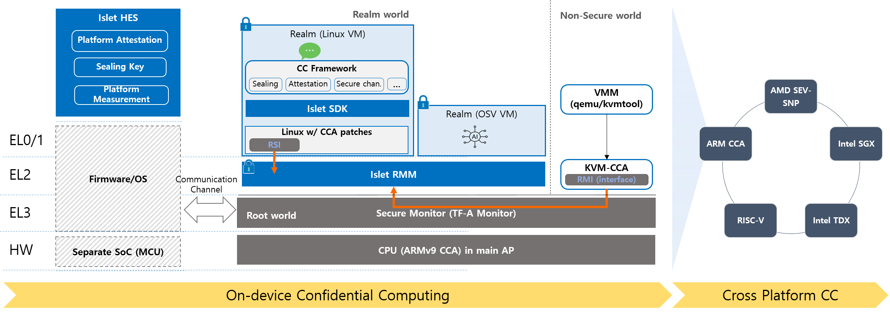
In designing Islet, we aim to to address the current security challenges in confidential computing technologies right from the very beginning. To ensure that our software is built with safety in mind, we have chosen to use the Rust programming language, known for its unique security model that ensures memory safety and concurrency safety. Moving forward, we also plan to incorporate formal verification techniques to further enhance the security of our design and implementation.
For more information, please visit our developer site.
A demo video (Confidential ML)

- This video shows how Islet achieves an end-to-end confidential machine learning with a chat-bot scenario.
- This video flows as follows.
- It starts with a slide that describes all components involved in this demo. All components will run on confidential computing platforms.
- (feed an ML model) The model provider feeds the ML model into the ML server. This is done through a secure channel established with the aid of the certifier framework.
- (run a coding assistant) A mobile device user asks a chat-bot application that runs on Islet for generating a function. And then, that request is passed on to the ML server through a secure channel. Finally, the user can see the result (i.e., function).
- (launch a malicious server) This time, we launch a malicious server to show a failure case. When it attempts to join the certifier service (on the right side of the screen), it will not pass authentication as it results in a different measurement. Therefore, the malicious server cannot interact with the mobile device user in the first place.
- To download this video, click here.
Contents
ARM Confidential Compute Architecture (CCA)
ARM CCA is the latest confidential computing technology that can extend confidential computing through to mobile devices (i.e., Samsung galaxy). For ARM-based devices, TrustZone has been the pillar of secure compute for over a decade and adopted for various use cases. However, one weakness of TrustZone makes it hard to keep up with an increasing number of applications that want to benefit from TrustZone. That is the lack of dynamic yet flexible memory allocation strategy.
To isolate TrustZone from normal worlds (non-secure worlds), hardware manufacturer like Samsung have had to dedicate some portion of physical memory to TrustZone, which raises a conventional memory-related tradeoff. To be fair, it’s not a problem that only belongs to TrustZone, some other TEEs (e.g., SGX) also suffer from it. And this is one of the reasons why recent confidential computing architectures take secure virtual machine approach (e.g., AMD SEV, Intel TDX, ARM CCA) over process-based ones (e.g., Intel SGX).
From the hardware manufacturer perspective, the capability of dynamic secure memory allocation is definitely the most appealing feature among others. But, this is not the only thing Islet is excited about. Islet can benefit from ARM CCA in many aspects that include but not limited to:
- dynamic secure memory allocation, which allows more secure applications to coexist with non-secure applications.
- attestation, which allows other entities (e.g., service provider) to easily verify applications running on mobile devices, which in turn making things easier to build complex trustworthy services.
- device protection, which could be accomplished by a so-called secure virtualization as specified in this blog post.
On top of the above features, what’s interesting to Islet is that CCA leaves the role of implementing key components that act as TCB (Trusted Computing Base) to manufacturers. In other words, hardware vendors can augment CCA to solve their unique challenges as long as their implementations adhere to the CCA specification. This flexibility would get significantly important considering updates when a new threat to confidential computing emerges. For example, there had been a lot of side-channel attacks targeting Intel SGX. However, since Intel SGX puts all security-related codes in hardware, such attacks couldn’t be mitigated by platform updates, demanding updates on a per-application basis.
We believe that Islet takes advantages of strong features of CCA while augmenting CCA in many aspects to get to the point where mobile device users truly get a great security experience.
How to build and run Islet
Islet provides Rust-based RMM and scripts to compose Confidential Computing Platform.
You can explore CCA platform with our scripts and
powerful third-party projects.
Setting build environment
The first step is to prepare to build our project.
./scripts/init.sh
Running a linux realm
// Start FVP on host
$ ./scripts/fvp-cca --normal-world=linux --realm=linux --rmm=islet
// Run Linux in a realm
$ ./launch-realm.sh
Alternatively it is possible to run Islet stack on Qemu RME by using a following command.
// Start Qemu RME on host
$ ./scripts/qemu-cca --normal-world=linux --realm=linux --rmm=islet
// Run Linux in a realm
$ ./launch-realm.sh
Running SDK sample apps after running a linux realm
// Move to shared dir on realm
$ cd /shared
// Insert RSI kernel module
$ insmod rsi.ko
// Run the sample app (rust)
$ ./sdk-example
// Run the sample app (c)
$ LD_LIBRARY_PATH=./ ./sdk-example-c
Running a linux realm with a networking support and prebuilt examples
See examples. To get details about its network configuration, see network.md
Testing the realm features
// Start FVP on fvp
$ ./scripts/fvp-cca --normal-world=linux --realm=linux --rmm=islet
// Test the realm features on fvp
$ ./test-realm.sh [attest]
Testing RMMs with tf-a-tests
# Islet RMM
$ ./scripts/fvp-cca --normal-world=tf-a-tests --rmm=islet
# TF RMM
$ ./scripts/fvp-cca --normal-world=tf-a-tests --rmm=tf-rmm
Note
tf-a-tests are not supported on Qemu RME stack.
Testing RMMs with ACS
# Islet RMM
$ ./scripts/fvp-cca --normal-world=acs --rmm=islet
# TF RMM
$ ./scripts/fvp-cca --normal-world=acs --rmm=tf-rmm
Note
ACS is not supported on Qemu RME stack.
Network configuration
Enable the capability of networking
In the environment of FVP-based emulation, there are many components involved so enabling a network is not an easy task. The three components involved are:
- (1) PC Host (Ubuntu only supported at this time of writing), which tries to launch FVP Host.
- (2) FVP Host, which is going to be running as a guest machine of PC Host.
- (3) Realm, which is going to be launched by FVP Host and acts as a guest to FVP Host.
In our network configuration, each of the three has different static IP address so that they can communicate with each other by specifying a proper destination IP address. Under this setting, any of the three can act as either server or client.
And here is how to make “FVP Host and Realm” capable of communicating through to PC Host.
First, make sure you are in the root directory of Islet and go through the following instructions.
In most cases, it would be sufficient to use a default configuration but --host-ip and --ifname.
# full command:
# ./scripts/fvp-cca --normal-world=linux-net --realm=linux --rmm=islet --hes --no-telnet --rmm-log-level=info --ifname=<the network interface name in your PC host> --host-ip=<the IP of your PC host>
$ ./scripts/fvp-cca --normal-world=linux-net --realm=linux --rmm=islet --hes --no-telnet --rmm-log-level=info --ifname=enp3s0 --host-ip=111.222.333.15
# this takes a default network configuration in which
# --host-ip: put in the IP address of your PC Host (111.222.333.15)
# --ifname: put in the network interface name of your PC Host (enp3s0)
# --host-tap-ip: 193.168.10.1 (default value)
# --fvp-ip: 193.168.10.5 (default value)
# --fvp-tap-ip: 193.168.20.1 (default value)
# --realm-ip: 193.168.20.10 (default value)
# --route-ip: 193.168.20.0 (default value)
In this setting, both FVP Host and Realm are able to connect to external networks (i.e., internet) through PC Host’s network interface you specify through --ifname.
A closer look at network configuration
This is how the aforementioned three components interact with each other:
// A default configuration
// Realm: IP: 193.168.20.10 (static address), Gateway: 193.168.20.1 (the tap device of FVP Host)
// FVP Host: IP: 193.168.10.5 (static address), Gateway: 193.168.10.1 (the tap device of PC Host)
// PC Host: IP: 111.222.333.15 (a real IP address + tap device + Source NAT)
Realm <----------------> FVP Host <-----------------> PC Host
(tap network) (ipv4_forward) (tap network)
Application Developer
Application developers are who want to develop Confidential Applications. Confidential Application is kind of application running on Confidential Computing.
We provides Islet SDK which supports to build Confidential Applications.
Islet SDK provides Confidential Computing API (Attestation, Sealing).
You can run Confidential Applications not only on Arm FVP(arm64)
but also on Host PC(x86_64, simulated version) with Islet SDK.
For more information about Islet SDK,
please refer this document.
Setting Rust environment
The first step is to prepare Rust environment.
$ ./scripts/deps/rust.sh
Run the example app with SDK
You can easily explore confidential computing APIs on your x86_64 host machine.
Islet SDK provides code examples and the build script.
$ cd sdk
$ make run-simulated
# Islet SDK examples: A simulated app running on x86_64
Simulated attestation operation on x86_64.
Verify Realm Signature.
== Signature Verification:
Sign Algo = [ES384]
Public Key = ["0476f988091be585ed41801aecfab858548c63057e16b
Data = ["846a5369676e61747572653144a1013822405901b6a70
Signature = ["ec4f3b28a00feabd1f58f94acb27fdc7957545409f1c9
== End of Signature Verification
...
Attestation result Ok(())
Sealing result Ok(())
Example code snippet
Below is code snippet of the example. You can refer the whole example code.
#![allow(unused)]
fn main() {
use islet_sdk::prelude::*;
// Attestation
let user_data = b"User data";
let report = attest(user_data)?;
let claims = verify(&report)?;
println!("Debug: {:?}", claims);
// Sealing
let plaintext = b"Plaintext";
let sealed = seal(plaintext)?;
let unsealed = unseal(&sealed)?;
assert_eq!(plaintext, &unsealed[..]);
}Contents
- 2.1. CCA platform architecture
- 2.2. Realm Management Monitor
- 2.3. Hardware Enforced Security
- 2.4. Software Development Kit
- 2.5. Attestation
- 2.6. Certifier
Platform architectures
This page aims to describe an overall CCA platform architecture and what components Islet is going to make a valuable addition to as a manufacturer.
The general CCA architecture
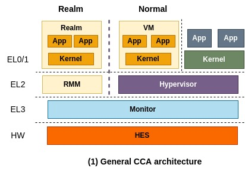
The general CCA architecture is depicted above. From the high level perspective, you think of this architecture as the one similar to a conventional TrustZone application programming model where one application breaks down into two pieces, one for normal world and the other one for secure world. More precisely, a virtual machine that runs on the normal world can securely delegate confidential operations to a corresponding realm.
You might not want to split up an application into two pieces. Instead, you may want to put a whole application in Realm and run it without code changes as confidential container does. That scenario can also be realized and is specified in the next section.
In this architecture, RMM (Realm Management Monitor) and Monitor (also known as EL3 Monitor, shortly EL3M) are called trusted firmware components that CCA relies on for security, therefore they must be securely implemented and verified. Monitor manages GPT (Granule Protection Table) which tracks which world each physical page belongs to and is responsible for context switching between different worlds (i.e., between Realm world and Normal world).
More specifically, a physical page assigned to a realm is marked as a realm page in GPT and it is used in memory translation. So, when a VM that runs on Normal world attempts to access that page, it will result in a translation fault. This is how CCA offers isolation between different worlds and enables dynamic secure memory allocation.
On top of it, RMM takes the responsibility of isolating a realm from the other realms, by making use of existing virtualization-based isolation technologies such as NPT (Nested Page Table). Also, it controls the execution of Realm as typical hypervisors do and is responsible for interacting with Normal world to provide some services, for example sending a network packet through VirtIO to Normal world.
Lastly, HES (Hardware Enforced Security) represents a dedicated hardware component that is separated from CPUs and behaves as RoT (Root of Trust). Detaching the ability of RoT from Monitor (i.e., firmware that runs on CPU) helps to minimize the responsibility of RMM.
The reference implementation of CCA
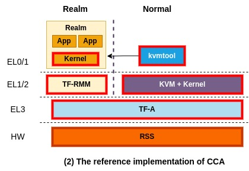
ARM has been working hard to bring and merge the reference implementation of CCA into a open-source ecosystem. The above picture depicts the current reference implementation of CCA at the time of this writing. Red boxes represent components that are making up of the reference implementation. They implement and manage TF-RMM and TF-A for RMM and Monitor, respectively, and use them for the reference implementation of CCA. Also, for HES, they implement RSS that runs on a dedicated MCU (Micro Controller Unit) isolated from CPUs.
For a software stack of virtualization, ARM currently uses a combination of KVM and kvmtool which is a light-weight VMM (virtual machine monitor). kvmtool is a tiny VMM written in C and offers basic functionalities to launch and manage a KVM VM, including virtio. To launch a realm, kvmtool takes as input a kernel binary and a root file system and asks TF-A (Monitor) for creating and executing the realm. That request passes through a linux kernel that supports interaction with Monitor.
Lastly, an OS kernel that runs on Realm has to be updated to interact with TF-RMM. For example, a realm can ask TF-RMM for generating an attestation report.
Islet implementation
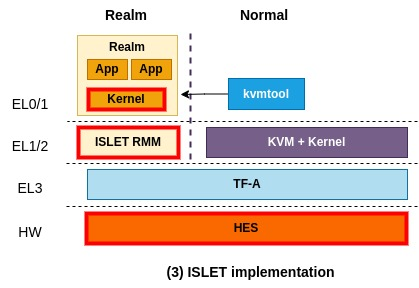
This picture shows what Islet is working on to augment CCA in the direction we want. The most important part would be Islet RMM which adheres to the specification of RMM but is written in Rust. We choose Rust to benefit from its strong type system and compile-time security, making things easier to reason about the security of complicated software.
In addition to rewriting RMM in Rust, we’re planning to put in some new features that are needed to accomplish our goals and could differentiate Islet RMM from TF RMM. Note that what features to add in are still in internal discussion. Also, we’re working on designing and developing our own HES tailored for real hardware platforms.
Other than the above components, Islet currently relies on the reference implementation of CCA.
Rust-based Realm Management Monitor
Introduction
Remote Attestation (RA) is the key of confidential computing platform, which is basically a method that convinces to verifier that a program (attester) is running on a proper confidential computing platform (e.g., ARM CCA).
Report
An attestation report is an evidence produced by attester and consumed by verifier. In ARM CCA, report consists of two different tokens:
- CCA Platform token: it is used to assure that attester is running on a secure CCA platform. It covers the measurements of CCA platform components (e.g., RMM and EL3) and whether it is in debug state.
- Realm token: this token is used to hold the measurements of Realm, which is equivalent to a virtual machine that may contain kernel and root file system.
You can test and see what this report (in form of CCA token) looks like through our CLI tool and the Veraison attestation demo.
Delegated Attestation in Islet RMM
The implementation in Islet RMM conforms to Realm Management Monitor specification version 1.0-REL0.
This section describes how delegated attestation works in Islet RMM implementation. The process involves two tokens that together form the complete attestation evidence.
Two Tokens
As mentioned before, the attestation report consists of two tokens:
- CCA Platform Token: This token is signed by the CCA Platform Attestation Key (CPAK). It contains measurements of platform components like bootloaders, RMM firmware, and EL3 monitor.
- Realm Token: This token is signed by the Realm Attestation Key (RAK). It contains measurements specific to the Realm (virtual machine).
RAK and Platform Token from HES
The RAK key pair and the CCA platform token are fetched from HES (Hardware Enforced Security). When RMM initializes, it requests these from TF-A, which then forwards the request to HES.
The process happens in
rmm/src/rmm_el3/mod.rs
during the setup_el3_ifc() function:
get_realm_attest_key()- fetches the RAK private keyget_plat_token()- fetches the CCA platform token
The actual SMC calls to TF-A are implemented in
rmm/src/rmm_el3/iface.rs.
Binding Between Tokens
The RAK public key (and therefore the Realm token) is bound to the CCA platform token. This binding is done through the challenge field in the platform token.
The challenge is computed as hash(RAK_pub), where RAK_pub is the public part
of the Realm Attestation Key. This hash computation happens in
rmm/src/rmm_el3/digest.rs.
When the platform token is requested, RMM sends the hash of RAK public key to HES. HES includes this hash as the challenge claim in the platform token. This creates a cryptographic binding between the two tokens.
Caching
The RAK private key and the platform token are cached by RMM after the initial
fetch. They are stored in static variables protected by spinlocks in
rmm/src/rmm_el3/mod.rs:
REALM_ATTEST_KEY- stores the RAK private keyPLAT_TOKEN- stores the CCA platform token
This caching is important because:
- The RAK private key is used later to sign Realm attestation tokens
- The platform token is included in every complete attestation response
- Fetching from HES each time would be slow and unnecessary
Token Format
Both tokens use COSE (CBOR Object Signing and Encryption) format. Specifically, they are wrapped in COSE_Sign1 structure, which means a single signature.
The format follows the RMM spec. 1.0-REL0 A7.2.1.
The complete CCA attestation token is a CBOR map that contains:
cca-token = #6.399(cca-token-collection) ; CMW Collection
; (draft-ietf-rats-msg-wrap)
cca-platform-token = bstr .cbor COSE_Sign1_Tagged
cca-realm-delegated-token = bstr .cbor COSE_Sign1_Tagged
cca-token-collection = {
44234 => cca-platform-token ; 44234 = 0xACCA
44241 => cca-realm-delegated-token
}
; EAT standard definitions
COSE_Sign1_Tagged = #6.18(COSE_Sign1)
; Deliberately shortcut these definitions until EAT is finalised and able to
; pull in the full set of definitions
COSE_Sign1 = "COSE-Sign1 placeholder"
The signing algorithm used is ES384 (ECDSA with SHA-384 and P-384 curve). You
can see the token construction in
rmm/src/rsi/attestation/mod.rs.
Measurement Extend RSI Handling
Realm measurements are stored in measurement slots. There are 5 slots in total:
- Slot 0: RIM (Realm Initial Measurement)
- Slots 1-4: REMs (Realm Extensible Measurements)
The measurements are described in RMM spec. 1.0-REL0 A7.1.
The measurement slot definitions are in
rmm/src/measurement/mod.rs.
RSI_MEASUREMENT_EXTEND
This RSI call is defined in RMM spec. 1.0-REL0 B5.3.7.
When a Realm calls RSI_MEASUREMENT_EXTEND, RMM extends one of the extensible
measurement slots. The handler is implemented in
rmm/src/rsi/mod.rs.
The extend operation works like this:
- Read the current measurement value from the specified slot
- Hash together: old measurement value + new data
- Store the result back to the measurement slot
The actual hash computation is done in
rmm/src/measurement/ctx.rs
in the extend_measurement() function.
Note that slot 0 (RIM) cannot be extended via RSI. It is set during Realm creation and REC (Realm Execution Context) creation.
Measurement Storage
Measurements are stored in the Realm Descriptor (Rd) structure. The Rd
structure is defined in
rmm/src/realm/rd.rs.
Each measurement slot can hold up to 64 bytes (512 bits), which supports SHA-512 hashes.
Attestation Token Retrieval RSI Handling
The attestation token retrieval uses two RSI calls: INIT and CONTINUE. This is because the complete token can be large and may not fit in registers.
RSI_ATTEST_TOKEN_INIT
This RSI call is defined in RMM spec. 1.0-REL0 B5.3.2.
This call initializes the attestation process. The handler is in
rmm/src/rsi/mod.rs.
The caller provides a 64-byte challenge (nonce) in registers x1-x8. RMM stores this challenge and prepares for token generation.
The response includes the total token size, so the caller knows how much to allocate.
RSI_ATTEST_TOKEN_CONTINUE
This RSI call is defined in RMM spec. 1.0-REL0 B5.3.1.
This call retrieves the token in chunks. The handler is in
rmm/src/rsi/mod.rs.
The caller provides:
- IPA (Intermediate Physical Address) where to write the token
- Offset within the token
- Buffer size
RMM returns a portion of the token and indicates if more data is available.
Token Construction
The token is constructed in
rmm/src/rsi/attestation/mod.rs
in the get_token() function:
-
Create Realm claims with:
- Challenge (from caller)
- RIM and REMs (from Rd)
- Personalization value (from Rd)
- RAK public key
-
Build the Realm token as CBOR map and sign it with RAK private key
-
Combine with cached platform token into the complete CCA attestation token
The Realm claims structure is defined in
rmm/src/rsi/attestation/claims.rs.
The final token is returned to the Realm, which can then send it to a verifier for attestation.
Sealing Key Derivation
Introduction
Sealing is a concept that is commonly used in many Confidential Computing technologies, like AMD SNP-SEV or Intel SGX. Sealing refers to a process of encrypting the data within a trusted execution environment (TEE), where an encryption key is bound to an enclave’s identity, its state and a platform. This way, only the same enclave that encrypted the data is able to decrypt it (unsealing). Sealing requires a key derivation mechanism that is secure and allows binding the key to the enclave’s identity, its state and a particular hardware platform.
This document describes the design and implementation of the Sealing Key Derivation mechanism for the Islet project.
General description
The diagrams below show the sealing key derivation scheme for Arm CCA capable platforms. Here are the main ideas behind this design:
-
The sealing key should be bound to a particular hardware platform, thus the key derivation scheme takes as an input HUK (Hardware Unique Key, described in section “5.1 Hardware provisioned parameters” of Arm CCA Security Model 1.0). Binding the sealing key to HUK prevents unauthorized transfer of sealed data to another hardware platform.
-
The sealing key should be bound to the security lifecycle state of CCA Platform. This makes the sealed data inaccessible when someone tries to switch the platform into any other mode than Secured (Arm CCA Security Model 1.0). In particular, it prevents accessing the sealed data when the device is switched into non-secure debug modes.
-
The key derivation process by default takes an authority-based Virtual Hardware Unique Key (VHUK_A), a Realm Personalization Value, flags provided in the RSI command, and so-called Authority Data (please refer to the Open Profile for DICE specification), which is identity information about the developer who created a particular firmware or software component. Relying on the Authority Data makes the derived keys immune to software and firmware updates as long as the realm and firmware come from the same developers.
-
The key derivation process is partially configurable. We can choose the input key material (authority-based or measurement-based Virtual Hardware Unique Keys). We can configure whether to include RIM (Realm Initial Measurement), Realm ID and SVN (Security Version Number) as key material during the key derivation process. This flexibility might be required when a Realm developer wants to seal the data to a particular Realm binary (setting the RIM flag), sacrificing the immutability of the sealing keys to SW/FW updates. This approach is similar to those implemented in Intel SGX and AMD SNP-SEV.
-
We rely on the idea of a layered derivation process used by the “Open Profile for DICE” specification. In our design, RMM produces the Realm sealing key for an operating system and indirectly to user space privileged services. For example, one of these services might be an application manager that is responsible for downloading, updating and launching applications. The application manager may use the Realm sealing key to derive secure persistent storage keys for its own purposes (e.g., persistent storage for downloaded applications) and a dedicated application sealing key (e.g., by using boot measurements of an application as info in the key derivation process). This layered approach ensures that any change of any of the firmware or software components placed below the application will result in a change of the application sealing key. As a result, the application is able to access its sealed data if and only if it is running on the same platform that uses the same firmware as at the moment when the data was sealed.
The key derivation methods to be secure should follow well-known standards and recommendations such as RFC5869, NIST SP 800-108r1, and NIST SP 800-56cr2.
Security considerations
Currently we’re using an emulated environment and a stand-alone Islet HES application. In the future, Islet HES may be ported to real hardware platforms. Thus, it’s worth mentioning what should be taken into account while porting HES to such platforms.
According to the Arm CCA Security Model 1.0, Hardware Unique Keys once provisioned to the HES should not be collected at the platform manufacturer’s premises, i.e., all copies should be destroyed once provisioned into CCA HES. The recommended solution is when HES generates the HUK itself internally during the first run and saves it within shielded locations (e.g., One Time Programmable memory). This approach effectively reduces the likelihood of the leakage of the key. Whether generated outside or inside the HES, the HUK should be generated using a high-quality RNG (Random Number Generator) that follows the recommendations of the NIST SP 800-133r2 and RFC4086 documents. This ensures the high entropy of the initial key material.
Key derivation process
The process of sealing key derivation is split into three components: the CCA HES (Hardware Enforced Security), the Islet RMM and the Realm components.
Derivation process of Virtual Hardware Unique Keys in HES
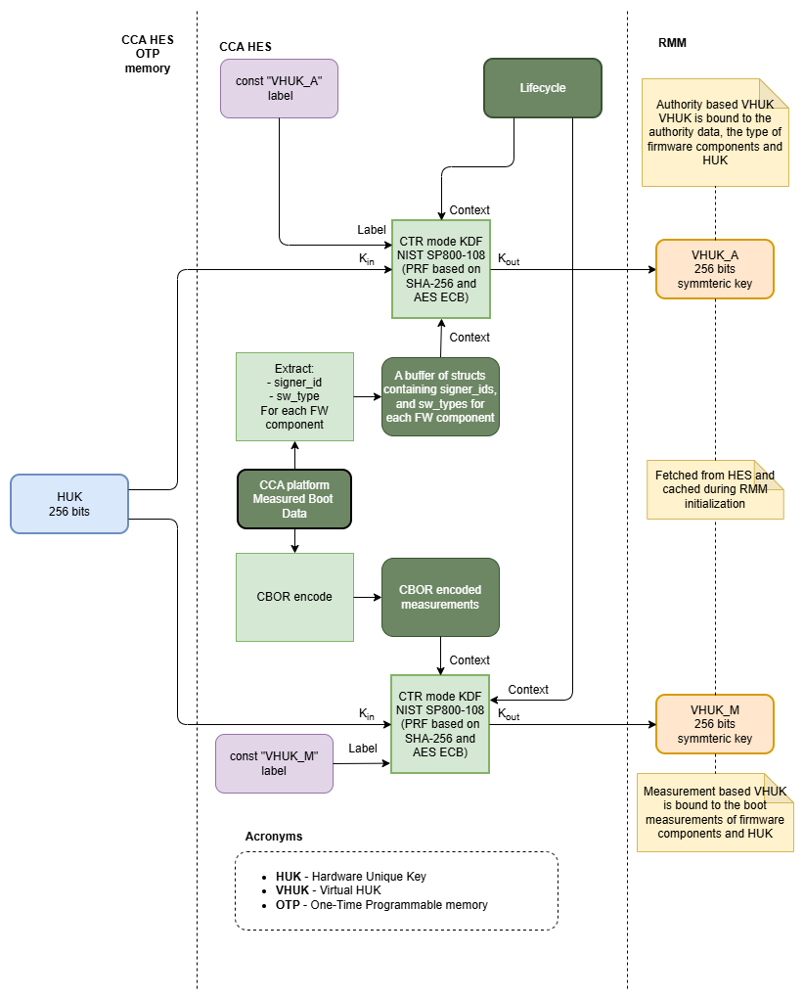
Figure 1: Sealing key derivation process in HES
The first step of the sealing key derivation process takes place in CCA HES, which produces Virtual Hardware Unique Keys (VHUKs) used as an IKM (Input Key Material) of the realm sealing key derivation process.
During the platform startup, HES gathers all firmware measurements from the AP (Application Processor) and other trusted subsystems. This information together with the HUK (Hardware Unique Key) and the security lifecycle state of CCA Platform is used to derive a 256-bit long VHUK_A (Authority-based Virtual HUK) and a 256-bit long VHUK_M (Measurement-based Virtual HUK).
The derivation process of VHUK_A and VHUK_M is performed on demand and is requested by RMM (Realm Management Monitor) during its initialization.
When deriving the VHUK_A, HES uses the collected signer_id and sw_type fields of the measurement_metadata_t structures of each firmware component. This makes the VHUK_A immune to firmware updates (including HES firmware and other trusted subsystems).
In the case of VHUK_M, the inputs include full boot measurements of all firmware components (struct measurement_t). VHUK_M is bound to particular versions of CCA Platform firmware.
Both Virtual Hardware Keys are bound to a particular instance of hardware (thanks to HUK). This prevents an attacker from unauthorized migration of the sealed data to another platform. Binding the keys to the lifecycle prevents accessing the sealed data when the platform runs in a debug mode.
The key derivation function used here is described in chapter 4.1 “KDF in Counter Mode” of NIST SP800-108 where PRF (Pseudorandom Function) is based on SHA-256 and AES ECB. This is the same function that is already used for derivation of CPAK (CCA Platform Attestation Key) and DAK (Delegated Attestation Key that is also an alias of RAK - Realm Attestation Key).
Derivation process of Realm Sealing Keys in RMM
During the RMM initialization, VHUK_A and VHUK_M are fetched from the HES via the TF-A’s RMMD service. RMM caches both VHUKs for further derivations of Realm Sealing Keys (SLKs).
The diagram below depicts the details of the derivation process of realm sealing keys.
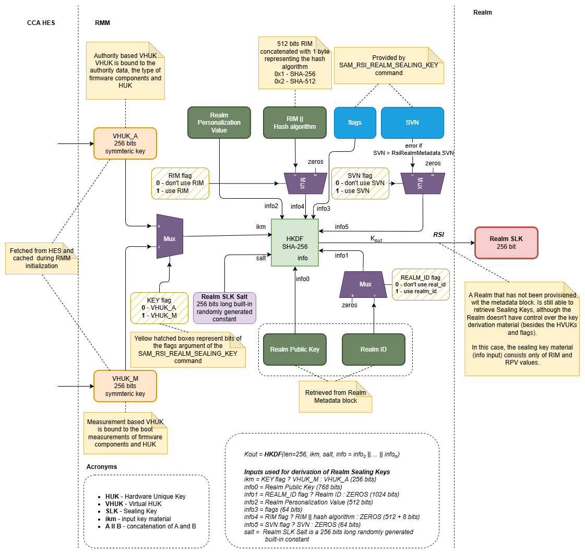
Figure 2: Sealing key derivation process in Islet RMM
After launching a Realm, the realm may request its own Realm SLK (Realm Sealing Key) by calling a dedicated RSI (Realm Service Interface) command RSI_ISLET_REALM_SEALING_KEY passing appropriate parameters.
The key derivation process is performed on demand, while handling the RSI command.
By default, the key derivation function takes as an input the VHUK_A (Authority-Based VHUK), the flags (passed as RSI input values), Realm Public Key and the Realm Personalization Value.
Optionally, RIM (Realm Initial Measurement), Realm ID, and user-provided SVN (Security Version Number) can be fed into the key derivation function.
Note that the Realm Public Key and the Realm ID are extracted from the RmiIsletRealmMetadata structure described in the Realm metadata document.
A caller may also choose the input key material, whether it is a VHUK_M (based on measurements) or VHUK_A (Authority-based VHUK). When the SVN flag is set, a caller must provide an SVN number (it can be previously retrieved by the realm software using the RSI_ISLET_REALM_METADATA command). The provided SVN number must be less than or equal to the SVN of the currently running realm (the SVN of the currently running realm is included in the RmiIsletRealmMetadata structure provided during the launch of the realm). This rule allows migrating sealed data from older realm versions to the newer ones while at the same time preventing older, possibly vulnerable, realms from accessing data created by the newer realm version. A similar mechanism is implemented in Intel SGX and AMD SEV-SNP. For more information please refer to section 5.7.2 Certificate-Based Enclave Identity of Intel SGX explained document and this article https://www.intel.com/content/dam/develop/external/us/en/documents/hasp-2013-innovative-technology-for-attestation-and-sealing-413939.pdf.
In the case when the realm has not been provisioned with the RmiIsletRealmMetadata block, the sealing key is to be derived from the fixed key material, i.e., RIM, hash algorithm, flags and the chosen VHUK. This allows realms that have not been provisioned with their metadata to still use the sealing mechanism. However, these derived keys are bound to the initial measurement of the realm, so in case of an update of such a realm, the sealing keys will change.
The key derivation function used in this derivation process is HKDF SHA-256 (HMAC-based Key Derivation Function) described in RFC5869. The HKDF takes four parameters: the length of the output key, the initial key material (ikm), the constant salt parameter (generated using a high-entropy source) and the info parameter that allows binding the keys to different contexts. The info parameter is a fixed-length buffer that contains concatenated key material (inputs labeled as info0 to info5 in the diagram). Note that when a particular component of the info buffer is not used, it is substituted with the all-zeros buffer of the same length as the original component. The generated Realm Sealing Key is 256 bits long.
Derivation process of Persistent Storage Keys in Realm
The diagram below depicts an example of how the Realm Sealing Keys can be utilized by software components running in a realm.
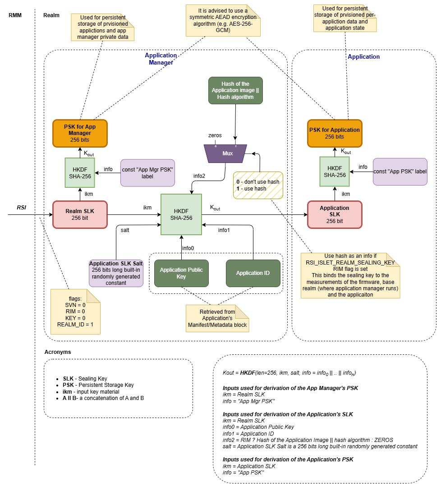
Figure 3: Sealing key derivation process in a Realm
The resulting “Realm SLK” (256 bits) can be used by Realm software components (e.g., Application Manager, applications) to perform further derivations of encryption keys for persistent storage.
In the example, the privileged Application Manager service derives two keys:
- PSK for App Manager - the Persistent Storage Key for encryption of the Application Manager’s private data (e.g., provisioned applications, state, etc.). Note that the HKDF doesn’t take salt here, which means that the salt is a zero-filled buffer.
- Application SLK - the Application Sealing Key derived from the “Realm SLK”, Application Public Key and the Application ID (read from the application’s manifest). If the persistent data has to be bound to a concrete binary version of the application, the Hash of the Application should be used as part of the info parameter.
The Application derives only one key:
- PSK for Application - it is a Persistent Storage Key derived from the “Application SLK” provided by the Application Manager Service.
Note
The diagram is showing only an example how the “Realm SLK” could be used by the realm software for key derivations. The application provisioning mechanism and Arm CCA on Android subprojects use slightly different approach although conceptually they are similar to this example.
Caution
The sealing keys should not be revealed or transferred outside a realm.
Important
It is not recommended to use Realm Sealing Keys directly, but instead derive other symmetric keys from them (e.g., a symmetric encryption key for persistent secure storage).
Important
In the diagram we have the PSK (Persistent Storage Key) for the Application Manager and PSK for Application derived from SLKs. Although these two symmetric PSKs could be used to directly encrypt/decrypt data, it might be better to use them indirectly, i.e., by sealing randomly generated keys. And then use those randomly generated keys to encrypt data. This might simplify a data migration mechanism, as the encrypted data could be transferred directly to another device without the need for on-the-fly decryption.
Required changes in firmware and software components
The Sealing Key functionality requires some changes in the Islet project. The following components have been modified:
HES
- Implementation of the derivation of Virtual Hardware Unique Keys as described in the diagram. The key derivation function is based on CTR mode KDF described in NIST SP800-108, where PRF (Pseudo Random Function) uses SHA-256 and AES ECB. This KDF function is already implemented here and used for derivation of CPAK (CCA Platform Attestation Key) and DAK (Delegated Attestation Key). For more information about key derivation please refer to the HES documentation.
- Implementation of handling of an additional command over the communication channel that allows fetching the VHUKs from the HES. Note that, for demoing, and due to limitations of our setup (an emulated environment), the communication between the Arm emulator (Arm VFP) and a stand-alone HES application goes through an FVP’s UART interface. This mechanism was already implemented for handling the measured boot and DAK (RAK) retrieval (for more information please refer to the HES documentation).
TF-A/RMMD
- The RMMD of TF-A (services/std_svc/rmmd) has been extended with an additional SMC command (RMM_ISLET_GET_VHUK) for retrieval of VHUKs.
- The TF-A’s lib/psa/ has been extended with additional functionality used to retrieve VHUK and to exchange the messages between the main AP and the HES via the UART-based channel (fvp and qemu) and to route additional SMC’s (services/islet_svc/islet_svc_setup.c)
Islet RMM
- The fetching of VHUKs during the initialization process of Islet RMM has been added (islet/rmm/src/rmm_el3/mod.rs and iface.rs). The VHUKs are fetched only once and cached during the initialization of Islet RMM.
- The Islet RMM has been extended with the implementation of Realm Sealing Key derivation process. The derivation process is performed while handling the RSI_ISLET_REALM_SEALING_KEY command.
Realm
- The Linux kernel driver (linux-rsi project) has been modified to expose the RSI_ISLET_REALM_SEALING_KEY command to privileged user space services.
- The key derivation scheme has been implemented by App Manager in the case of the Application Provisioning mechanism. In the case of Confidential Computing on Android solution, the derivation scheme re-uses the Sealing CDI derivation scheme presented in Open Profile for DICE. For more details please refer to the Sealing Key Derivation section of the Arm CCA and Microdroid Integration document.
The conceptual diagram below depicts components involved in the sealing key derivation process and interfaces between these components.
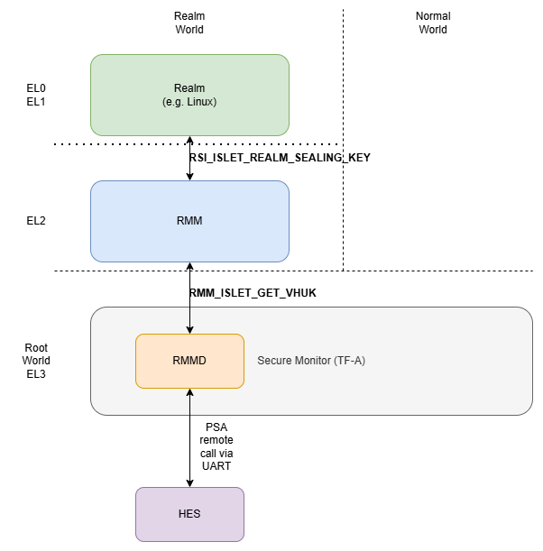
Figure 4: Components involved in Sealing Key Derivation mechanism
RMM interface
This section describes changees in the specification of the RMM’s RSI interfaces required to provide sealing key retrieval functionality.
RSI_ISLET_REALM_SEALING_KEY command
This additional RMI command allows Realms to retrieve their Realm Sealing Keys. Here are the details of the API for RSI_ISLET_REALM_SEALING_KEY.
Input values
| Name | Register | Bits | Type | Description |
|---|---|---|---|---|
fid | X0 | 63:0 | UInt64 | FID for RSI_ISLET_REALM_SEALING_KEY, value 0xC7000191 (refer to Vendor specific SMC Allocation for Realm Metadata mechanism and Sealing Keys Derivation) |
flags | X1 | 63:0 | RsiIsletSealingFlags | Flags describing what optional key material should be fed into the KDF during the key derivation process. The flags are described below. |
svn | X2 | 63:0 | UInt64 | An optional SVN value used when 3rd bit of flags register is used. Provided svn number must be less than or equal to the svn extracted from the RmiIsletRealmMetadata structure. |
RsiIsletSealingFlags type
The RsiIsletSealingFlags is a concrete type. The width of the RsiIsletSealingFlags fieldset is 64 bits.
| Name | Bits | Description | Value |
|---|---|---|---|
KEY | 0 | Allows selecting the input key material (IKM) for the key derivation process. | RsiIsletSealingIkm |
RIM | 1 | Determines whether the RIM and a hash algorithm are used as an info component for the key derivation process. | RsiIsletSealingRim |
REALM_ID | 2 | Determines whether the realm_id of RmiIsletRealmMetadata is used as an info component for the key derivation process. | RsiIsletSealingRealmId |
SVN | 3 | Determines whether the svn provided as an input of this command is used as an info component for the key derivation process. | RsiIsletSealingSvn |
| 4:63 | Reserved |
RsiIsletSealingIkm type
The RsiIsletSealingIkm is a concrete type. The width of the RsiIsletSealingIkm fieldset is 1 bit.
| Encoding | Name | Description |
|---|---|---|
| 0 | RSI_ISLET_SLK_USE_IKM_VHUK_A | **VHUK_A** is used as an input key material |
| 1 | RSI_ISLET_SLK_USE_IKM_VHUK_M | **VHUK_M** is used as an input key material |
RsiIsletSealingRim type
The RsiIsletSealingRim is a concrete type.
The width of the RsiIsletSealingRim fieldset is 1 bit.
| Encoding | Name | Description |
|---|---|---|
| 0 | RSI_ISLET_SLK_NO_RIM | Don’t use RIM and hash algorithm as an info component. Instead, zeros are mixed in. |
| 1 | RSI_ISLET_SLK_RIM | Use RIM and a hash algorithm as an info component. |
RsiIsletSealingRealmId type
The RsiIsletSealingRealmId is a concrete type.
The width of the RsiIsletSealingRealmId fieldset is 1 bit.
| Encoding | Name | Description |
|---|---|---|
| 0 | RSI_ISLET_SLK_NO_REALM_ID | Don’t use realm_id extracted from the RmiIsletRealmMetadata structure as an info component. Instead, zeros are mixed in. |
| 1 | RSI_ISLET_SLK_REALM_ID | Use realm_id extracted from the RmiIsletRealmMetadata structure as an info component. |
For more info please refer to the Realm metadata document.
RsiIsletSealingSvn type
The RsiIsletSealingSvn is a concrete type.
The width of the RsiIsletSealingSvn fieldset is 1 bit.
| Encoding | Name | Description |
|---|---|---|
| 0 | RSI_ISLET_SLK_NO_SVN | Don’t use the svn provided by the RSI_ISLET_REALM_SEALING_KEY command as an info component. Instead, zeros are mixed in. |
| 1 | RSI_ISLET_SLK_SVN | Use svn provided by the RSI_ISLET_REALM_SEALING_KEY command as an info component. |
Output values
| Name | Register | Bits | Type | Description |
|---|---|---|---|---|
result | X0 | 63:0 | RsiCommandReturnCode | Status code |
slk_0 | X1 | 63:0 | Bits64 | Doubleword 0 of the Realm sealing key |
slk_1 | X2 | 63:0 | Bits64 | Doubleword 1 of the Realm sealing key |
slk_2 | X3 | 63:0 | Bits64 | Doubleword 2 of the Realm sealing key |
slk_3 | X4 | 63:0 | Bits64 | Doubleword 3 of the Realm sealing key |
Failure conditions
| ID | Condition |
|---|---|
| svn_valid | pre: IsSet(flags, SVN) && rd.RmiIsletRealmMetadata != 0 && (svn == 0 || svn > RmiIsletRealmMetadata.svn) post: result == RSI_ERROR_INPUT |
Common use cases
| Input values | Description |
|---|---|
| flags: KEY=0 (VHUK_A) RIM=0 REALM_ID=1 SVN=0 | Derives the key immune to software and firmware updates as long as the realm and firmware are produced by the same developers. It is possible for older software to access the sealed data of newer ones. Recommended for sealing data that represents the state of the realm or when it is user data that comes from the host side. |
| flags: KEY=0 (VHUK_A) RIM=0 REALM_ID=1 SVN=1 svn: <number> | Derives the key immune to software and firmware updates as long as the realm and firmware are produced by the same developers. Older versions of realms have no access to data sealed by newer versions. Recommended for sealing data that represents the state of the realm or when it is user data that comes from the host side. |
| flags: KEY=1 (VHUK_M) RIM=1 REALM_ID=1 SVN=0 | The sealing key is bound to particular binary versions of firmware and realm. When using that key, an updated version won’t have access to the previous versions. Recommended for sealing critical data such as keys and certificates provisioned from external entities upon the remote attestation process. For such critical data, an update of an application will require re-provisioning preceded by a remote attestation of the realm and the platform. |
RMMD interface
This section describes the required changes to the RMMD (TF-A) interface to allow fetching the Virtual Unique Keys from HES.
RMM_ISLET_GET_VHUK command
This command is used by RMM to retrieve the VHUK via the RMMD service. A dedicated SMC handler implemented in RMMD should request the VHUK from the HES and return it to the RMM.
Input values
| Name | Register | Bits | Type | Description |
|---|---|---|---|---|
fid | X0 | 63:0 | UInt64 | FID for RMM_ISLET_GET_VHUK, value 0xC70001B0 |
keyid | X1 | 63:0 | UInt64 | VHUK key identifier: 0x1 - VHUK_A - Authority-based VHUK that is immune to firmware updates (as long as the firmware originates from the same developer and is of the same type)0x2 - VHUK_M - Measurement-based VHUK that is derived from the measurements of the firmware. This makes the key bound to particular firmware binaries. |
Output values
| Name | Register | Bits | Type | Description |
|---|---|---|---|---|
result | X0 | 63:0 | UInt64 | Status code (E_RMM_* defined in tf-a/include/services/rmmds_svc.h) |
vhuk_0 | X1 | 63:0 | Bits64 | Doubleword 0 of the VHUK |
vhuk_1 | X2 | 63:0 | Bits64 | Doubleword 1 of the VHUK |
vhuk_2 | X3 | 63:0 | Bits64 | Doubleword 2 of the VHUK |
vhuk_3 | X4 | 63:0 | Bits64 | Doubleword 3 of the VHUK |
Failure conditions
| ID | Condition |
|---|---|
| vhuk_id | pre: keyid != 0x1 && keyid != 0x2 post: result == E_RMM_INVAL |
Security analysis and threat model
This section discusses the security properties of the sealing key derivation mechanism, potential attack vectors, and how the design mitigates them.
Trust assumptions
- The HES (Hardware Enforced Security) is trusted to correctly derive VHUKs, protect the HUK, and securely communicate with TF-A/RMMD.
- The HUK (Hardware Unique Key) is trusted to be generated using a high-quality RNG, stored in a shielded location, and never leaked outside the HES.
- The TF-A/RMMD is trusted to correctly route VHUK retrieval requests between the RMM and HES, and to not expose VHUKs to untrusted components.
- The RMM is trusted to correctly implement the sealing key derivation process, protect cached VHUKs and derived sealing keys, and enforce SVN constraints.
- The realm software that requests a sealing key via
RSI_ISLET_REALM_SEALING_KEYis trusted to protect the returned sealing key and use it appropriately. However, different realms on the same platform are not trusted by each other. - The host (hypervisor, kvmtool, Linux kernel KVM layer) is not trusted — it may be compromised or malicious.
Threat model
T1: HUK extraction
Threat: An attacker attempts to extract the HUK from the HES, for example by exploiting a vulnerability in the HES firmware, through physical attacks on the hardware, or by accessing HUK copies retained at the manufacturer’s premises.
Mitigation: The HUK should be generated internally by the HES during first run and stored in a shielded location (e.g., One Time Programmable memory). All copies at the manufacturer’s premises should be destroyed after provisioning, as recommended by the Arm CCA Security Model 1.0. The HUK should be generated using a high-quality RNG following NIST SP 800-133r2 and RFC 4086. Physical extraction countermeasures (e.g., tamper detection, side-channel resistance) depend on the specific hardware implementation and are outside the scope of this design. If the HUK is compromised, all sealing keys across all realms on the platform can be derived by the attacker, making HUK protection the most critical security requirement.
T2: VHUK extraction from RMM memory
Threat: An attacker attempts to extract cached VHUK_A or VHUK_M from the RMM’s memory, for example through a vulnerability in the RMM or through DMA attacks.
Mitigation: The RMM runs at R-EL2 with memory access controls that prevent the host and realms from directly accessing RMM memory. The VHUKs are cached during RMM initialization and used for on-demand key derivation. Access to RMM memory from the host or realms is prevented by the CCA hardware isolation guarantees. The RMM must ensure that VHUKs are never written to shared memory regions or logged. If a VHUK is compromised, all realm sealing keys derived from that VHUK can be computed by the attacker (assuming they also know the derivation inputs).
T3: VHUK interception during transfer from HES to RMM
Threat: An attacker intercepts the VHUK while it is being transferred from the HES to the RMM via the TF-A/RMMD service.
Mitigation: The VHUK transfer occurs through the TF-A (EL3) SMC interface, which is the most privileged software level on the AP. The communication channel between HES and TF-A is implementation-specific. In the current emulated environment, UART is used, which does not provide confidentiality — this is acceptable only for demo/debug purposes. On real hardware, the HES-to-TF-A communication channel must be secured (e.g., using encrypted and authenticated channels, or a hardware-protected internal bus). The TF-A must ensure that VHUKs are not exposed to less privileged components (NS-EL2, NS-EL1, etc.) during the transfer.
T4: Sealing key extraction by another realm
Threat: A malicious realm attempts to derive the sealing key of a different realm by calling RSI_ISLET_REALM_SEALING_KEY with parameters that would produce the target realm’s key.
Mitigation: The RMM binds the sealing key derivation to the calling realm’s identity. The Realm Public Key and Realm ID used in the derivation are extracted from the RmiIsletRealmMetadata structure associated with the calling realm’s descriptor — they are not taken from the RSI command inputs. This means a realm cannot substitute another realm’s identity in the key derivation process. Additionally, the VHUK is bound to the platform hardware (via HUK), so a realm on a different platform cannot derive the same sealing key even with identical derivation parameters.
T5: SVN downgrade in sealing key derivation
Threat: A realm requests a sealing key with an SVN value greater than its current SVN (as stored in RmiIsletRealmMetadata), attempting to derive a key that belongs to a newer version of the realm and access its sealed data.
Mitigation: The RSI_ISLET_REALM_SEALING_KEY command enforces that the provided SVN must be less than or equal to the SVN in the RmiIsletRealmMetadata structure. This is checked as a failure condition (svn_valid). This ensures that older (or current) realm versions cannot derive keys belonging to newer versions, while newer versions can still derive keys of older versions (supporting forward migration of sealed data).
T6: Sealing key exposure outside the realm
Threat: The sealing key is leaked outside the realm, for example by being written to shared memory, logged, or transmitted over a network.
Mitigation: The sealing key is returned directly to the calling realm via registers (X1–X4) in the RSI response, never written to shared memory by the RMM. It is the realm software’s responsibility to protect the sealing key after receiving it. The document explicitly warns that sealing keys should not be revealed or transferred outside a realm. If realm software is compromised, the sealing key can be extracted — this is an inherent limitation of software-based key protection within a TEE.
T7: Key derivation manipulation via flag tampering
Threat: An attacker (e.g., a compromised host or middleware) modifies the flags parameter of the RSI_ISLET_REALM_SEALING_KEY call to cause the realm to derive a different key than intended, potentially one the attacker can predict.
Mitigation: The flags parameter is provided by the realm software itself (running at RL-EL1/RL-EL0), not by the host. The RSI call is made directly by the realm via an SMC instruction, and the host cannot intercept or modify the parameters. The RMM uses the flags as provided by the realm. If the realm software is compromised, it could intentionally use incorrect flags, but this is equivalent to T6 (the realm software itself is untrusted).
T8: Replay of sealed data
Threat: An attacker replays previously sealed (encrypted) data to a realm, causing the realm to process stale or incorrect state.
Mitigation: The sealing key derivation mechanism provides confidentiality and binding to identity/state, but does not inherently provide replay protection for sealed data. Replay protection is the responsibility of the realm software that uses the sealing keys. For example, the realm software should include version counters, timestamps, or sequence numbers within the sealed data payload and verify them during unsealing. The SVN mechanism provides some protection against rollback of the realm itself, but not against replay of sealed data blobs.
T9: Cross-platform sealing key derivation (key migration)
Threat: An attacker attempts to derive the sealing key for one platform on a different platform, enabling unauthorized migration of sealed data.
Mitigation: The sealing key derivation is bound to the platform’s HUK via the VHUK. Since the HUK is unique to each hardware instance and never leaves the HES, an attacker on a different platform cannot derive the same VHUK or sealing key, even with full knowledge of the derivation parameters and algorithm. This effectively prevents unauthorized migration of sealed data across platforms.
T10: Side-channel attacks on key derivation
Threat: An attacker uses side-channel analysis (timing, power, electromagnetic) to extract information about the VHUK or sealing keys during the key derivation process in the RMM or HES.
Mitigation: The key derivation functions used (HKDF SHA-256 in RMM, NIST SP 800-108 KDF in HES) should be implemented with constant-time operations to prevent timing side-channels. The RMM and HES execute in isolated environments (R-EL2 and secure subsystem, respectively) which limits the attacker’s ability to perform high-resolution side-channel measurements. However, on real hardware, implementers should ensure that all cryptographic operations are constant-time and that cache-timing attacks are mitigated (e.g., by flushing caches between realm switches).
T11: Weak or reused salt in HKDF
Threat: The salt parameter used in the HKDF derivation of realm sealing keys is weak, predictable, or reused across derivations, reducing the security of the derived keys.
Mitigation: The salt is generated using a high-entropy source as stated in the document. The RMM must ensure that the salt is generated using a cryptographically secure random number generator and that it is unique per platform. The salt is a constant parameter (not per-derivation), which is acceptable for HKDF as long as the IKM (VHUK) has sufficient entropy (256 bits). The security of HKDF relies on the entropy of the IKM, not on the secrecy of the salt.
T12: Sealing key derivation without realm metadata
Threat: A realm that has not been provisioned with RmiIsletRealmMetadata uses the fallback sealing key derivation path, which derives keys from RIM and hash algorithm instead of realm identity (public key, realm ID). This makes the sealing keys bound to the exact binary measurement, meaning any software update changes the key and makes previously sealed data inaccessible.
Mitigation: This is a known design trade-off, not a vulnerability. The fallback path exists to support realms that do not use the metadata mechanism. The document clearly states that keys derived via this path are bound to the initial measurement and will change upon updates. Realm developers who need update-resilient sealing keys should use the metadata-based path. The fallback path does not weaken the security of metadata-based sealing keys, since the derivation inputs are different.
T13: VHUK caching and RMM re-initialization
Threat: The VHUKs are cached in the RMM and fetched only once during initialization. If the firmware state changes after RMM initialization (e.g., due to a late firmware update or hot-plug event), the cached VHUK_M no longer reflects the current firmware measurements, leading to incorrect sealing key derivation.
Mitigation: The VHUKs are derived during platform boot before any realms are created. The Arm CCA security model ensures that firmware measurements are stable by the time the RMM is initialized. If the platform firmware is updated, a full reboot is required, which triggers re-derivation of VHUKs. The RMM should not support re-derivation of VHUKs after initialization to prevent a compromised host from triggering re-derivation with manipulated measurements.
Realm metadata
Introduction
Currently, neither the Arm CCA Security Model 1.0 nor the Realm Management Monitor specification describes any mechanism that provides a metadata block with identity information about a launched Realm (similar to “ID block” in AMD SEV-SNP, or SIGSTRUCT in Intel SGX). Such metadata can be used in sealing key derivation or authenticated boot of realm images.
The current Arm CCA Security Model is aligned with the general concepts of Confidential Computing (CC). CC targets mainly Cloud Computing environments, where there is freedom of choice on what can be launched in realms. It is up to external entities to determine whether a particular VM and a platform are trustworthy. This trust decision is achieved by the remote attestation process. In this process, the verification of the Realm (and platform) is delayed and delegated to an external Verifier and a Reliant Party that wants to establish trust in the Realm.
This is opposite to the security model used in mobile environments. For example, in the case of Android Virtualization Framework (AVF), all critical software components are authenticated before launching (via Android Verified Boot). This means that not only the firmware but also the virtual machine images (like Microdroid) are authenticated right before launching.
In the Islet project, we have designed and implemented the realm metadata mechanism for the following reasons:
- We need to have sealing keys immune to software and firmware updates. This can be solved by using a similar approach as described in the Open Profile for DICE specification. Instead of using Realm Initial Measurements (RIMs) as a key material, we can use so-called “Authority Data”. The authority data allows us to identify the developer of a particular realm image. We can combine authority data with the realm identifier to reliably identify a particular realm. This can be done by providing RMM with an additional signed metadata structure that contains supplementary information about a launched Realm image.
- The authenticated metadata block provides information (e.g., realm ID, security version number) that could be used to implement a rollback protection mechanism (Note that this case is not in the scope of the current design and implementation).
- We can use the realm metadata block to implement authenticated boot of realms (similar to Arm’s “secure boot”). The reason why such an authenticated boot could be useful is that the On-device Confidential Computing solution targets mobile phones, TV sets, and other devices with limited resources. Thus, contrary to classical Confidential Computing, the platform should be able to protect itself from running unauthorized code that may exhaust resources (e.g., DDoS attacks mentioned in section 5.2.2 of A Technical Analysis of Confidential Computing). Additional authentication of launched realms gives greater control over the software running in a realm (Note that this case is not in the scope of the current design and implementation).
General description
Our design is based on the following assumptions:
- The realm metadata structure populated during the Realm creation process should not be measured (it should not affect the RIM).
- An additional RMI should be used to pass the Realm metadata
- The metadata should contain the following information
Format Version- a version of the manifest’s formatRealm ID- a unique identifier of the Realm ImageRIM- Realm Initial Measurement - it binds the Realm image to the metadata structureSVN- Security Version Number - it should be increased only when there is a new release of a Realm image that fixes security issues. SVN can be used by a rollback protection mechanismVersion- a version of the Realm Image. A scheme similar to semantic versioning could be used here (simplified https://semver.org/ that uses only the “version core” expression)Public Key- used for verification of the metadata block - it also uniquely identifies the owner of the realmSignature
- The metadata should be cryptographically signed using a realm owner’s private key associated with the
Public Key. This allows checking the integrity and authenticity of the metadata block.
The other assumption is that the realm metadata mechanism should fit into the existing RMM implementation in the least invasive way possible. First and foremost, the existing APIs described in the RMM specification should not change, and the additional interface should be provided using vendor-specific SMCs.
The provisioning of a realm metadata structure should be performed using the following steps:
- The realm is created using the standard RMI_REALM_CREATE call
- A realm metadata structure is populated using the RMI_ISLET_REALM_SET_METADATA call. This is an optional step. During provisioning, the RMM performs an additional verification (signature, validity) step of the provided structure. After successful verification, the handle to the metadata block is saved in the Realm Descriptor.
- The realm content is populated in a standard way (RMI_DATA_CREATE, etc.)
- During RMI_REALM_ACTIVATE handling, when the RIM calculated in runtime is ready and stable, the computed RIM is compared against the RIM taken from the populated realm metadata structure. Of course, this check occurs only if the realm metadata block was previously provisioned using RMI_ISLET_REALM_SET_METADATA. As mentioned earlier, provisioning of the realm metadata block is currently optional, and we also allow populating and launching realms in a standard way.
Note that the RMI_ISLET_REALM_SET_METADATA command can be called anytime between the RMI_REALM_CREATE and RMI_REALM_ACTIVATE calls.
RMM interface specification
This section describes the changes in the RMM interfaces to provide additional realm metadata functionality.
Changes in the Realm Management Interface (RMI)
RMI_ISLET_REALM_SET_METADATA command
To pass the additional Realm metadata (represented as the RmiIsletRealmMetadata structure), we introduce an additional vendor-specific command RMI_ISLET_REALM_SET_METADATA (see Vendor specific SMC Allocation for Realm Metadata mechanism and Sealing Keys Derivation).
Currently RMI_ISLET_REALM_SET_METADATA takes the following input values:
| Name | Register | Bits | Type | Description |
|---|---|---|---|---|
| fid | X0 | 63:0 | UInt64 | FID, value 0xC7000150 |
| rd | X1 | 63:0 | Address | PA of the RD for the target Realm |
| mdg | X2 | 63:0 | Address | PA of the delegated granule for storing the RmiIsletRealmMetadata (metadata granule) |
| meta_ptr | X3 | 63:0 | Address | PA of the host provided RmiIsletRealmMetadata structure |
In the current design we try to keep the size of the Realm metadata structure as small as possible. Currently, the size of RmiIsletRealmMetadata is 432 bytes, and it easily fits within only one extra granule (4096 bytes) that has to be delegated to the Realm World and assigned to the realm descriptor (note that the abstract RmmRealm type should also be adjusted to keep the pointer to the delegated metadata granule - this and other changes are described in the Changes in the RMM specification section).
Here is a detailed description of the RmiIsletRealmMetadata structure.
| Name | Byte offset | Type | Description |
|---|---|---|---|
fmt_version | 0x0 | UInt64 | The version of the manifest format (0x1 for this very format) |
realm_id | 0x8 | UInt8[128] | The identifier of the realm - a left-padded ASCII string containing printable characters, where the end of the string is marked as ‘\0’ and unused remaining bytes should be filled with zeros. |
rim | 0x88 | RmmRealmMeasurement (UInt8[64]) | The expected Realm Initial Measurement (RMM spec C1.17, 512 bits) |
hash_algo | 0xc8 | UInt64 | A hash algorithm used to calculate RIM (0x1 - SHA-256, 0x2 - SHA-512) |
svn | 0xd0 | UInt64 | Security Version Number (increased only if security issues are patched) |
version_major | 0xd8 | UInt64 | Version Major number |
version_minor | 0xe0 | UInt64 | Version Minor number |
version_patch | 0xe8 | UInt64 | Version Patch number |
public_key | 0xf0 | UInt8[96] | The public key encoded as two 384-bit Big Integers (x and y) |
signature | 0x150 | UInt8[96] | The signature is encoded as two 384-bit Big Integers (r and s according to “4.1.3, Signing Operation” of SEC 1: Elliptic Curve Cryptography) |
Note
The little-endian byte order is used for encoding numbers. The signature should be calculated from the first 0x150 bytes of the RmiIsletRealmMetadata structure. The proposed signature algorithm is ECDSA P-384 with SHA-384 (hash-then-sign, secp384r1).
Note
It is recommended to use a reverse domain name (https://en.wikipedia.org/wiki/Reverse_domain_name_notation) or similar notation to encode the
realm_idfield, because this format includes a globally unique domain name of a realm owner and also a particular realm name, which significantly reduces naming collisions.
Here are the details of how the RMI_ISLET_REALM_SET_METADATA command is handled:
- Firstly, the host performs a standard procedure of realm creation using the RMI_REALM_CREATE command as described in the “D1.2.1 Realm creation flow” section of RMM spec 1.0-REL0.
- Once the realm is created, the host allocates two granules: one granule pointed to by
meta_ptrthat is used to pass theRmiIsletRealmMetadatacontent, and one granule (mdg) that is used to keep the metadata on the Realm World side. - The metadata structure pointed to by
meta_ptris initialized. - The host calls RMI_GRANULE_DELEGATE(mdg) to delegate a dedicated metadata granule to the Realm World
- The host calls RMI_ISLET_REALM_SET_METADATA(rd, mdg, meta_ptr)
- The metadata structure passed via
meta_ptris copied into the RMM - The copy of the metadata structure is validated and its authenticity and integrity are checked
- The Realm Descriptor is checked: its state should be NEW and its metadata field should be empty
- The metadata granule (
mdg) content is populated using the previously verified metadata structure copy - In the last step, the state of the metadata granule (mdg) is changed to METADATA and assigned to the Realm Descriptor
- The metadata structure passed via
- The host frees the memory pointed to by
meta_ptr
This procedure is depicted in the sequence diagram below.
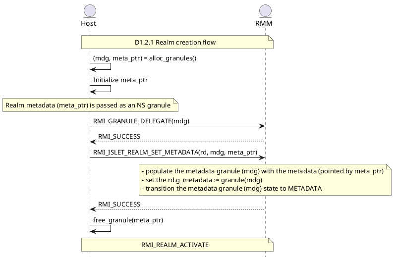
Figure 1: Handling of realm metadata - sequence diagram
Note
The RMI_ISLET_REALM_SET_METADATA can be called only once on a valid Realm Descriptor (rd) initialized using RMI_REALM_CREATE, and before RMI_REALM_ACTIVATE call (i.e. it can be performed when the realm state is RmmRealmState::REALM_NEW).
Here are more details about RMI_ISLET_REALM_SET_METADATA command.
Output values
| Name | Register | Bits | Type | Description |
|---|---|---|---|---|
| result | X0 | 63:0 | RmiCommandReturnCode | Command return status |
Failure conditions
| ID | Condition |
|---|---|
| rd_align | pre: !AddrIsGranuleAligned(rd) post: ResultEqual(result, RMI_ERROR_INPUT) |
| rd_bound | pre: !PaIsDelegable(rd) post: ResultEqual(result, RMI_ERROR_INPUT) |
| rd_state | pre: Granule(rd).state != RD post: ResultEqual(result, RMI_ERROR_INPUT) |
| realm_state | pre: Realm(rd).state != REALM_NEW post: ResultEqual(result, RMI_ERROR_REALM) |
| mdg_align | pre: !AddrIsGranuleAligned(mdg) post: ResultEqual(result, RMI_ERROR_INPUT) |
| mdg_bound | pre: !PaIsDelegable(mdg) post: ResultEqual(result, RMI_ERROR_INPUT) |
| mdg_state | pre: Granule(mdg) != DELEGATED post: ResultEqual(result, RMI_ERROR_INPUT) |
| meta_ptr_align | pre: !AddrIsGranuleAligned(meta_ptr) post: ResultEqual(result, RMI_ERROR_INPUT) |
| meta_ptr_bound | pre: !PaIsDelegable(meta_ptr) post: ResultEqual(result, RMI_ERROR_INPUT) |
| meta_ptr_pas | pre: !GranuleAccessPermitted(meta_ptr, PAS_NS) post: ResultEqual(result, RMI_ERROR_INPUT) |
| meta_ptr_format | pre: meta_ptr.fmt_version != 0x1 post: ResultEqual(result, RMI_ERROR_INPUT) |
| meta_ptr_hash | pre: meta_ptr.hash_algo != 0x1 && meta_ptr.hash_algo != 0x2 post: ResultEqual(result, RMI_ERROR_INPUT) |
| meta_ptr_realm_id | pre: !IsRealmIdFormatValid(meta_ptr.realm_id) post: ResultEqual(result, RMI_ERROR_INPUT) |
| metadata_valid | pre: !RmiIsletRealmMetadataIsValid(meta_ptr) post: ResultEqual(result, RMI_ERROR_INPUT) |
Where IsRealmIdFormatValid(addr) is a function that returns a boolean value of TRUE, only when the address points to a string:
- terminated with ‘\0’
- is of length greater than zero
- contains only printable ASCII characters
The RmiIsletRealmMetadataIsValid function performs following steps:
- it check whether is
fmt_versionis valid (it should be 0x1) - it verifies the
signatureusing the embeddedpublic_keyover the metadata using a digital signature algorithm (ECDSA P-384 with SHA-384 (hash-then-sign)) as described earlier in this section. TheRmiIsletRealmMetadataIsValidfunction is used during the handling of RMI_ISLET_REALM_SET_METADATA and is described in the Realm authentication process section.
Success conditions
| ID | Condition |
|---|---|
| mdg_state | Granule(mdg).state == METADATA |
RMI_REALM_ACTIVATE command
This section describes the changes to RMI_REALM_ACTIVATE handling.
Failure conditions (B4.3.8.2)
| ID | Condition |
|---|---|
| rim_is_valid | pre: Realm(rd).g_metadata != Zeros() && !RmiIsletRIMIsValid(Realm(rd), Realm(rd).g_metadata) post: ResultEqual(result, RMI_ERROR_REALM) |
The function RmiIsletRIMIsValid() checks if:
- the RIM read from the RD is the same as that provided in the realm metadata structure
- the hash algorithm used to calculate the RIM read from the RD is the same as that provided in the realm metadata structure
If both conditions are successful, the function returns true.
Changes in the RMM specification
Here are the related changes in the RMM specification (RMM specification, 1.0-rel0).
A2.2.3 Granule lifecycle A.2.2.3.1 States
Additional granule state.
| Granule state | Description | GPT entry |
|---|---|---|
| METADATA | Realm Metadata | GPT_REALM |
A2.2.3.2 State transitions
Additional state transitions.
| From state | To state | Events |
|---|---|---|
| METADATA | DELEGATED | RMI_REALM_DESTROY |
| DELEGATED | METADATA | RMI_ISLET_REALM_SET_METADATA |
C1.16 RmmRealm type
Additional field in RmmRealm type pointing to the physical address of realm metadata granule.
| Name | Type | Description |
|---|---|---|
| metadata | Address | The physical address of a granule containing the Realm metadata (RmiIsletRealmMetadata) |
B4.3.10.3 Success conditions (RMI_REALM_DESTROY)
| ID | Condition |
|---|---|
| metadata_state | Granule(Realm(rd).metadata).state == DELEGATED |
Note that the metadata granule should be zeroed and transitioned to the DELEGATED state.
Realm authentication process
Important
Current implementation does not provide authenticated boot and rollback protection functionalities for Realms. If in the future such a need arises, this section provides implementation guidance on how such functionality could be implemented.
Note
If rollback protection has to be enabled, a Secure Version Storage has to be available to the RMM. Usually it can be provided as a Trusted Application (TA) running in a secure world (TrustZone); this application can have exclusive access to a hardware Replay Protected Memory Block (RPMB) eMMC device used as secure storage resistant to rollback attacks.
Note
If the realm authenticated boot is going to be used, the Trust Anchor in the form of a public key for verification of the authenticity of the Realm image should be embedded within the Islet RMM binary. Note that this is the simplest way of providing the Trust Anchor for authenticated boot. In future versions of the realm metadata mechanism, the embedded public key can be encoded as an X.509 leaf certificate (or CBOR Encoded X.509 Certificates) together with an intermediate certificate chain, and the Islet RMM can have access to a root CA certificate. In this case, the whole certificate chain up to the root CA certificate will be verified. This scheme will allow splitting the roles of a realm owner and the CCA supply chain (an entity that is responsible for preparation of the CCA platform (HW, firmware including Islet RMM)). At the same time, it will require additional PKI infrastructure on the CCA supply chain side for verifying and signing CSRs sent by Realm owners.
The Realm metadata verification procedure (within the scope of the RmiIsletRealmMetadataIsValid procedure) should be performed while handling RMI_ISLET_REALM_SET_METADATA, and it should include the following steps:
- If the
RmiIsletRealmMetadatablock has not been provided by RMI_ISLET_REALM_SET_METADATA command, the handling of RMI_REALM_ACTIVATE should proceed in a standard way. Otherwise during the handling of RMI_ISLET_REALM_SET_METADATA, RMM needs to: - Check if the
RmiIsletRealmMetadata.fmt_versionis valid. - Check the integrity of the
RmiIsletRealmMetadataby checking the signature usingECDSA P-384with SHA-384 algorithm andRmiIsletRealmMetadata.public_key.
Any failure of the above steps should result in a failure of the realm metadata setting process and thus the launching process of the realm.
If the RmiIsletRealmMetadata block has been provided by the RMI_ISLET_REALM_SET_METADATA call, the RMI_REALM_ACTIVATE should perform the following steps:
- (Optional step - only if authenticated boot is going to be implemented) RMM should check if the
public_keyread from theRmiIsletRealmMetadatais the same as the key embedded in the RMM binary. - Check whether the RIM calculated during the loading process of the realm and the RIM read from the provided RmiIsletRealmMetadata are the same.
- Check if the hash algorithm used to calculate RIM in runtime is the same as that provided in the
RmiIsletRealmMetadatastructure - (Optional step, when the rollback protection is going to be implemented) In case when the rollback protection is enabled, the RMM should compare the
RmiIsletRealmMetadata.svnagainst thesvnread from theVersion Storageidentified by thepublic_keyandrealm_idpair.- If the
RmiIsletRealmMetadata.svnis less than that read from theVersion Storage, the launching process should be interrupted. - If the values are the same, the launching process should continue.
- If the
RmiIsletRealmMetadata.svnis greater than that read from theVersion Storage, the correspondingsvnin theVersion Storageshould be updated (it should be set toRmiIsletRealmMetadata.svn), and the launching process should continue.
- If the
Any failure of the above steps should result in the failure of the realm activation process. Note that the steps should be performed in this very order.
Note
Note, if the RmiIsletRealmMetadata was not populated, the RMI_REALM_ACTIVATE call should be handled in a standard way.
Required changes in firmware and software components
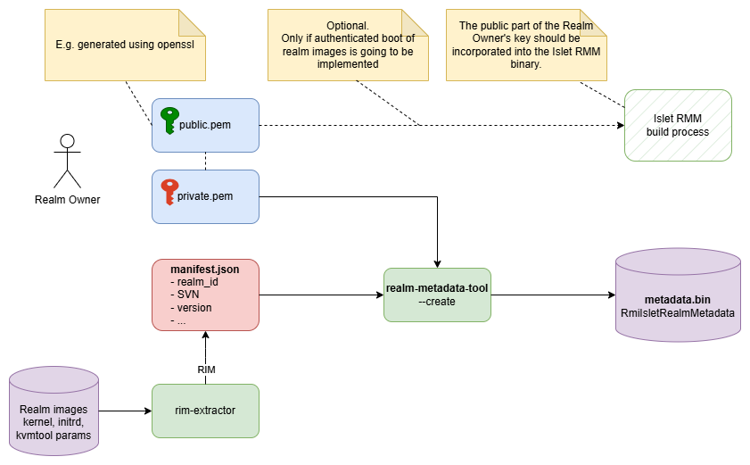
Figure 2: The workflow of generating a binary file containing a realm metadata structure
realm-metadata-tool
To generate a binary version of the RmiIsletRealmMetadata structure, a dedicated command-line tool called realm-metadata-tool has been implemented. The tool takes a manifest file in YAML format and the private key (in PEM format) and produces a binary file containing the RmiIsletRealmMetadata structure. For more information, please refer to the realm-metadata-tool README document. Note that to obtain the RIM needed by the manifest file, one can use a kvmtool-based RIM measurer, which can be found here.
Note
Note that the management of the keys used to sign the realm metadata structure is the responsibility of the Realm owner. The same applies to the storage, management, and distribution of realm images and their associated metadata.
kvmtool
The path to the generated metadata binary file from realm-metadata-tool can be passed to the kvmtool via the --metadata option. During the Realm setup, kvmtool transfers that metadata blob using dedicated ioctls to the host Linux kernel KVM layer, which then transfers it to the Islet RMM using the RMI_ISLET_REALM_SET_METADATA command.
The source code of the kvmtool capable of handling realm metadata can be found here.
Linux kernel (host)
The KVM/RME layer of the host Linux kernel has been extended to handle an additional KVM_CAP_ARM_RME_POPULATE_METADATA command used by kvmtool to pass the realm metadata.
The source code of the host Linux kernel that can handle realm metadata can be found here.
Islet RMM
Islet RMM provides implementation of realm metadata handling in the following files:
- rmm/src/rmi/realm/mod.rs implements a handler for the RMI_ISLET_REALM_SET_METADATA RMI, metadata handling during realm activation and destruction
- rmm/src/rmi/metadata.rs implements
RmiIsletRealmMetadatastructure and the main realm metadata functionality.
TF-A
The TF-A source code has been modified to route additional RMI for handling realm metadata (services/islet_svc/islet_svc_setup.c).
Security analysis and threat model
This section discusses the security properties of the realm metadata mechanism, potential attack vectors, and how the design mitigates them.
Trust assumptions
- The RMM is trusted to correctly enforce the realm metadata verification and RIM comparison logic.
- The host (including the hypervisor, kvmtool, and the Linux kernel KVM layer) is not trusted — it may be compromised or malicious.
- The realm owner’s private key is trusted to be kept secret and properly protected by the realm owner.
- The TF-A (EL3 firmware) is trusted to correctly route SMCs to the RMM.
Threat model
T1: Metadata tampering
Threat: A compromised host modifies one or more fields of the RmiIsletRealmMetadata structure (e.g., changes the realm_id, svn, or rim) before or during the RMI_ISLET_REALM_SET_METADATA call.
Mitigation: The metadata structure is cryptographically signed using ECDSA P-384 with SHA-384. The signature covers the first 0x150 bytes of the structure, which includes all mutable fields except signature. Any modification to the signed portion invalidates the signature, and the RmiIsletRealmMetadataIsValid check will fail, causing the RMI_ISLET_REALM_SET_METADATA command to return an error. The RMM copies the metadata from the host-provided NS granule into its own memory before performing verification, ensuring that the host cannot modify the data after verification.
T2: Signature forgery
Threat: An attacker attempts to forge a valid signature on a crafted or modified metadata block without possessing the realm owner’s private key.
Mitigation: The use of ECDSA P-384 with SHA-384 provides a 192-bit security level against signature forgery, which is considered well beyond the reach of computational attacks. The RMM verifies the signature using the public_key embedded in the metadata structure itself. Note that in the current design (without authenticated boot), the RMM does not verify that the public_key belongs to a trusted authority — it only verifies that the signature is valid for the given public key. This means any entity can create a validly signed metadata block. The security guarantee in the current design is integrity and self-consistency, not authorization. Authorization requires the authenticated boot extension (see Realm authentication process).
T3: Metadata replay (rollback attack)
Threat: A compromised host replays a previously valid metadata block corresponding to an older version of the realm image (with known vulnerabilities) to launch a realm with downgraded security.
Mitigation: The current implementation does not provide rollback protection. The svn field is included in the metadata structure to support future rollback protection, but without a Secure Version Storage (e.g., RPMB-backed storage accessible via a TrustZone TA), the RMM cannot detect replay of older metadata blocks. If rollback protection is implemented in the future, the RMM would compare the svn in the metadata against the stored SVN value, rejecting downgrades as described in the Realm authentication process section.
T4: RIM mismatch / realm image substitution
Threat: A compromised host provides a validly signed metadata block but attempts to load a different realm image whose computed RIM does not match the rim field in the metadata.
Mitigation: During RMI_REALM_ACTIVATE, the RMM compares the RIM computed during the realm loading process against the rim field stored in the metadata structure. If they do not match, the activation is rejected (RMI_ERROR_REALM). This ensures that the metadata is bound to the specific realm image being launched. Additionally, the hash_algo field is verified to match the algorithm used for RIM computation, preventing algorithm substitution attacks.
T5: Metadata removal / bypass attack
Threat: A compromised host simply does not provide metadata via RMI_ISLET_REALM_SET_METADATA, thereby bypassing all metadata-based checks and launching a realm without authentication.
Mitigation: In the current design, providing metadata is optional. A realm can be launched without metadata, and in that case, RMI_REALM_ACTIVATE proceeds in the standard way without RIM comparison against a metadata-provided value. This is by design — the current mechanism provides opt-in authentication. If authenticated boot is implemented in the future, the RMM would require metadata for all realms (or for a specific class of realms) and reject activation attempts without valid metadata. This would require embedding a trust anchor (public key) in the RMM binary.
T6: Denial of service via invalid metadata
Threat: A compromised host provides invalid metadata (e.g., with an invalid signature or mismatched RIM) to prevent a legitimate realm from launching.
Mitigation: The host is already in full control of the realm lifecycle and can deny service by simply not creating the realm. This is an inherent property of the CCA security model where the host manages the realm lifecycle. The metadata mechanism does not introduce a new DoS vector beyond what already exists. If the host provides invalid metadata, the realm creation fails, but the host can retry without metadata.
T7: Key compromise
Threat: The realm owner’s private key used to sign the metadata is compromised, allowing an attacker to create validly signed metadata for arbitrary realm images.
Mitigation: The current design does not include a key revocation mechanism. If the private key is compromised, the attacker can forge metadata for any realm signed with that key. Potential mitigations include:
- Embedding a list of revoked public keys in the RMM binary (requires RMM updates).
- Including a key identifier and revocation list in a future
fmt_versionof the metadata structure. - Using short-lived certificates with expiration times (would require additional fields in the metadata structure).
Key compromise handling is deferred to a future design iteration.
T8: Metadata structure replacement after initial setting
Threat: A compromised host attempts to call RMI_ISLET_REALM_SET_METADATA multiple times to replace the metadata with a different block.
Mitigation: The RMI_ISLET_REALM_SET_METADATA command can only be called once per realm. The RMM checks that the Realm Descriptor’s metadata field is empty before accepting a new metadata block. If metadata has already been set, the command returns an error. This prevents the host from replacing metadata after initial provisioning.
T9: Side-channel attacks on signature verification
Threat: An attacker uses side-channel analysis (timing, power, etc.) to extract information about the private key during signature verification in the RMM.
Mitigation: The RMM performs signature verification (not signing), so the private key is never present in the RMM’s memory. Side-channel attacks on ECDSA verification do not leak the private key. However, implementers should ensure that the verification implementation is constant-time to prevent timing side-channels that could potentially leak information about the public key or the message being verified.
Vendor-Specific SMC Allocation for Realm Metadata Mechanism and Sealing Keys Derivation
According to the “SMC Calling Convention” document (ARM DEN 0028F), there are two SMC Function Identifier ranges that can be used for vendor-specific purposes (6.1 Allocation of values, Table 6-2; note that we’re interested only in SMC64 calls).
| SMC Function identifier | Service type |
|---|---|
| 0xC6000000-0xC600FFFF | SMC64: Vendor Specific Hypervisor Service Calls |
| 0xC7000000-0xC700FFFF | SMC64: Vendor Specific EL3 Monitor Service Calls |
For our purposes, we split one of these ranges similarly to the “SMC: Standard Service Calls” to implement additional, non-standard RMI, RSI, and RMM EL3 calls.
If we choose “SMC64: Vendor-Specific EL3 Monitor Service Calls”, we can split this region into three ranges.
| SMC Function identifier | Reserved for |
|---|---|
| 0xC7000150-0xC700018F | Vendor-specific RMI |
| 0xC7000190-0xC70001AF | Vendor-specific RSI |
| 0xC70001B0-0xC70001CF | Vendor-specific RMMD EL3 Service calls |
Thus, for the purposes of the Realm Metadata mechanism and Sealing Keys Derivation, the following SMCs have been reserved:
| SMC Function identifier | Command name | Description |
|---|---|---|
| 0xC7000150 | RMI_ISLET_REALM_SET_METADATA | Assigns the Realm Metadata to a particular realm (for more details, refer to the Realm metadata document) |
| 0xC7000191 | RSI_ISLET_REALM_SEALING_KEY | Retrieves the Sealing Key (for more details, refer to the Sealing Key Derivation document) |
| 0xC70001B0 | RMM_ISLET_GET_VHUK | Retrieves the VHUK from the RMMD service (for more details, refer to the Sealing Key Derivation document) |
The ISLET infix has been added to command names to indicate that these SMCs come from a particular project (Islet) and to prevent possible naming conflicts in the future.
Hardware Enforced Security
Introduction
This project provides an implementation of Islet HES that is reification of CCA Hardware Enforced Security (chapter “Hardware enforced security” of ARM CCA Security Model 1.0). It consists of two main parts:
- HES library - a platform-independent (
no_std) Rust library that implements HES functionalities. It is intended to be the basis of a solution that can be adapted to real hardware platforms in the future. - HES host application - a hardware HES simulator that runs on the host machine (not on dedicated hardware) and is designed to be used together with Islet RMM and the Islet CCA stack.
The project is written in Rust - a modern language that has built-in mechanisms preventing common memory bugs (memory leaks, buffer overflows, etc.). This greatly minimizes the occurrence of potential vulnerabilities.
The main goals of the Islet HES project are:
- Provide the HES library that is intended to be the basis of a solution that can be adapted to real hardware platforms in the future (running e.g. on an ARM Cortex-M processor).
- Provide the implementation of the HES application running on the host. The HES application is going to provide attestation and measured boot functionality.
- Making the HES implementation a platform for experimentation and development of additional functions (not currently defined in CCA specs).
Important
The current Islet HES works only as a host application and due to that as outlined in the section below it cannot satisfy all security requirements of a real hardware HES implementation. The short term goal is to have a working solution for the purpose of interoperability with Islet RMM. The long term goal is to have such implementation running on a real secure hardware/OS while reusing many software components (Islet HES library) of the current implementation.
HES technical background
CCA Hardware Enforced Security (HES) is a separate from the main Processing Element component that offers a crucial set of security features for an ARM CCA-enabled platform (note that PE (Processing Element) or AP (Application Processor) are used in this document interchangeably). These security features can be hosted on a dedicated, isolated, trusted subsystem or as a tenant within a multi-tenant trusted subsystem. The hosting platform and runtime together constitute what is known as a HES host. The HES host has its own verified boot process, provides secure non-volatile storage and cryptographic functionality.
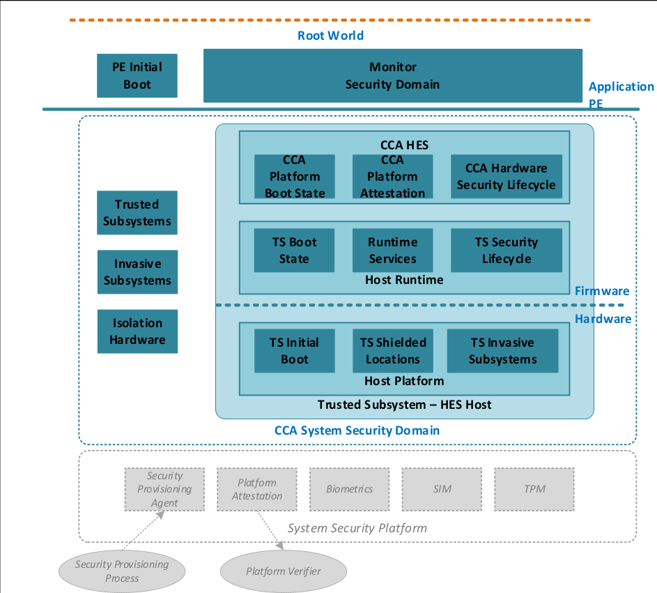
Figure 1: CCA Hardware Enforced Security according to ARM CCA Security Model 1.0
Physically HES host can be implemented by using a dedicated MCU (Microcontroller Unit) which shares no critical resources with the main PE. This greatly reduces the potential attack surface and ensures that the firmware running on the application PE cannot affect the internal state of the HES host, such as boot measurements or boot state. Physical isolation of critical resources, such as secrets, prevents from leaking sensitive information to PE.
According to ARM CCA Security Model 1.0 CCA HES provides the following services and interfaces to an application PE:
- CCA platform attestation service
- Interface to capture measurements and associated identity metadata for the Monitor, RMM firmware and boot code
- CCA HES can also provide an interface for capturing measurements from other trusted subsystems (like ARM’s System Control Processor responsible for power management)
The critical requirement from security point of view is that these interfaces should only be accessible to components belonging to CCA System Security (e.g. trusted subsystems) and Monitor Security Domains (Monitor, PE initial boot) (chapter 4 Hardware Enforced Security of ARM CCA Security Model).
CCA HES should also have access to internal HES services providing HES boot measurements and measurements sent by external systems (e.g. the bootloaders running on the main PE), cryptographic functionality, secrets and other metadata (e.g. identification of the platform).
HES host boots from its own non-volatile memory, such as ROM or FLASH, and loads HES firmware independently, without any PE intervention. HES provides only a fixed set of functionalities exposed to main PE. HES can run as a tenant within a multi-tenant trusted subsystem. But also in this case, HES should boot without intervention of REE side and start to serve its functionality before the main PE is started. The HES communication channel with the main PE must be accessible only to Monitor software and boot loaders.
ARM CCA Security Model requires that at minimum, HES should have an immutable initial boot-loader that servers as a Root of Trust. In the reference implementation of HES host called RSE, RSE takes the role of Root of Trust not only for the firmware running on RSE but also for other PEs on the platform. For example, RSE loads, and authenticates the BL1 image for the main PE. ARM CCA Security Model, allows the main PE to have its own initial immutable bootloader (BL1), although in this case the main PE (AP) should start its own booting process, only after successful booting of HES. Depending on the architecture, this can be achieved by keeping the main PE in reset until HES boots and starts serving its functionality. This approach serves two purposes:
- first, if the HES security is compromised (i.e., if one of the loaded HES images fails verification due to tampering), the entire platform will become useless
- second, the service for capturing measurements from the PE will be ready to serve.
Requirements
In this section we list the requirements for the Islet HES implementation. For the host application, obviously none of the CCA Security Model’s requirements related to the underlying hardware platform can be satisfied as the application serves only as a simulated HES, it’s running neither on a real hardware nor even an emulated one. Nevertheless, the HES implementation can provide interfaces that allow for future deployments on real hardware platforms.
REQ01: Islet HES should be implemented as a library implementing a subset of HES functionalities in a platform independent way (Rust no_std). This library can be used in the future to prepare an implementation running on a dedicated trusted subsystem, or as a tenant on a multi-tenant trusted subsystem (fulfilling the R005 of CCA SM).
REQ02: An accompanying application should be written that implements a simulated HES application running on the host that utilizes HES functionalities from the library. It should provide a communication channel that makes it possible to communicate with the PE and provide its services.
REQ03: Islet HES should provide following services to PE:
- delegated attestation service (R0043, R0090, R0129, R0091, R0092, R0093, R0025 of CCA SM)
- service for capturing measurements (R0010, R0011, R0012, R0013, R0051, R0052, R0130, R0073, R0080, R0083, R0084, R0085 of CCA SM)
The external interface for delegated attestation should implement following functionality:
- fetching the delegated attestation key
- fetching a CCA platform attestation token
The API should conform to the following declarations located in include/lib/psa/delegated_attestation.h of the TF-A source code.
psa_status_t
rse_delegated_attest_get_delegated_key(uint8_t ecc_curve,
uint32_t key_bits,
uint8_t *key_buf,
size_t key_buf_size,
size_t *key_size,
uint32_t hash_algo);
psa_status_t
rse_delegated_attest_get_token(const uint8_t *dak_pub_hash,
size_t dak_pub_hash_size,
uint8_t *token_buf,
size_t token_buf_size,
size_t *token_size);
The format of CCA platform token must conform to the description included in the Chapter A7 Realm measurement and attestation of Realm Management Monitor specification.
Since preliminary implementation of measured boot and attestation in TF-A is intended to work together with the reference HES named RSE, the Islet HES should follow the implementations of TF-M/RSE and the additional delegated attestation functionality.
The external interface for measured boot should implement following functionality:
- extending boot measurements
The API should conform to the following function declaration defined in include/lib/psa/measured_boot.h in the TF-A source code.
psa_status_t
rse_measured_boot_extend_measurement(uint8_t index,
const uint8_t *signer_id,
size_t signer_id_size,
const uint8_t *version,
size_t version_size,
uint32_t measurement_algo,
const uint8_t *sw_type,
size_t sw_type_size,
const uint8_t *measurement_value,
size_t measurement_value_size,
bool lock_measurement);
psa_status_t rse_measured_boot_read_measurement(uint8_t index,
uint8_t *signer_id,
size_t signer_id_size,
size_t *signer_id_len,
uint8_t *version,
size_t version_size,
size_t *version_len,
uint32_t *measurement_algo,
uint8_t *sw_type,
size_t sw_type_size,
size_t *sw_type_len,
uint8_t *measurement_value,
size_t measurement_value_size,
size_t *measurement_value_len,
bool *is_locked);
The implementation of measured boot in Islet HES should follow the implementation of measured boot in RSE (TF-M).
The implementation of attestation and measured boot functionality require additional functionality such as:
- cryptographic functionality (hashing, signing, encryption, key derivation, TRNG, etc.)
- library for CBOR
- library for COSE
REQ04: The serialization/de-serialization and PSA protocol layer for the API exposed to PE (measured boot and attestation) should be as much as possible compatible with the existing mechanisms implemented in TF-A and TF-M (RSE). Have a look at:
- https://trustedfirmware-a.readthedocs.io/en/latest/design_documents/rse.html
- https://trustedfirmware-m.readthedocs.io/en/latest/platform/arm/rse/index.html
- https://github.com/islet-project/3rd-tf-a/blob/main/lib/psa/measured_boot.c
- https://github.com/islet-project/3rd-tf-a/blob/main/drivers/measured_boot/rse/rse_measured_boot.c
- https://github.com/islet-project/3rd-tf-a/blob/main/lib/psa/delegated_attestation.c
REQ05: The Islet HES should provide:
- measured boot for HES SW components that are not immutable (R0010, R0011, R0012, R0013, R0159, R0054, R0068, R0069, R0070 of CCA SM)
- a simulated interface for communication between the main PE and HES
Architecture
This chapter will describe the architecture of Islet HES. To put Islet HES in context, we start from the brief description of the whole system that as it’s being used in the attestation demo. Then, we describe the Islet HES itself, its building blocks, functionality and other details.
CCA Remote Attestation High Level Design for the demo
The information regarding running the demo is available in:
examples/veraison.
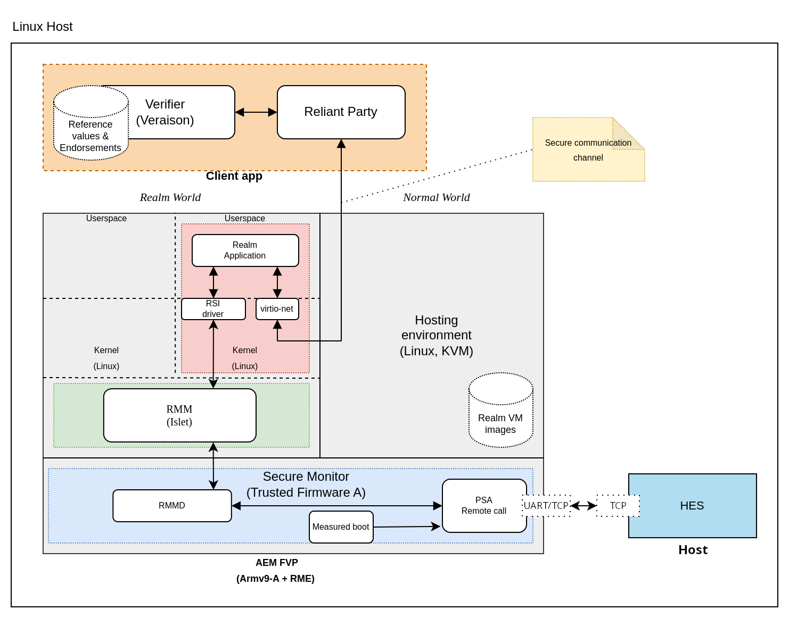
Figure 2: High level diagram showing the SW/FW stack used for development and demoing Arm CCA functionality
ARM CCA Security Model recommends to have HES in a CCA enabled platform. The platform should also support Realm Management Extension (RME) to be fully compatible with the ARM CCA requirements. During the research phase, there was no platform (HW or emulated) that is equipped with both HES and a main PE that supports RME. This led to the design of a simple simulated HES that would provided necessary interfaces to the PE. Another question that we had to deal with was how to implement the communication channel between these two entities.
From this we decided that:
- The main PE that supports RME will be emulated either on AEM FVP or a RME enabled QEMU.
- The Islet HES will run directly on the host.
- The UART device from PE/TF-A side will be used to create a communication channel with HES. This UART is then mapped as a TCP connection by either FVP or QEMU. HES host application uses TCP directly.
The above diagram represents the system for the attestation demo. The ARM FVP/QEMU hosts all software components that supports ARM CCA. The main clients of HES are boot loaders of TF-A and RMMD. During the boot process of the main PE, the boot loaders send the measurements to the HES via PSA remote call API. Originally, TF-A uses a mailbox interface for transferring messages between PE and RSE. For our purposes, we replaced the MHU (Message Handling Unit) driver with UART, at the same time keeping the binary compatibility of the messages.
Another functionality that HES is going to provide is the delegated attestation. During the initialization of RMM, RMM requests the Delegated Attestation Key from the HES that is used to sign the Realm attestation token. The key is retrieved only once an cached by RMM. The CCA platform attestation token is requested from HES only once during the platform startup and then cached. Upon the Reliant Party request (it is a remote party client) RMM prepares a realm attestation token. This token altogether with the CCA platform attestation token is concatenated and sent back to the requester. The Reliant Party then relays the attestation token to the Verifier which checks its signature and verifies measurements against the reference values stored in the Verifier’s database. The results of verification are sent back to the Reliant Party that according to some policy may decide if it can trust the Realm and the whole platform.
Islet HES architecture
The user space HES application is built-up from the following components:
- Attestation - the main responsibility of this component is preparation of the CCA platform attestation token. The interfaces exposed to external PEs include fetching the attestation token and fetching the delegated attestation key. This component utilizes information gathered by the measured boot component and functions provided by auxiliary modules like CBOR and COSE (creating the binary representation of the CCA platform attestation token, creating a digital signature) and Key derivation.The source code is available in
- Measured boot - the main function of this component is gathering measurements from the external PEs. During initialization of the HES application, this component also fetches local measurements from the platform HES host measured boot component. The attestation component makes use of measurements gathered by this component to build the CCA platform attestation token. The measured boot component uses also the hash functions provided by the Crypto component. The source code is available in the following files:
- Hardware abstraction layer - this component is an interface for a simulated hardware that makes it immediately clear what data should be obtained from the underlying secure hardware itself. The current implementation stubs, hardcodes or reads the values from files, but in case of a real hardware implementation all those values/functionalities should be obtained/implemented in the secure hardware itself (as per CCA HES Security Model). The source code is available in:
- Communication - the main functionality of this component is handling the communication protocol and serialization/de-serialization of messages exchanged between the main PE and the HES. This includes de-serialization of received binary messages, routing particular calls to attestation and measured boot components, serialization of responses that are to be sent back to the main PE/TF-A via the UART device. The source code is available in the following files:
- CPAK generator - a standalone tool for deriving the CCA Platform Attestation Key (CPAK) public key from the provisioned GUK (and optionally the BL2 boot loader image hash). It follows the same key derivation scheme as the HES library’s Key derivation component. The derived CPAK public key is used during the preparation of endorsements and reference values that are provisioned to the Veraison verification service, so that the Verifier can verify the signature of CCA platform attestation tokens. The source code is available in:
- Auxiliary components: CBOR, COSE, Key derivation, Crypto - the attestation and measured boot component rely on these components. The Key derivation component interacts with the Crypto component and reads seed data from the OTP (HUK, GUK keys), Lifecycle manager, and Measured boot components.
Apart from the implemented functionalities, some external components and interfaces for platform specific are utilized.
The required external components are:
- ciborium - Rust crate library compatible with CBOR format for platform token creation,
- coset - Rust crate library compatible with COSE_sign1 for platform token signing and creation, which utilizes the ciborium crate for CBOR parsing and allows usage of custom crypto API for token signing,
- RustCrypto - set of crates implementing the required cryptographic functionalities (key derivation, signatures etc.),
Supported (hardware provisioned on a real hardware) keys are:
- HUK - as a 256 bit symmetric key,
- GUK - as a 256 bit symmetric key,
- CPAK - (optional, can be derived manually) as an ECC_FAMILY_SECP_R1 asymmetric key,
Component dependencies
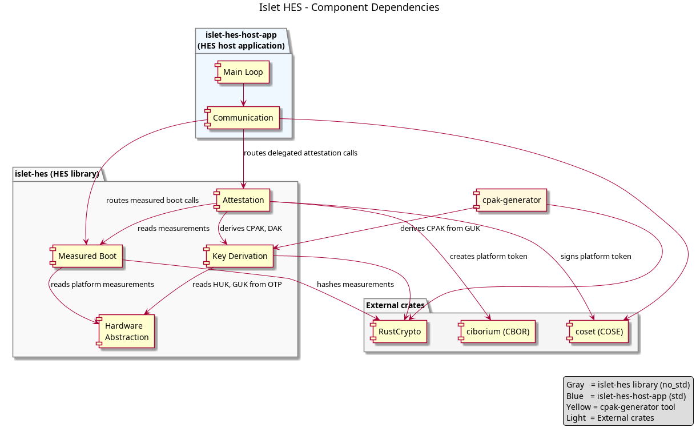
Figure 3: HES component dependency diagram
Directory structure
This section describes the content of https://github.com/islet-project/islet/tree/main/hes directory.
cpak-generator: A tool for deriving the CPAK public key from GUK (and optionally the BL2 hash). It is used during the preparation of endorsements and reference values for the Veraison verification service.islet-hes: The HES library crate implementing the core HES functionalities (attestation, measured boot, hardware abstraction layer) in a platform-independent way.islet-hes/src/attestation: Delegated attestation component - preparation of CCA platform attestation tokens and fetching of the delegated attestation key.islet-hes/src/hw: Hardware abstraction layer - interface for simulated hardware data. The current implementation stubs, hardcodes or reads the values from files.islet-hes/src/measured_boot: Measured boot component - gathering and managing boot measurements from external PEs and from the HES host itself.
islet-hes-host-app: The HES host application that simulates a hardware HES on the host machine. It includes the communication component (PSA message serialization and the UART/TCP channel) and the main application loop.key-derivation: Key derivation library - implements the key derivation schemes (CPAK, DAK derivation from GUK) following the same scheme as TF-M’s RSE.
Initialization
During the initialization of the Islet HES the following actions are performed:
- derivation of 256bit CPAK_seed from GUK (and optionally BL2 hash) using counter-mode KDF,
- derivation of asymmetric CPAK from CPAK_seed
- derivation of 256bit DAK seed from GUK
- initialization of dummy measurements for hardware/platform components
- initialization of the communication component
After the initialization of all HES components, the application goes into the idle mode and waits in the loop for the incoming requests from the communication channel.
Cryptographic Keys
Minimum CCA hardware provisioned keys are (CCA Security Model 1.0 Ch 5.1):
| Parameter | Description | Secret |
|---|---|---|
| HUK | Hardware unique symmetric key. It represents a randomly unique seed for each manufactured instance of a CCA enabled system. | Yes |
| GUK | Group unique symmetric key. It represents a randomly unique seed that may be shared with some group of manufactured CCA enabled systems with the same immutable hardware security properties. | Yes |
HUK is randomly generated at manufacture and can only be accessed by CCA HES at any point in the security lifecycle of the system.
GUK is at least randomly unique for some group of manufactured instances of a CCA enabled system and can only be accessed by CCA HES, other than temporarily at security provisioning (it can be stored temporarily outside of system for the purpose of manufacture provisioning, but must not be collected or stored persistently outside of the system).
The most important derived parameters of CCA (CCA Security Model 1.0 Ch 5.2):
| Parameter | Description | Private | Ownership | Source |
|---|---|---|---|---|
| Derivation root keys for Monitor security domain | Virtual HUK/GUK, derived uniquely for Monitor security domain at boot. | Yes | Monitor security domain | PE initial boot, or CCA HES |
| Derivation root keys for Realm Management security domain | Vritual HUK/GUK, derived uniquely for Realm Management security domain at boot. | Yes | Realm Management security domain | Monitor security domain |
| CCA platform attestation key (CPAK) | Asymmetric attestation key for the CCA platform. Identifies the immutable security properties of the CCA system security domain | Yes, private portion | CCA HES | Typcally derived from GUK, or equivalent. |
| CPAK ID | Pubic identifier of CPAK | No | CCA HES | Hash of public part of CPAK.Uniquely identifies the immutable hardware security properties of a CCA platform. |
The following tables outline general recommendations for parameters sizes and algorithms in CCA implementation (CCA Security Model 1.0 Ch 12.3.):
| Parameter type | Sizes | Information |
|---|---|---|
| Public identifier | 512 bits | Typically a hash of a public key or a certificate.Arm does not recommend using truncated hashes for public identifiers. |
| Counter values used as unique identifiers | 64 bits | |
| Seeds used for symmetric key derivations | 256 bits | |
| Symmetric keys | 256 bits | AES-256 |
| Asymmetric keys | RSA: 3072 bits, ECC: 384 bits | RSA 3072, ECC Curve-P384 |
| Operation | Algorithm | Information |
|---|---|---|
| General encryption | AES-256 | |
| Hash function | SHA-512 | NIST SP 800-107 |
| Signing - RSA operation | RSA-PKCS#1 v2.2, RFC 8017, FIPS PUB 186-4 | RSASSA-PSS 3072, EMS-PSS, SHA-512 |
| Signing - ECC option | ECDSA, RFC 6979, FIPS PUB 186-4 | Curve P-384, SHA-512 |
| Signing - Symmetric | HMAC-SHA512, RFC 2014, NIST SP 800-107 | 512 bits, Arm does not recommend truncating HMAC. |
| Key derivations | NIST SP 800-108, Counter mode, HMAC-SHA512, RFC 2014, NIST SP 800-107 |
The Islet HES application utilizes the same scheme of key derivation as implemented in TF-M’s RSE. The RSE-based implementation derives the seeds and keys based on the following graph:
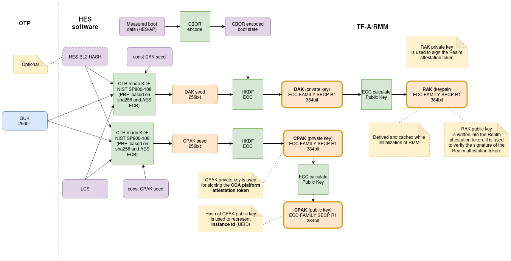
Figure 4: The key derivation process
Measured boot and attestation
Measured Boot component provides interfaces to extend and read measurements (hash values and metadata) during various stages of a power cycle. The measurements are extended by the boot loaders running on AP (via the external interface - UART in our case). They are read by the delegated attestation component and used to generate the CCA platform attestation token. All of these measurements are fetched by Measured Boot component during its initialization.
Each software component claim comprises of the following measurements which are extended and read by Measured Boot component.
- Measurement type: It represents the role of the software component.
- Measurement value: It represents a hash of the invariant software component in memory at start-up time. The value must be a cryptographic hash of 256 bits or stronger.
- Version: It represents the issued software version.
- Signer ID: It represents the hash of a signing authority public key.
- Measurement description: It represents the way in which the measurement value of the software component is computed.
These measurements are used as software component claims of the platform token.
The ARM CCA based implementation utilizes a model where the responsibility of creating the overall attestation token is split between different parties (HES and RMM). The overall token is a composition of sub-tokens, where each sub-token is produced by an individual entity within the system. Each sub-token is signed with a different key, which is owned by the sub-token producer. The signing keys are derived in a chain. Each key is derived by the producer of the previous (in the chain) attestation token. The sub-tokens must be cryptographically bound to each other, to make the key chain back traceable to the CPAK, which is used to sign the platform attestation token. The cryptographic binding is achieved by including the hash of the public key in the challenge claim of the predecessor attestation token.
The following diagram shows the simplified flow of delegated key derivation and the CCA platform token creation:
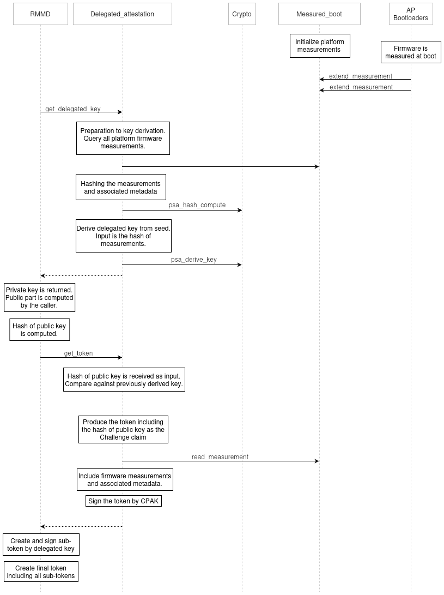
Figure 5: The sequence diagram of the delegated attestation process
A CCA attestation token according to RMM specification A7.2.1 is a collection of claims about the state of a Realm and of the CCA platform on which the Realm is running. A CCA attestation token consists of two parts:
- Realm token: contains attributes of the Realm, including:
- Realm Initial Measurement
- Realm Extensible Measurements
- CCA platform token: contains attributes of the CCA platform on which the Realm is running, including:
- CCA platform identity
- CCA platform lifecycle state
- CCA platform software component measurements
The CCA platform token contains structured data in CBOR, wrapped with a COSE_Sign1 envelope according to COSE standard signed by the CPAK.
The CCA attestation token is defined as follows (using Concise Data Definition Language):
cca-token = #6.399(cca-token-collection) ; CMW Collection
; (draft-ietf-rats-msg-wrap)
cca-platform-token = bstr .cbor COSE_Sign1_Tagged
cca-realm-delegated-token = bstr .cbor COSE_Sign1_Tagged
cca-token-collection = {
44234 => cca-platform-token ; 44234 = 0xACCA
44241 => cca-realm-delegated-token
}
; EAT standard definitions
COSE_Sign1_Tagged = #6.18(COSE_Sign1)
; Deliberately shortcut these definitions until EAT is finalised and able to
; pull in the full set of definitions
COSE_Sign1 = "COSE-Sign1 placeholder"
The composition of the CCA attestation token is summarized in the following figure:
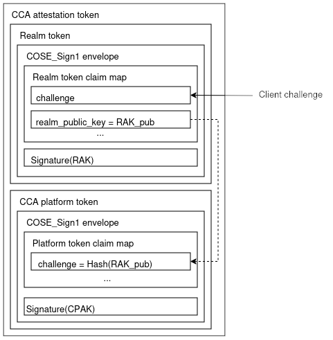
Figure 6: The structure of the Arm CCA attestation token
The details of claims carried by the CCA platform token are described in RMM specification A7.2.3.2. Here is an excerpt.
The CCA platform token claim map is defined as follows (represented in CDDL):
cca-platform-claims = (cca-platform-claim-map)
cca-platform-claim-map = {
cca-platform-profile
cca-platform-challenge
cca-platform-implementation-id
cca-platform-instance-id
cca-platform-config
cca-platform-lifecycle
cca-platform-sw-components
? cca-platform-verification-service
cca-platform-hash-algo-id
}
cca-platform-profile-label = 265 ; EAT profile
cca-platform-profile-type = "tag:arm.com,2023:cca_platform#1.0.0"
cca-platform-profile = (
cca-platform-profile-label => cca-platform-profile-type
)
cca-hash-type = bytes .size 32 / bytes .size 48 / bytes .size 64
cca-platform-challenge-label = 10
cca-platform-challenge = (
cca-platform-challenge-label => cca-hash-type
)
cca-platform-implementation-id-label = 2396 ; PSA implementation ID
cca-platform-implementation-id-type = bytes .size 32
cca-platform-implementation-id = (
cca-platform-implementation-id-label => cca-platform-implementation-id-type
)
cca-platform-instance-id-label = 256 ; EAT ueid
; TODO: require that the first byte of cca-platform-instance-id-type is 0x01
; EAT UEIDs need to be 7 - 33 bytes
cca-platform-instance-id-type = bytes .size 33
cca-platform-instance-id = (
cca-platform-instance-id-label => cca-platform-instance-id-type
)
cca-platform-config-label = 2401 ; PSA platform range
; TBD: add to IANA registration
cca-platform-config-type = bytes
cca-platform-config = (
cca-platform-config-label => cca-platform-config-type
)
cca-platform-lifecycle-label = 2395 ; PSA lifecycle
cca-platform-lifecycle-unknown-type = 0x0000..0x00ff
cca-platform-lifecycle-assembly-and-test-type = 0x1000..0x10ff
cca-platform-lifecycle-cca-platform-rot-provisioning-type = 0x2000..0x20ff
cca-platform-lifecycle-secured-type = 0x3000..0x30ff
cca-platform-lifecycle-non-cca-platform-rot-debug-type = 0x4000..0x40ff
cca-platform-lifecycle-recoverable-cca-platform-rot-debug-type = 0x5000..0x50ff
cca-platform-lifecycle-decommissioned-type = 0x6000..0x60ff
cca-platform-lifecycle-type =
cca-platform-lifecycle-unknown-type /
cca-platform-lifecycle-assembly-and-test-type /
cca-platform-lifecycle-cca-platform-rot-provisioning-type /
cca-platform-lifecycle-secured-type /
cca-platform-lifecycle-non-cca-platform-rot-debug-type /
cca-platform-lifecycle-recoverable-cca-platform-rot-debug-type /
cca-platform-lifecycle-decommissioned-type
cca-platform-lifecycle = (
cca-platform-lifecycle-label => cca-platform-lifecycle-type
)
cca-platform-sw-components-label = 2399 ; PSA software components
cca-platform-sw-component = {
? 1 => text, ; component type
2 => cca-hash-type, ; measurement value
? 4 => text, ; version
5 => cca-hash-type, ; signer id
? 6 => text, ; hash algorithm identifier
}
cca-platform-sw-components = (
cca-platform-sw-components-label => [ + cca-platform-sw-component ]
)
cca-platform-verification-service-label = 2400 ; PSA verification service
cca-platform-verification-service-type = text
cca-platform-verification-service = (
cca-platform-verification-service-label =>
cca-platform-verification-service-type
)
cca-platform-hash-algo-id-label = 2402 ; PSA platform range
; TBD: add to IANA registration
cca-platform-hash-algo-id = (
cca-platform-hash-algo-id-label => text
)
The CCA platform profile claim identifies the EAT profile to which the CCA platform token conforms. Note that because the platform token is expected to be issued when bound to a Realm token, the profile document should include a description of the Realm claims. It s identified using the EAT profile label (265).
The CCA platform challenge claim contains a hash of the public key used to sign the Realm token. It is identified using the EAT nonce label (10).
The CCA platform Implementation ID claim uniquely identifies the implementation of the CCA platform. The value of the CCA platform Implementation ID claim can be used by a verification service to locate the details of the CCA platform implementation from an endorser or manufacturer. Such details are used by a verification service to determine the security properties or certification status of the CCA platform implementation. The semantics of the CCA platform Implementation ID value are defined by the manufacturer or a particular certification scheme. For example, the ID could take the form of a product serial number, database ID, or other appropriate identifier.
The CCA platform Instance ID claim represents the unique identifier of the CPAK for the CCA platform. The CCA platform Instance ID claim is identified using the EAT UEID label (256). The first byte of its value must be 0x01 (https://datatracker.ietf.org/doc/draft-ietf-rats-eat/ ). RSE implementation defines it as instance_id= 0x01 || hash(CPAK_pub.
The CCA platform config claim describes the set of chosen implementation options of the CCA platform. As an example, these may include a description of the level of physical memory protection which is provided. The CCA platform config claim is expected to contain the System Properties field which is present in the Root Non-volatile Storage (RNVS) public parameters.
The CCA platform lifecycle claim identifies the lifecycle state of the CCA platform. The value of the CCA platform lifecycle claim is an integer which is divided as follows:
- value[15:8]: CCA platform lifecycle state
- value[7:0]: IMPLEMENTATION DEFINED
The CCA platform software components claim is a list of software components which can affect the behavior of the CCA platform. It is expected that an implementation will describe the expected software component values within the profile. The CCA platform software component type is a string which represents the role of the software component. It s intended for use as a hint to help the relying party understand how to evaluate the CCA platform software component measurement value. The CCA platform software component measurement value represents a hash of the state of the software component in memory at the time it was initialized. The CCA platform software component version is a text string whose meaning is defined by the software component vendor. The CCA platform software component signer ID is the hash of a signing authority public key for the software component. It can be used by a verifier to ensure that the software component was signed by an expected trusted source. The CCA platform software hash algorithm ID identifies the way in which the hash algorithm used to measure the CCA platform software component. The CCA platform verification service claim is a hint which can be used by a relying party to locate a verifier for the token. Its value is a text string which can be used to locate the service or a URL specifying the address of the service. The CCA platform hash algorithm ID claim identifies the algorithm used to calculate the extended measurements in the CCA platform token.
All of these values are stubbed for the demo purpose. On a real HW platform most of these values should be provided by the underlying platform. For example, a CCA platform implementation ID may represent a unique identifier of the implementation of immutable RoT, this value can be stored in ROM altogether with the immutable boot loader image.
Security provisioning
The process of provisioning secrets and other data (e.g. identity) is platform specific. Provisioned data may take the form of a signed and encrypted bundle transferred to a platform via some dedicated interface, or injected directly to RAM via JTAG interface (TF-M RSE case). Apart from platform specific keys (used for verified boot etc.), the CCA requires to have provisioned two dedicated keys: GUK and HUK (see Cryptographic keys).
In case of Islet HES, these secrets are hard coded in the files read by the source code or in the source code itself. Nevertheless, the derived CPAK public key and the platform identity metadata should be delivered to the Verifier to be able to verify the signature of the CCA platform attestation token.
Here is a minimum list of provisioned secrets that are needed by the HES application (doesn’t include secrets that are required by the underlying platform):
- HUK (for more information refer to the Cryptographic Keys chapter) - currently not used in key derivation, but it can be used in future use cases (e.g. derivation of sealing keys)
- GUK (for more information refer to the Cryptographic Keys chapter)
CPAK_pub derivation
During the security provisioning phase, a vendor/manufacturer should provision GUK and HUK keys to the HES. The GUK key is used in the CPAK derivation process. The private part of CPAK is used to sign the CCA platform attestation token. To verify the authenticity of the token, a verifier should have access to the public part of CPAK.
In our case, the CPAK_pub is derived from GUK (and optionally the image of the
2nd level boot loader if present) using a dedicated tool. This tool is following
the same derivation scheme as described in the Cryptographic Keys chapter. It’s
available in
hes/cpak-generator/src/main.rs.
The cpak_generator tool is being used during the preparation of endorsements
and reference values. The derived CPAK_pub keys are used to verify the
signature of generated CCA platform tokens.
Endorsements and reference values provisioning
In this section we describe the process and the tools used for preparation of endorsements and reference values (https://datatracker.ietf.org/doc/rfc9334/) that have to be provisioned to a verification service. In our case the Veraison project is acting as a verification service. The Veraison project is officially referred by ARM in their documentation and is a part of IETF/RATS project. The intention of Veraison’s developers is not only to support ARM CCA but also other attestation technologies.
The described process of provisioning and the tools developed for the Islet HES are being used in the attestation demo. For more information about the demo, Veraison and processes detailed further in this section please refer to the following links:
- https://github.com/islet-project/islet/tree/main/examples/veraison
- https://github.com/islet-project/islet/blob/main/examples/veraison/RUN.md
- https://github.com/islet-project/islet/blob/main/examples/veraison/provisioning/run.sh
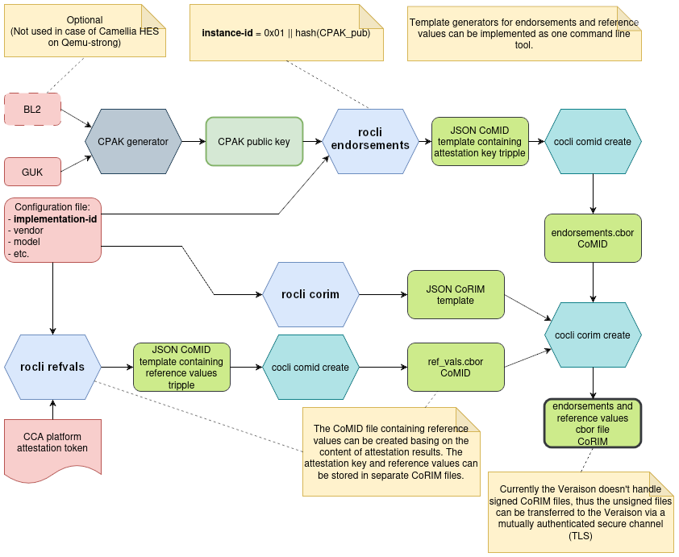
Figure 7: The process of generating endorsements and reference values intended to be provisioned to the Veraison verification service
The above diagram show the process of creating CoRIM (Concise Reference Integrity Manifest) documents containing the endorsements and reference values. CoRIM documents can bundle multiple CoMID (Concise Module Identifiers) and CoSWID (Concise Software Identification Tags) documents. CoMID format describes the hardware and firmware modules, whereas CoSWID format describes the software components. The CoMID, CoRIM and CoSWID files utilize the CBOR encoding. In case of ARM CCA scheme implemented in Veraison, only CoMID documents are used to carry reference-triples and attest-key-triples (For more info please refer to https://github.com/veraison/docs/tree/main/demo/cca and https://github.com/veraison/services/tree/main/scheme/arm-cca).
The rocli tool mentioned on the diagram is a custom developed helper that is
available
in the rocli repository.
The generated CoRIM documents are intended to be provisioned to the Veraison provisioning service by using the cocli submit command. See more here:
- https://github.com/veraison/docs/blob/main/api/endorsement-provisioning/README.md
- https://github.com/veraison/docs/blob/main/demo/cca/manual-end-to-end.md
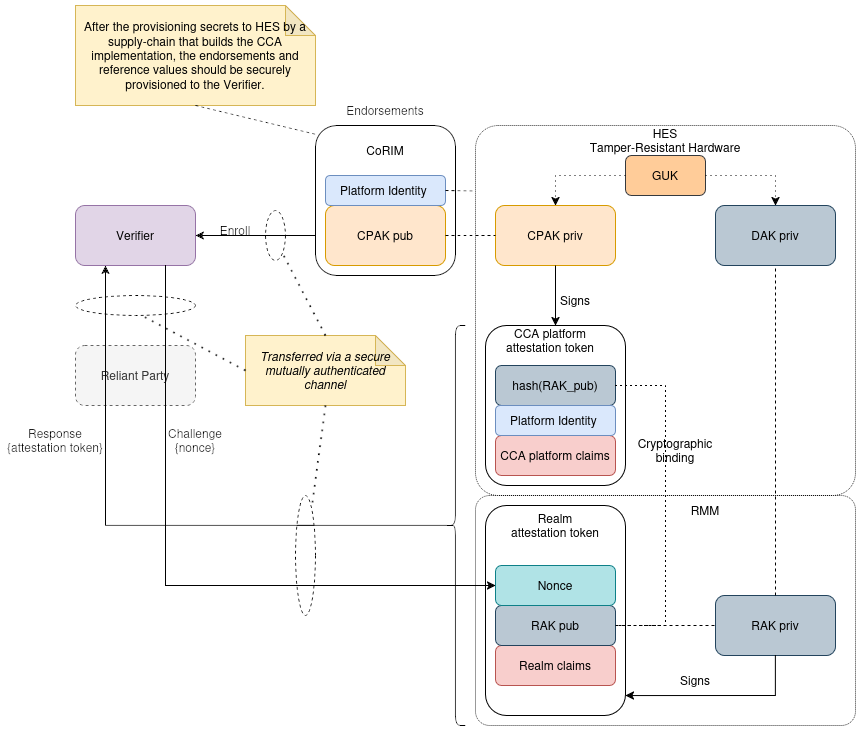
Figure 8: Details regarding relation between the keys used to sign and verify the CCA Platform and Realm tokens
The above diagram helps to better understand what keys are used and how they are related to each other in the context of the CCA remote attestation.
The HES is in the possession of the GUK that is kept in secret. GUK is used in derivations of CPAK and DAK. The CPAK priv, which is also held securely in HES, is used to sign the CCA platform attestation token.
The public part of CPAK altogether with the identification data (instance-id, implementation-id) should be securely provisioned to the Verifier via mutually authenticated secure channel during the manufacturing process at the manufacturer’s premises.
The ARM CCA enabled system generates an attestation token being a concatenation of the CCA platform attestation token and the Realm attestation token. The Realm attestation token is signed using the private part of RAK, the public part of RAK is included in the Realm attestation token.
To protect from reply attacks, the nonce sent by the Verifier is included into the Realm attestation token. To cryptographically bind the Realm attestation token to the CCA platform attestation token, the hash of public part of RAK is included in the CCA platform attestation token.
The Verifier can check the authenticity of the CCA platform attestation token by using previously provisioned CPAK pub. The authenticity of the Realm attestation token can be checked by verifying the signature against the RAK pub.
Communication channel
On the real hardware the communication channel between main PE and HES is utilizing a hardware mailbox channel like MHU.
In our case the PE running on FVP/QEMU utilizes a simple custom developed UART
channel
that is placed instead of the MHU in the TF-A. The measured boot and delegated
attestation have been restored for the FVP and QEMU platforms to utilize the
aforementioned channel. The modified TF-A sources are available on the hes
branch of tf-a repository.
The UART is mapped onto TCP device on the host by FVP or QEMU in their respective configuration options. Islet HES host application uses TCP to establish connection with the FVP or QEMU and use this channel to exchange messages.
Important
The current UART/TCP channel implementation between PE and HES is NOT secure and is only used for the purpose of development and simulating the HES without a real hardware. In case of implementing HES on an actual hardware a secure hardware level channel needs to be used (as per CCA HES Security Model). E.g. like the aforementioned MHU mailbox on ARM platforms. The target hardware/OS used is out of scope of this document.
The communication mechanism does follow the RSE protocol and serialization (as described in REQ04). This way the HES communication is compatible with the ARM’s TF-A/TF-M RSE. This approach reduces the amount of changes in the TF-A source code while adding the support for UART device. It also enable easier porting of the Islet HES to ARM platforms that currently utilize RSE in the role of HES.
The analysis of the TF-A and TF-M RSE source code tells us that the HES works passively. HES waits for a message, handles it and sends a response back to the main PE. The protocol works synchronously. There is no handling of multiple messages at the same time. HES is blocked until it handles a message and sends the results back to the Secure Monitor.
TF-A also sends messages synchronously. After sending a request (e.g. extending measurements) it waits for the response message.
The main requirement is that the high level API should follow the psa_call()
format
(drivers/arm/rse/rse_comms.c),
and the low level format of the exchanged messages should be compatible with the
description of “embed” protocol described in the RSE documentation
https://trustedfirmware-m.readthedocs.io/en/tf-mv2.2.2/platform/arm/rse/rse_comms.html
Here is an excerpt from the RSE documentation that describe the format of messages exchanged between the HES and the Secure Monitor. Note that the structures are adjusted to consider only the embed protocol.
The requests messages encoded by the Secure Monitor should be implemented as the following structure (note that the endianness of the binary representations of the messages should be the same on both sides):
__PACKED_STRUCT serialized_psa_msg_t {
struct serialized_rse_comms_header_t header;
struct rse_embed_msg_t embed;
};
Replies from the Islet HES should take form:
__PACKED_STRUCT serialized_psa_reply_t {
struct serialized_rse_comms_header_t header;
struct rse_embed_reply_t embed;
};
All messages carry the following header:
__PACKED_STRUCT serialized_rse_comms_header_t {
uint8_t protocol_ver;
uint8_t seq_num;
uint16_t client_id;
};
The protocol_ver should be set to 0. This means that the “embed” protocol is used.
The embed protocol embeds the psa_call iovecs into the messages directly sent over the channel (UART, socket).
The embed message has the following format:
__PACKED_STRUCT rse_embed_msg_t {
psa_handle_t handle;
uint32_t ctrl_param;
uint16_t io_size[PSA_MAX_IOVEC];
uint8_t payload[RSE_COMMS_PAYLOAD_MAX_SIZE];
};
The handle is the psa_call handle parameter and the ctrl_param packs the
type, in_len and out_len parameters of psa_call into one parameter.
The io_size array contains the sizes of the up to PSA_MAX_IOVEC(4) iovecs in
order with the invec sizes before the outvec sizes.
The payload array then contains the invec data packed contiguously in order. The
length of this parameter is variable, equal to the sum of the invec lengths in
io_size. The caller does not need to pad the payload to the maximum size. The
maximum payload size for this protocol, RSE_COMMS_PAYLOAD_MAX_SIZE (0x40 + 0x800), is a build-time option.
Replies in the embed protocol take the form:
__PACKED_STRUCT rse_embed_reply_t {
int32_t return_val;
uint16_t out_size[PSA_MAX_IOVEC];
uint8_t payload[RSE_COMMS_PAYLOAD_MAX_SIZE];
};
The return_val is the return value of the psa_call() invocation, the
out_size is the (potentially updated) sizes of the outvecs and the payload
buffer contains the outvec data serialized contiguously in outvec order.
Islet SDK
Islet SDK is an open source SDK which provides confidential computing primitives to enclaves. There are two types of component which can use our API. One is the application type running on EL0. The other is the VM type running on EL1. Islet SDK focuses the application type first. We believe that you can easily migrate the existing applications to the Arm CCA World.
Supported Languages
Islet SDK is written in rust but we also support C/C++.
We use cbindgen which is the powerful tool
to create headers for rust libraries which expose public C/C++ APIs.
+--------+ +---------+
| sdk | => cbindgen => header => | app |
| (rust) | => cdylib => library => | (c/c++) |
+--------+ +---------+
Confidential Computing Primitives
Currently Islet SDK provides Attestation and Sealing. You can check reference code snippets.
Attestation
Rust code snippet
The data types for RealmClaims and PlatformClaims are defined rust-rsi.
#![allow(unused)]
fn main() {
use islet_sdk::prelude::*;
let user_data = b"User data";
let report = attest(user_data)?;
let claims = verify(&report)?;
print_claim(&claims);
let (realm_claims, plat_claims) = parse(&claims)?;
println!("Realm initial measurement: {:X?}", &realm_claims.challenge);
println!("Platform profile: {}", &plat_claims.profile);
}C++ code snippet
using byte = unsigned char;
byte report[2048], claims[1024], claim[1024];
int report_len, claims_len, claim_len;
std::string user_data("User Custom data");
if (!islet_attest((const byte*)user_data.c_str(), user_data.size(), report, &report_len))
return -1;
if (!islet_verify(report, report_len, claims, &claims_len))
return -1;
islet_print_claims(claims, claims_len);
const char CLAIM_USER_DATA[] = "User data"; // Claim title
if (!islet_parse("User data", claims_out.data(), claims_out_len, value_out.data(), &value_out_len))
return -1;
printf("Claim[User data]: %s\n", (char*) value);
Sealing
Rust code snippet
#![allow(unused)]
fn main() {
let plaintext = b"Plaintext";
let sealed = seal(plaintext)?;
let unsealed = unseal(&sealed)?;
assert_eq!(plaintext, &unsealed[..]);
}C++ code snippet
using byte = unsigned char;
byte sealed[2048], unsealed[2048];
memset(sealed, 0, sizeof(sealed));
memset(unsealed, 0, sizeof(unsealed));
int sealed_len = 0, unsealed_len = 0;
std::string plaintext("Plaintext");
if (islet_seal((const byte*)plaintext.c_str(), plaintext.size(), sealed, &sealed_len))
return -1;
if (islet_unseal(sealed, sealed_len, unsealed, &unsealed_len))
return -1;
printf("Success sealing round trip.\n");
SDK Software Design Document
Table of Contents
- SDK Introduction
- System Architecture
- APIs and Interfaces
- Functional Requirements
- Non Functional Requirements
- Testing Strategy
- Conclusion
1. SDK Introduction
Overview
This Software Design Document outlines the architecture and functionality of the SDK, which provides confidential computing features for realm developers. The SDK aims to offer a set of tools and APIs that enable those features within realms. The SDK encompasses the following key features:
- Attestation
- The ability to verify the authenticity and integrity of data, actions, or entities within realms
- Established this feature securely with our own HES(Hardware enforced security)
- Secure Channel
- Securely data transmission that is resistant to overhearing and tampering
- Collaborated with the multi-part C.C. Framework
- Sealing
- Securely storing and protecting sensitive data to prevent unauthorized access and tampering
- Provided this feature in a simulated version
Limitation
SDK provieds sealing features only simulated version.
2. System Architecture
Component Structure
The SDK follows a modular architecture. The architecture comprises:
- Attester Module: Retrieves the attestation report generated by RMM.
- Verifier Module: Incorporates the logic for the realm token and platform token verification.
- Parser Module: Provides parsing specific claims of the attestation report.
- Sealing Module: Implements encryption functions in compliance with the multi-part C.C. framework
- C API Module: Provides C APIs for the multi-part C.C. Framework to achieve secure channel functionality.
- RSI Dispatcher Module: Dispatches RSI commands to RMM and get results from RMM
To support secure channel
the C API module exposes attester, verifier and sealing modules to the multi-part C.C framework.
Islet SDK interacts with several components to provide C.C. primitives securely.
The detailed SDK component and connector view is shown below.
NOTE: Delegated attestation module of Islet RMM works in progress. SDK uses the reference RMM now, which means SDK is loosely coupled with RMM.
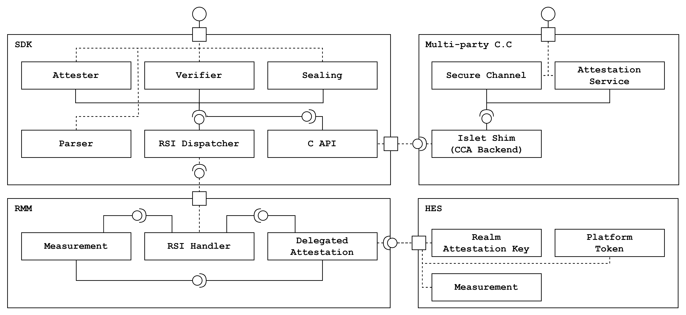
Security Considerations
The SDK complies with the Arm CCA RMM specification and the CCA Security Model. According to the recommendation, Security Model R0004, SDK utilizes our own HES-enabled system.
3. APIs and Interfaces
The SDK provides the following interfaces:
- Rust APIs for attestation and sealing
- C APIs to multi-part C.C. framework for secure channel
- Low-level interfaces to RMM for the RSI dispatcher
The realm developers can use Rust APIs and C APIs directly for attestation and sealing. The realm developers can use multi-part C.C. framework for secure channel. Low-level interfaces are abstracted to communicate between RMM and SDK internally.
The below diagram shows how API calls flow.
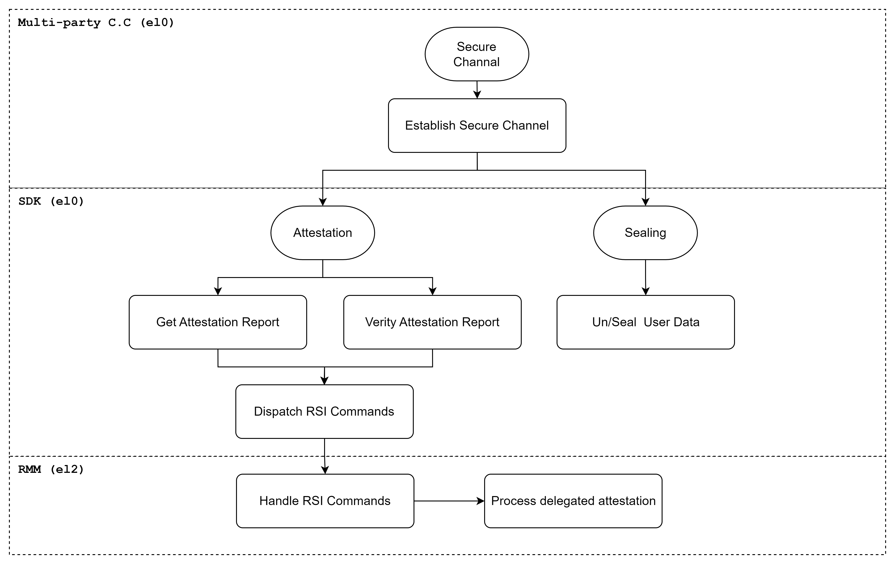
4. Functional Requirements
The SDK defines functional requirements to provide C.C. primitives. Function requirements cover Rust APIs, CAPIs and internal interfaces. The APIs should be tested using Testing Strategy.
| No | Name | Description |
|---|---|---|
| FR1 | Attestation Report Generation | The SDK must provide methods to get a CCA attestation report |
| FR2 | Attestation Report Verification | The SDK must provide methods to verify a CCA attestation report |
| FR3 | Attestation Report Parser | The SDK must provide methods to parse a CCA attestation report |
| FR4 | Simulated Attestation Report Generation | The SDK must provide methods to get a CCA attestation report (simulated ver x86_64) |
| FR5 | Simulated Attestation Report Verification | The SDK must provide methods to verify the CCA attestation report (simulated ver x86_64) |
| FR6 | Simulated Sealing | The SDK must provide methods to seal user data (simulated on x86_64) |
| FR7 | Simulated Unsealing | The SDK must provide methods to unseal sealed user data (simulated on x86_64) |
| FR8 | Secure Channel | The SDK must provide methods to secure channel using multi-part C.C framework |
| FR9 | RSI Dispatcher | The SDK must provide methods to dispatch RSI commands to RMM |
5. Non-Functional Requirements
The SDK defines non functional requirements as compliance standards. The standards include the CCA RMM spec, the CCA Security Model and the multi-part C.C framework.
| No | Name | Description |
|---|---|---|
| NFR1 | Compliance | Adheres to the Arm CCA specification |
| NFR2 | Unit Testing | Comprehensive unit testing for all SDK components |
| NFR3 | Deployment | Provides guidelines for deploying the SDK to multi-part C.C framework |
| NFR4 | RMM Independency | Makes loose coupling with RMM to support other spec compliant RMM |
6. Testing Strategy
The SDK provides our own unit tests for Rust APIs(Attestation and Sealing). The SDK provides the test code to the multi-party C.C framework for C APIs(Attestation and Sealing) and secure channel.
Attestation
- Components
- Islet SDK unit tests
- Multi-part C.C. framework test applications
- Related FRs
- FR1. Attestation Report Generation
- FR2. Attestation Report Verification
- FR3. Attestation Report Parser
- FR4. Simulated Attestation Report Generation
- FR5. Simulated Attestation Report Verification
- Validation methods
- Rust APIs should be passed by SDK unit tests on both x86_64 and aarch64 systems.
- C APIs should be worked with the multi-part C.C. framework on both x86_64 and aarch64 systems.
Sealing
- Components
- Islet SDK unit tests
- Multi-part C.C framework test applications
- Related FRs
- FR6. Simulated Sealing
- FR7. Simulated Unsealing
- Validation methods
- Rust APIs should be passed by SDK unit tests on the x86_64 system.
- C APIs should be worked with the multi-part C.C. framework on the x86_64 system.
Secure Channel
- Components
- Islet SDK unit tests
- Multi-part C.C Framework test applications
- Multi-part C.C Framework attestation service
- Related FRs
- FR8. Secure Channel
- Validation methods
- C APIs should be worked with the multi-part C.C. framework on both x86_64 and aarch64 systems.
7. Conclusion
This Software Design Document provides a comprehensive overview of the SDK’s architecture, functionality, functional and non-functional requirements for utilizing attestation, sealing and secure channel features on realms.
Attestation
Remote Attestation (RA) is the key of confidential computing platform, which is basically a method that convinces to verifier that a program (attester) is running on a proper confidential computing platform (e.g., SGX or ARM CCA). Unfortunately, at the beginning of ARM TrustZone which has been widely adopted by mobile device vendors up to this date, it lacks the support of RA in the form of a specification. Some research papers (e.g., SecTEE) have proposed a method to bring RA into TrustZone. However, due to the lack of standardization, RA comes in vendor-specific forms.
To address this problem, ARM CCA has been designed from the beginning, having RA in mind, and comes with a document (ARM CCA Security Model). On top of it, the attestation token format and the architecture described in that document align well with Remote ATtestation procedureS (RATS) specification, which is in active development to standardize RA stuff. This is a good thing as it implies that RA of CCA is not tightly coupled with a specific protocol, rather can connect to any attestation protocol.
Report
An attestation report (shortly, report) is an evidence produced by attester and consumed by verifier. In ARM CCA, report consists of two different tokens:
- CCA Platform token: it is used to assure that attester is running on a secure CCA platform. It covers the measurements of CCA platform components (e.g., RMM and EL3M) and whether it is in debug state.
- Realm token: this token is used to hold the measurement of Realm, which is equivalent to a virtual machine that may contain kernel and root file system.
You can quickly test and see what this report looks like through our rsictl tool.
Appraisal policy
According to RATS, there is a term named Appraisal Policy (shortly, Policy), which is central to how to build a real-world service on top of RA. You can basically think of Policy as a set of rules that verifier wants to enforce. For example, what tokens in a report say is basically sort of measurements signed by secure cryptographic keys. So, to build a meaningful security service around it, you have to write down Policy like “(1) Realm must have the measurement of X, (2) the measurement of CCA Platform software must be Y”.
As you may notice, managing Policy is out of scope of CCA as this is inherently not dependent on CCA. Instead, there are several open-source projects that take on this capability, for example, Veraison and Certifier Framework. They all aim to implement a standardized way to express and enforce Policy. (note that they sometimes are treated as a unified verification service as they are able to work across various TEEs)
Islet might be able to work with any verification service in theory, but currently bases the ability to handle Policy on Certifier Framework. You can see further details here on what Certifier Framework is and how Islet uses it.
Certifier framework
Certifier framework is a framework designed to bring the ability to handle Policy into reality in an TEE-agnostic way. It offers a set of client APIs that can plug into various TEEs including Islet (ARM CCA) and server called Ceritifer Service, which takes the role of verifying attestation reports that come from various TEEs. Islet currently adopts this framework to realize end-to-end confidential services that are likely to involve two or more different TEEs.
What we can do with Certifier Framework
To get what we can do with Certifier Framework, we want to show you a simple example in which client and server want to communicate through a secure channel authenticated by confidential computing platforms. There are three components involved– certifier service which this framework offers by default, client which runs on CCA, and server which runs on SGX or AMD SEV. The goal of the certifier framework is to allow only pre-defined applications to pass authentication, and thus block malicious applications in the first place.
The first thing we need to do to build this service is to write down Policy, that is to say, embedding a set of claims into a format called Policy. The Policy would look like this in verbal form:
- The measurement of application trying to join this service must be one of Client_Measurement and Server_Measurement.
- Applications trying to join this service run on a secure confidential computing platform.
After making an agreement on the policy, authentic client and server are going to be launched and generate an attestation report and send it to the certifier service. And then, the certifier service verifies that report based on the policy, in other words, verifying if that report doesn’t violate any claims in the policy. Only if properly verified, the certifier service issues admission cert which is going to be used to build a secure channel between client and server. From that point on, they can trust each other and send messages to each other securely.
A more complex example
For a more realistic case, we’ve built Confidential ML on top of the certifier framework. See this page to know what it is in more depth.
Contents
Platform development
Islet RMM Interfaces
Islet RMM adheres to the Arm Realm Management Monitor (RMM) specification, which defines interfaces between the Host and RMM, as well as between the Realm and RMM. The RMM specification is publicly available at Arm’s official documentation. Islet currently supports version 1.0-REL0 of this specification.
Secure interactions with the Host
In most TEEs, interacting with the host (or the non-secure environment) is the most error-prone part as the host can pass anything for malicious purposes. For example, the paper A Tale of Two Worlds demonstrated that many TEE SDKs made mistakes when implementing such interfaces. It is also not trivial to mitigate Iago attacks, which affect most TEEs by design.
As Islet aims to provide the best level of security, we take these problems seriously and try to tackle them through Rust’s syntax. This page describes how we address these issues.
Secure host memory access
In ARM CCA, for some cases, RMM needs to map host memory and read data from or write data to that memory.
For example, when RMI_REALM_CREATE is invoked, RMM must read parameters from a physical memory address provided by the host.
These accesses must be performed securely, as insecure implementations may allow attackers to compromise ARM CCA.
To improve the security of host memory access, dedicated helper functions are defined in rmm/src/host.rs:
copy_from()to copy raw data from a memory pointer into a newly instantiated data structure that implements theSafetyCheckedandSafetyAssuredtraits.copy_to_obj()to copy raw data from a memory pointer into an existing data structure that implements theSafetyCheckedandSafetyAssuredtraits.copy_to_ptr()to copy a data structure that implements theSafetyCheckedandSafetyAssuredtraits into a memory region pointed to by a raw pointer.
Here is an example of copy_from() usage in the REALM_CREATE handler:
#![allow(unused)]
fn main() {
listen!(mainloop, rmi::REALM_CREATE, |arg, ret, rmm| {
// ...
let params_ptr = arg[1];
// key arguments
// -- Params: the type of what the host passes
// -- arg[1]: a physical address that points to where we should read from
let params = host::copy_from::<Params>(params_ptr).ok_or(Error::RmiErrorInput)?;
// ... use params ...
}
}What these functions do:
- Perform per-struct security checks, such as checking the granule physical address and its state
- Copy data between host memory and RMM memory
Once this is done, we can access params, which resides in RMM memory, not host memory.
This makes the access secure against concurrency-based attacks such as double-fetch attacks.
If additional security checks on field values are needed, RMM structures such as Params and Run implement an additional verify_compliance() function (e.g., rmm/src/rmi/realm/params.rs) that performs checks before the structure is used.
RMI/RSI command validation
In ARM CCA, each RMI/RSI command has a different number of input/output parameters. Therefore, special care is needed when accessing these parameters.
To catch such mistakes in advance, Islet developers must explicitly define a Constraint for each command.
For RMI calls, constraints are defined in rmm/src/rmi/constraint.rs:
#![allow(unused)]
fn main() {
fn pick(cmd: Command) -> Option<Constraint> {
let constraint = match cmd {
rmi::VERSION => Constraint::new(rmi::VERSION, 2, 3),
rmi::GRANULE_DELEGATE => Constraint::new(rmi::GRANULE_DELEGATE, 2, 1),
rmi::GRANULE_UNDELEGATE => Constraint::new(rmi::GRANULE_UNDELEGATE, 2, 1),
rmi::DATA_CREATE => Constraint::new(rmi::DATA_CREATE, 6, 1),
...
}
}
}These constraints are verified by the validate() function defined in rmm/src/rmi/constraint.rs. The validate() function is used by the main RMI command dispatching loop defined in islet/rmm/src/event/mainloop.rs.
#![allow(unused)]
fn main() {
// (2) check defined constraints at runtime
listen!(mainloop, rmi::DATA_CREATE, |arg, _ret, rmm| {
// when you access arg[0], nothing happens because it doesn't cause an out-of-bound access.
let target_pa = arg[0];
// but, if you access arg[7], run-time panic occurs as this RMI command only has 6 arguments.
// you can catch this error in the testing phase and fix it in advance.
let xxx = arg[7];
}
}For RSI calls, constraints are defined in islet/rmm/src/rsi/constraint.rs. The analogous validate() function is called during handling of RSI commands and is defined in rmm/src/rsi/constraint.rs.
Safety Enhancements of Unsafe Rust
Overview
Due to the nature of its role operating at EL2,
Islet RMM requires the use of Rust’s unsafe syntax.
This activity focuses on minimizing the use of unsafe code
and finding design improvements to enhance safety.
Rust and Unsafe Rust
Rust is a system programming language that offers several key advantages [1]:
-
Memory Safety: Rust guarantees memory safety through its ownership system, which enforces strict borrowing rules and eliminates many common programming errors such as null pointer dereferencing, buffer overflows, and use-after-free bugs. This makes Rust particularly well-suited for systems programming, where these types of errors can lead to significant issues.
-
Concurrency: Rust’s ownership model also aids in safe concurrency. By enforcing rules at compile-time, Rust ensures that data races are impossible, making concurrent programming safer and more reliable compared to traditional languages.
-
Performance: Rust provides performance comparable to C and C++ due to its low-level control over hardware and lack of a garbage collector. This makes it an ideal choice for performance-critical applications such as operating systems, game engines, and real-time simulations.
-
Modern Tooling: Rust comes with a robust set of tools, including a package manager (Cargo), a build system, and integrated testing frameworks, which streamline the development process and enhance productivity.
These advantages make Rust particularly suitable for projects that require both security and performance, such as embedded systems and hypervisors.
Unsafe Rust is needed for implementing Islet RMM operating at EL2.
Tasks such as interfacing with hardware, manipulating raw pointers,
and performing certain optimizations require the use of unsafe code [2].
Since unsafe code operates outside Rust’s safety guarantees,
minimizing the use of unsafe code is crucial
to reduce the risk of security vulnerabilities and bugs.
Also, Formal verification tools, used to mathematically prove the correctness of programs,
typically focus on safe code [3].
These tools rely on Rust’s safety guarantees to build their proofs.
This limitation highlights the need to minimize and mitigate unsafe code usage.
To address the risks associated with unsafe code,
finding and implementing best practices that reduce reliance on unsafe operations are essential.
This includes creating safe abstractions, rigorously reviewing unsafe code,
and leveraging Rust’s ownership and type systems.
By doing so, developers can ensure that unsafe code is used correctly and safely,
reducing the risk of errors and improving the overall robustness of the codebase.
Code Analysis
Using a source code analysis tool [4],
we analyzed the Islet RMM v1. Based on expressions,
the ratio of unsafe code is 21% (refer to Fig. 1).
When categorized according to the keyword,
the total number of keywords used is 244,
with 185 unsafe blocks,
56 unsafe functions,
and 3 unsafe trait implementations.
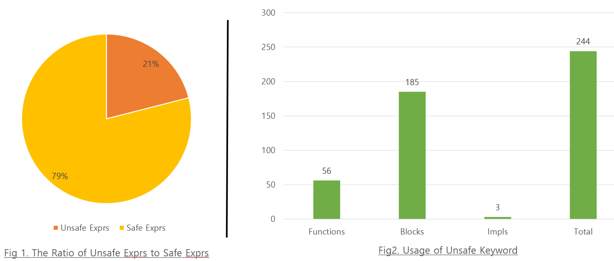
Code Improvement
To improve unsafe code usage,
we categorized the RMM’s unsafe code according to the usage purposes
outlined in "How do programmers use unsafe rust?"
and identified practices for improvement [5].
As a result, we defined four practices related to improve unsafe code.
These practices address the root causes of unsafe code usage
and provide structured methods to improve the safety and reliability of the codebase.
Practice 1: Representation of data structures defined by the specification
Cause: Use of union to match the offset in data structures as defined
by the specification [6].
Using union is considered risky because it allows interpreting
the same data in multiple incompatible ways, bypassing Rust’s strict type safety guarantees.
(Security Impact: Misinterpreting data can lead to undefined behavior, memory corruption, and potential security vulnerabilities such as buffer overflows and data leaks.)
#![allow(unused)]
fn main() {
#[repr(C)]
struct EntryInner {
flags: Flags,
gprs: GPRs,
gicv3: EntryGICv3,
}
#[repr(C)]
union Flags {
val: u64,
reserved: [u8; 0x200],
}
pub unsafe fn entry_flags(&self) -> u64 {
self.entry.inner.flags.val
}
}Solution: Replace union with padded structures to align offsets correctly while maintaining safe code practices.
#![allow(unused)]
fn main() {
pad_struct_and_impl_default!(
struct Entry {
0x0 flags: u64,
0x200 gprs: [u64; NR_GPRS],
0x300 gicv3_hcr: u64,
0x308 gicv3_lrs: [u64; NR_GIC_LRS],
0x800 => @END,
}
);
}Practice 2: Conversion of Data Structures Shared Between Execution Environments
Cause: The process of converting raw pointers to data structures shared
across different execution environments (e.g., Realm World and Host World).
Raw pointers bypass Rust’s borrowing rules, which can lead to data races, null dereferencing,
and other forms of undefined behavior.
(Security Impact: Risky conversions can result in memory safety violations, leading to data corruption, crashes, and potential exploitation by malicious code.)
#![allow(unused)]
fn main() {
pub unsafe fn init(config_addr: usize, ipa_width: usize) {
let config: &mut RealmConfig = &mut *(config_addr as *mut RealmConfig);
config.ipa_width = ipa_width;
}
}Solution: Implement safe abstractions and conversion functions to ensure type safety and prevent undefined behavior during data structure conversions.
#![allow(unused)]
fn main() {
pub fn init(config_addr: usize, ipa_width: usize) -> Result<(), Error> {
Ok(assume_safe::<RealmConfig>(config_addr)
.map(|mut realm_config| realm_config.ipa_width = ipa_width)?)
}
}Practice 3: Instance Management for Global Lifetimes
Cause: Use of unsafe code for managing instances that need to persist
for the global lifetime of the application.
Managing global instances with mutable statics can lead to unsynchronized access
and race conditions, violating Rust’s concurrency guarantees.
(Security Impact: Race conditions can lead to unpredictable behavior, data corruption, and vulnerabilities exploitable by attackers to cause denial of service or execute arbitrary code.)
#![allow(unused)]
fn main() {
pub static mut GRANULE_STATUS_TABLE: Option<GranuleStatusTable> = None;
pub fn create_granule_status_table() {
unsafe {
if GRANULE_STATUS_TABLE.is_none() {
GRANULE_STATUS_TABLE = Some(GranuleStatusTable::new());
}
}
}
}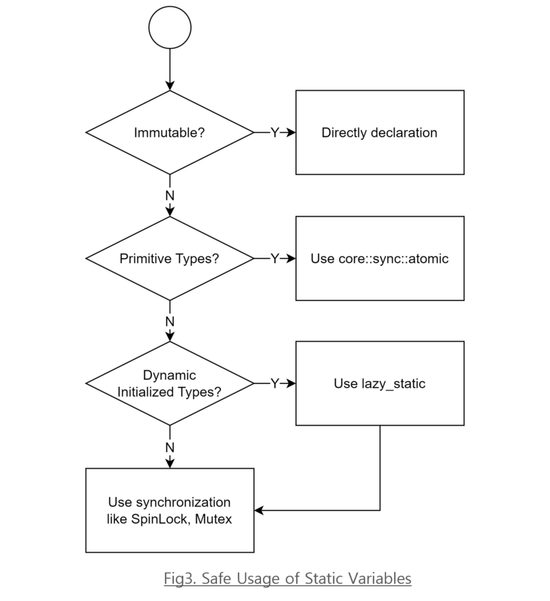
Solution: Define flowcharts to use mutable static variables safely by leveraging Rust’s idiom (refer to Fig. 3).
#![allow(unused)]
fn main() {
lazy_static! {
pub static ref GRANULE_STATUS_TABLE: GranuleStatusTable = GranuleStatusTable::new();
}
}Practice 4: Policies for Accessing System Registers
Cause: Direct access to system registers often requires unsafe operations.
System registers control hardware state and system behavior.
Incorrect handling can bypass security mechanisms and lead to undefined behavior.
(Security Impact: Risky access to system registers can compromise the system’s stability and security, leading to potential privilege escalation or hardware malfunction.)
#![allow(unused)]
fn main() {
pub fn save_state(vcpu: &mut VCPU<Context>) {
...
*&mut gic_state.ich_vmcr_el2 = unsafe { ICH_VMCR_EL2.get() };
*&mut gic_state.ich_hcr_el2 = unsafe { ICH_HCR_EL2.get() };
*&mut gic_state.ich_misr_el2 = unsafe { ICH_MISR_EL2.get() };
unsafe { ICH_HCR_EL2.set(gic_state.ich_hcr_el2 & !ICH_HCR_EL2_EN_BIT) };
}
}Solution: Contribute the necessary registers to the open-source project
that is the de facto standard in Rust, which applies safe abstractions
to system register access [7].
Use this project for accessing system registers safely.
If accessing certain system registers is critical to memory safety, it must be exposed as unsafe.
#![allow(unused)]
fn main() {
use aarch64_cpu::registers::*;
pub fn save_state(rec: &mut Rec<'_>) {
...
gic_state.ich_vmcr_el2 = ICH_VMCR_EL2.get();
gic_state.ich_hcr_el2 = ICH_HCR_EL2.get();
gic_state.ich_misr_el2 = ICH_MISR_EL2.get();
ICH_HCR_EL2.set(gic_state.ich_hcr_el2 &
!(ICH_HCR_EL2::En.mask << ICH_HCR_EL2::En.shift));
}
}Key Results
KR1: Reduction in Unsafe Keywords
We have enhanced the overall robustness and maintainability of our project.
Notably, Islet v1.0 had 244 unsafe keywords,
which have been reduced to 75 in Islet v1.0-seur,
Version 1.0 Safety Enhancements of Unsafe Rust,
Resulting in an approximately 70% reduction (refer to Fig. 4).
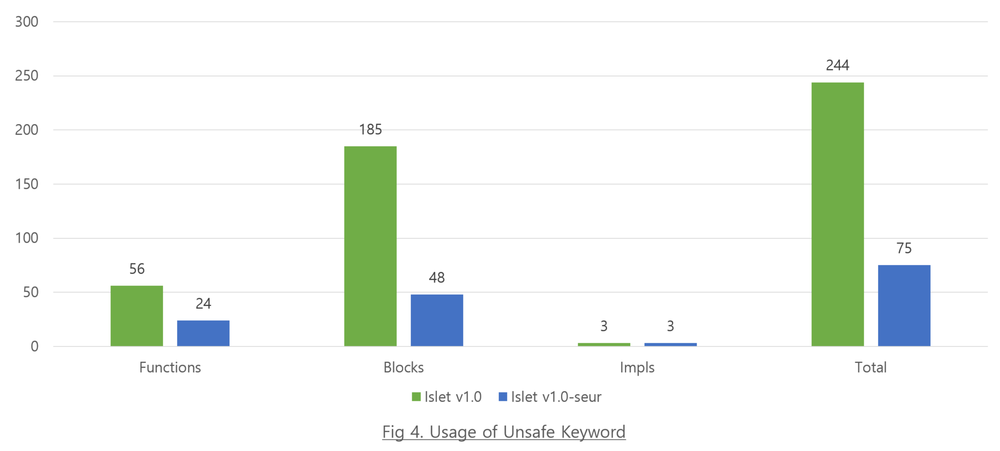
KR2: Best Practices for Improving Unsafe Code
We have also defined four best practices for improving unsafe code.
These practices provide clear guidelines for developers to follow,
ensuring the consistent application of safe coding principles across the project.
In Practice 1, 42 unsafe keywords were removed [8].
In Practice 2, 19 unsafe keywords were removed [9].
In Practice 3, 4 unsafe keywords were removed [10].
In Practice 4, 102 unsafe keywords were removed [11].
Due to code changes since Islet v1.0,
only explicitly removed keywords were counted (refer to Fig. 5).
The remaining 75 unsafe keywords are associated with accessing local registers
and internally managed structures within RMM, such as converting raw pointers for page tables.
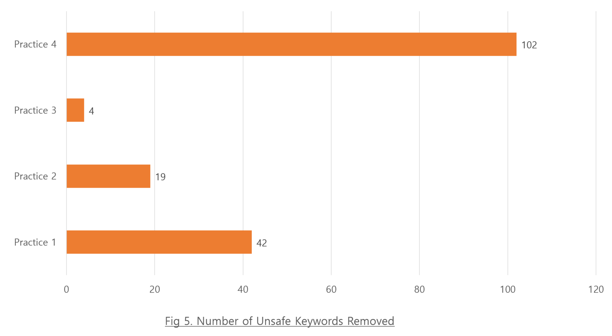
KR3: Development a new library (safe-abstraction)
For Practice 2, safe_abstraction crate was developed.
The safe_abstraction library is designed to facilitate safer abstraction
over unsafe code, aiming to enhance the safety and maintainability of Rust code,
especially when dealing with unsafe code blocks [12].
KR4: Integration of Source Code Analysis Tool
We have integrated a source code analysis tool, cargo-geiger, into our CI pipeline.
This tool automates the detection and monitoring of unsafe code,
allowing us to maintain code safety and quickly identify areas that require attention.
KR5: Contribution to Open Source Project
Currently, we are in the process of contributing
to the open-source project rust-embedded/aarch64-cpu [13].
This contribution aims to extend the capabilities of this widely-used project,
ensuring that it includes the necessary registers and applies safe abstractions
to system register access, further promoting safe coding practices in the Rust community.
Conclusion
In this report, we have resulted in a notable reduction of unsafe keywords by approximately 70%.
This achievement underscores our commitment to minimizing unsafe code
and improving overall code quality.
We have also defined four best practices for improving unsafe code.
Additionally, we have integrated a source code analysis tool, cargo-geiger,
into our CI pipeline, allowing us to maintain code safety through automated detection
and monitoring of unsafe code.
One of our key initiatives, the development of a new library to aid in the safe design and use of raw pointers, further demonstrates our proactive approach to improving code safety. This library specifically addresses the needs identified in Practice 2, ensuring safer data structure conversions.
Lastly, our ongoing contribution to the rust-embedded/aarch64-cpu open-source project
aims to extend the capabilities of this widely-used project,
promoting safe coding practices in the Rust community by incorporating necessary registers
and applying safe abstractions.
By addressing the root causes of unsafe code and implementing structured improvement practices,
we have minimized the use of unsafe of the Islet codebase.
Our goal is to ensure that the Islet project remains a benchmark for safe
and reliable software in the field of confidential computing.
Future Work
Moving forward, our efforts will focus on the following areas to further enhance the safety and robustness of the Islet codebase:
- Tool Integration and Improvement: Continue to integrate rust safety tools like
MIRIin our CI pipeline to automate the detection ofunsafecode and maintain high safety standards [14]. - Ongoing Audits: Regularly audit the codebase to identify and address new instances of
unsafecode, ensuring continuous improvement in code safety. - Community Contribution: Actively contribute to the open-source community,
particularly projects like
rust-embedded/aarch64-cpu, to promote the use of safe abstractions and enhance collaborative development efforts.
Reference
[0] Islet: An On-Device Confidential Computing Platform
[1] Rust: A language empowering everyone to build reliable and efficient software.
[2] The unsafe keyword, The Rust Reference
[3] RustBelt: securing the foundations of the Rust programming language, ACM, 2017
[4] A tool that lists statistics related to the usage of unsafe Rust code
[5] How do programmers use unsafe rust?, ACM, 2020
[6] Realm Management Monitor Specification
[7] aarch64-cpu: Low level access to processors using the AArch64 execution state
[8] Practice 1: Representation of data structures defined by the specification
https://github.com/islet-project/islet/pull/295
https://github.com/islet-project/islet/pull/286
[9] Practice 2: Conversion of Data Structures Shared Between Execution Environments
https://github.com/islet-project/islet/pull/297
https://github.com/islet-project/islet/pull/298
https://github.com/islet-project/islet/pull/332
[10] Practice 3: Instance Management for Global Lifetimes
https://github.com/islet-project/islet/pull/279
[11] Practice 4: Policies for Accessing System Registers
https://github.com/islet-project/islet/pull/331
[12] Islet: Safe Abstraction Crate
[13] aarch64-cpu: Add multiple registers and update fields
[14] MIRI:An interpreter for Rust’s mid-level intermediate representation
Code Formatting and Lint Checking for Islet
Overview
This document outlines the coding standards for the Islet project, focusing on code formatting and lint checking. The project uses Rust for certain components and Bash for build and execution scripts. Below are the tools and standards employed for each language, along with instructions for running checks.
Rust: cargo fmt and cargo clippy
We adhere to the Official Rust Style Guide and use cargo fmt and cargo clippy to ensure compliance with these standards.
Rust Coding Standards
Code Formatting:
Use cargo fmt to adhere to the official Rust style guide, ensuring consistent code structure and readability.
cargo fmtis a Rust tool that automatically formats Rust code according to the official Rust style guide. It ensures consistent 4-space indentation, spacing, and code structure, making the codebase more readable and maintainable.
Lint Checking:
Use cargo clippy to catch common errors, improve code quality, and enforce Rust best practices.
cargo clippyis a Rust linter that identifies common programming errors, anti-patterns, and potential improvements in Rust code. It enforces best practices and helps developers write safer and more idiomatic Rust code.
Running Checks
- To check code formatting with
cargo fmt, navigate to thermm/srcdirectory and run:cd rmm/src cargo fmt -- --check` or `cargo fmt --all - To run
cargo clippy, execute the script: (Available at: clippy.sh)scripts/tests/clippy.sh
Bash: shfmt
shfmt
shfmt is a Bash formatter that automatically formats Bash scripts to ensure consistent style and readability. It aligns code with standard Bash conventions, such as proper indentation and spacing.
Bash Coding Standards
- Code Formatting: Use
shfmtto format Bash scripts according to standard conventions, ensuring clean and readable code. - Lint Checking: While
shfmtprimarily focuses on formatting, it also helps identify syntax issues and improve script structure.
Running Checks
To verify Bash script formatting, execute the following commands:
./assets/formatter/shfmt -d -ci -bn -fn $(find scripts/. -name *.sh)
./assets/formatter/shfmt -d -ci -bn -fn $(find examples/cross-platform-e2ee/. -name *.sh)
Contents
Unit Test Guidance for Islet RMM
Overview
Islet RMM adheres to the Arm Realm Management Monitor (RMM) specification, which defines interfaces between the Host and RMM, as well as between the Realm and RMM. The RMM specification is publicly available at Arm’s official documentation. Islet currently supports version 1.0-REL0 of this specification.
Test Tools
To ensure compliance with the RMM specification, Islet utilizes unit tests provided by Arm. These tests include the Architecture Compliance Suite for Realm Management Monitor (ACS test) and The Trusted Firmware-A Tests (tf-a-test). Any modifications to Islet RMM must pass these tests as part of the Continuous Integration (CI) process, and successful test results are required for PR merges.
ACS Test
The following content is extracted from the the ACS Test repository:
The Architecture Compliance Suite (ACS) contains a set of functional tests, demonstrating the invariant behaviors that are specified in the architecture specification. It is used to ensure architecture compliance of the implementations to Realm Management Monitor specification.
Trusted Firmware-A Tests (tf-a-tests)
The Trusted Firmware-A Tests(tf-a-test) is another set of tests providing compliance checks with RMM specification.
Running Tests
ACS Test
To run the ACS test, execute the following commands:
./scripts/tests/acs.sh
Alternatively, you can run the test directly using:
./scripts/fvp-cca -bo -nw=acs -rmm=islet --rmm-log-level=error
./scripts/fvp-cca -ro -nw=acs -rmm=islet
Trusted Firmware-A Tests (tf-a-test)
To run the Trusted Firmware-A tests, execute the following commands:
./scripts/tests/tf-a-tests.sh
Alternatively, you can run the test directly using:
./scripts/fvp-cca --clean tf-a-tests
./scripts/fvp-cca -bo -nw=tf-a-tests -rmm=islet
./scripts/fvp-cca -ro -nw=tf-a-tests -rmm=islet
CI Integration
All PRs modifying Islet RMM are automatically tested in the CI pipeline. The CI process runs both the ACS test and tf-a-tests to ensure compliance with the RMM specification. PRs must pass these tests before they can be merged.
By following this guidance, Islet ensures that its RMM implementation remains compliant with Arm’s RMM specification and maintains high-quality standards.
Verification
Note
This document regards an older version of Islet (tag v1.0-seur).
We formally verify Islet using Kani’s model checking. Our verification harnesses adopt the same input and output conditions as well as similar structures used in TF-RMM’s harnesses which are extracted from Machine Readable Specification. It would help to check the conformance of the two systems written in different languages.
Verification dependency
Available RMI targets
rmi_features
rmi_granule_delegate
rmi_granule_undelegate
rmi_realm_activate
rmi_realm_destroy
rmi_rec_aux_count
rmi_rec_destroy
rmi_version
Verifying Islet
(in islet/model-checking)
# Choose one among the list in `Available RMI targets` for the value of `RMI_TARGET`
$ RMI_TARGET=rmi_granule_undelegate make verify
For more about Islet’s model-checking, please refer to here.
Islet Verification
Work done for Islet’s Model Checking
Refactoring for Overall State Reduction
Reducing the overall state is a key technique for model checking, which often involves computationally infeasible formulas. For this purpose, we have refactored Islet in the following ways: Array-based Granule Status Table, Integration of Realm and RD as well as VCPU and REC, and Constraint Retrieval Modification.
-
Array-based Granule Status Table
We maintain a page table-based Granule Status Table in order to reduce the overall memory consumption in Islet. This data structure, while being beneficial in terms of memory usage, was a main obstacle in modeling checking Islet, because using it would cause a state explosion. To address this issue, we added an array-based Granule Status Table which could be selectively chosen with conditional compilation. The intention is for reducing the overall complexity of page table-based one, helping to reason about the implementation.
When the array-based Granule Status Table is chosen, the call sequence could be largely simplified from the caller’s perspective like the below, reducing the overall state in model checking.
#![allow(unused)] fn main() { [before] // Previously, the below match was used to expand the page table entry. let mut granule = match get_granule_if!(addr, GranuleState::Undelegated) { Err(MmError::MmNoEntry) => set_state_and_get_granule!( addr, GranuleState::Undelegated) other => other, }?; [after] // The match is no longer used, as the array will not be expanded. let mut granule = get_granule_if!(addr, GranuleState::Undelegated)?; } -
Integration of Realm and RD
Before the refactoring, Realm and RD (Realm Descriptor) had almost the same purpose and overlapped functionalities, increasing the overall complexity in verifying the system. To address this issue, we changed to keep only RD which is defined by spec.
The summary of changes is like the below.
#![allow(unused)] fn main() { -pub struct Realm { - id: usize, - pub vmid: u16, - pub state: State, - pub vcpus: Vec<Arc<Mutex<VCPU>>>, - pub page_table: Arc<Mutex<Box<dyn IPATranslation>>>, - pub measurements: [Measurement; MEASUREMENTS_SLOT_NR], -} pub struct Rd { - realm_id: usize, + vmid: u16, ... + s2_table: Arc<Mutex<Box<dyn IPATranslation>>>, hash_algo: u8, + pub measurements: [Measurement; MEASUREMENTS_SLOT_NR], + pub vcpus: Vec<Arc<Mutex<VCPU>>>, } }With the change, the call sequence could be largely simplified from the caller’s perspective, reducing the overall state in model checking.
#![allow(unused)] fn main() { [before] let (s2tte, last_level) = get_realm(realm_id) .ok_or(Error::RmiErrorOthers(NotExistRealm))? .lock() .page_table .lock() .ipa_to_pte(GuestPhysAddr::from(ipa), level) .ok_or(error_code)?; [after] let (s2tte, last_level) = rd .s2_table() .lock() .ipa_to_pte(GuestPhysAddr::from(ipa), level) .ok_or(error_code)?; }#![allow(unused)] fn main() { [before] let measurements = crate::realm::registry::get_realm(realmid) .ok_or(Error::RmiErrorOthers(NotExistRealm))? .lock() .measurements; [after] let measurements = rd.measurements; } -
Integration of VCPU and REC
Before the refactoring, VCPU and REC (Realm Execution Context) had almost the same purpose and overlapped functionalities, increasing the overall complexity in verifying the system. To address this issue, we changed to keep only REC which is defined by spec.
The summary of changes is like the below.
#![allow(unused)] fn main() { -pub struct VCPU { - pub context: Context, - pub state: State, - pub pcpu: Option<usize>, - me: Weak<Mutex<Self>>, -} +[repr(C)] pub struct Rec<'a> { + pub context: Context, attest_state: RmmRecAttestState, ... - state: RecState, + state: State, ripas: Ripas, vtcr: u64, host_call_pending: bool, } }With the change, the call sequence could be largely simplified from the caller’s perspective, reducing the overall state in model checking.
#![allow(unused)] fn main() { [before] let pa_offset = get_reg(rd, vcpuid, 2)?; let buffer_size = get_reg(rd, vcpuid, 3)?; [after] let pa_offset = get_reg(rec, 2)?; let buffer_size = get_reg(rec, 3)?; }#![allow(unused)] fn main() { [before] pub fn get_reg(rd: &Rd, vcpu: usize, register: usize) -> Result<usize, Error> { ... let value = rd .vcpus .get(vcpu) .ok_or(Error::RmiErrorOthers(NotExistVCPU))? .lock() .context .elr; ... } [after] pub fn get_reg(rec: &Rec<'_>, register: usize) -> Result<usize, Error> { ... let value = rec.context.elr; ... } } -
Constraint Retrieval Modification
We refactored constraint retrieval procedure of RMI and RSI. The main motivation of the refactoring is that insertion and get in the map are very expensive operations in the formal semantic and thus avoiding them is better if possible. It is also beneficial for runtime performance, as the previous insertions are no longer involved. The change assumes that the configuration regarding constraints does not change at runtime.
#![allow(unused)] fn main() { [before] lazy_static! { static ref CONSTRAINTS: BTreeMap<Command, Constraint> = { let mut m = BTreeMap::new(); m.insert(rmi::VERSION, Constraint::new(rmi::VERSION, 1, 1)); ... (caller) if let Some(c) = CONSTRAINTS.get(&cmd) { [after] fn pick(cmd: Command) -> Option<Constraint> { let constraint = match cmd { rmi::VERSION => Constraint::new(rmi::VERSION, 1, 1), ... (caller) if let Some(c) = pick(cmd) { } -
The Summary of Refactoring
Table 1 summarizes the number of physical lines of code involved by the refactoring.
The Type of Refactoring Addition Deletion Total Array-based Granule Status Table 621 367 988 Integration of RD and Realm 342 442 784 Integration of VCPU and REC 311 564 875 Constraint Retrieval Modification 49 133 182 Total 1323 1506 2829 Table 1. Line Counts of the Refactoring
Writing Harnesses
A harness is an essential component in model checking as it provides the entry point and prepares for the system execution (e.g., global state initialization). It acts as a bridge between the model checker and the system under verification, allowing the model checker to access the the system’s inputs and outputs. The harness ensures that the correct input values are provided to the system and captures the corresponding output responses. Also, the harness can contain the behaviors of the system to validate.
In writing harnesses, we adopt the same input and output conditions as well
as similar structures used in TF-RMM’s
harnesses which are extracted from Arm’s Machine Readable Specification.
We use this approach, because it would help to check the conformance of the
two systems, namely Islet and TF-RMM, written in different languages: Rust and C.
While using the similar structures, we also preserve Islet’s unique characteristics
as much as possible. For example, we maintain two different versions of Islet’s
Mainloop and Monitor (one for verification and the other for execution),
so that harnesses can help determine their target ABI’s input and output
through Monitor’s argument and return value as shown in Figure 1-2.
The other examples of harnesses can be also found in Figure 2-1 and Figure 2-2,
which describe the harnesses for RMI granule undelegate.
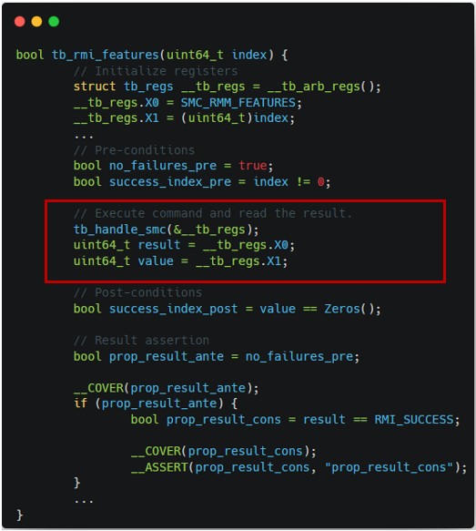 | 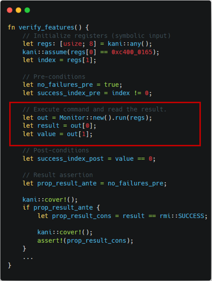 |
|---|---|
| Figure 1-1. TF-RMM features harness | Figure 1-2. Islet features harness |
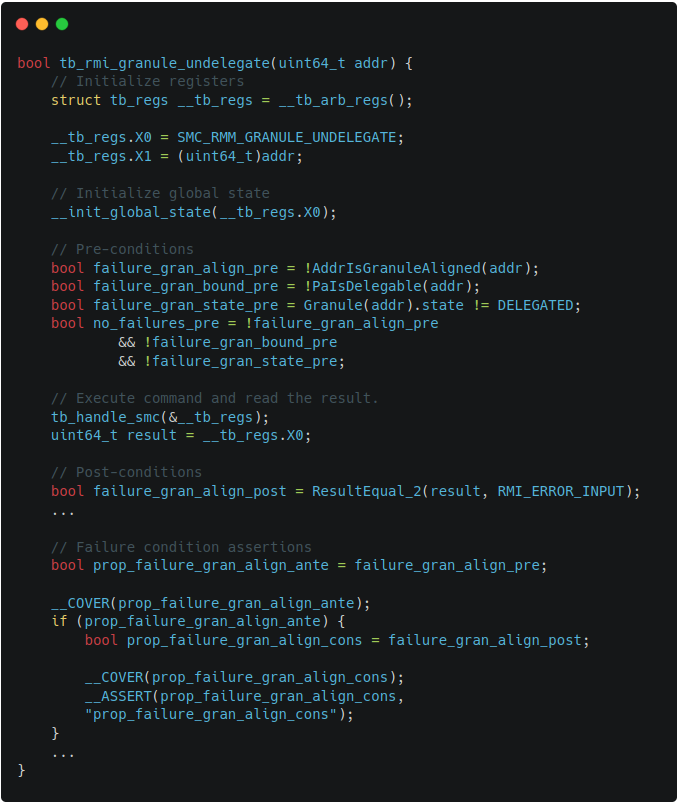 | 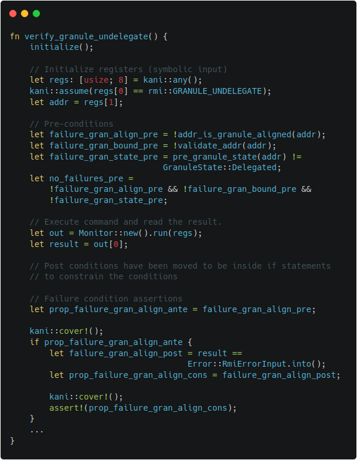 |
|---|---|
| Figure 2-1. TF-RMM granule undelegate harness | Figure 2-2. Islet granule undelegate harness |
Embeding Invariants
Formal verification can help to prove interesting invariants to be held
in the entire states. We embed the invariants with is_valid() predicate
in target data structures. For example, the below is the specification
about granule’s attributes.
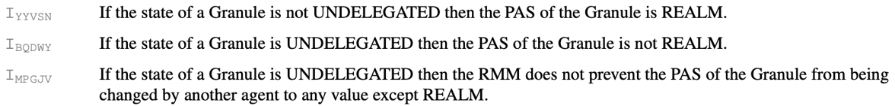
Using the specification’s conditions, is_valid() predicate can be
defined in Granule and Granule Status Table respectively.
The added predicate ensures that all granule entries in Granule Status
Table are in valid status conforming to the specification.
#![allow(unused)]
fn main() {
impl Granule {
...
#[cfg(kani)]
pub fn is_valid(&self) -> bool {
self.state >= GranuleState::Undelegated &&
self.state <= GranuleState::RTT &&
// XXX: the below condition holds from beta0 to eac4
if self.state != GranuleState::Undelegated {
self.gpt == GranuleGpt::GPT_REALM
} else {
self.gpt != GranuleGpt::GPT_REALM
}
}
}
}#![allow(unused)]
fn main() {
impl GranuleStatusTable {
...
#[cfg(kani)]
pub fn is_valid(&self) -> bool {
self.entries
.iter()
.fold(true, |acc, x| acc && x.lock().unwrap().is_valid())
}
}
}Environment Modeling
Model checking requires an environment model to accurately analyze and verify system behaviors. By explicitly specifying the environment in which a system operates, one can ensure that all possible interactions between the system and its surroundings are considered during verification. During Islet’s model checking, we have modeled EL3 Monitor and Host Memory to help verify Islet.
-
EL3 Monitor Modeling
Background: RMM interacts with EL3 monitor for privileged operations (e.g., Granule Partition Table change). While RMM itself is the target of verification and is translated by model checker, RMM’s environment such as EL3 monitor is beyond the scope of verification, thus should be properly modeled during verification.
The approach we use: We insert a ghost
gptfield in a granule’s entry for tracking GPT’s change as shown in Figure 3-1. We also embed EL3’s GPT handling code in SMC invocation as shown in Figure 3-2.
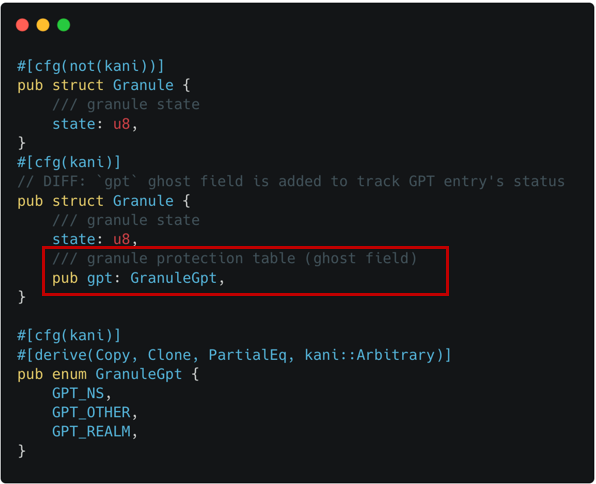 | 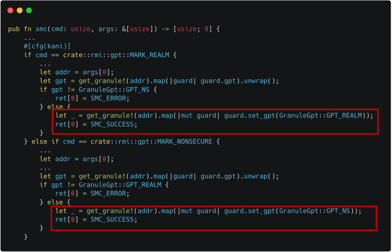 |
|---|---|
| Figure 3-1. Ghost gpt field for EL3 Modeling | Figure 3-2. GPT Handling for EL3 Modeling |
-
Host Memory Modeling
Background: The Host delegates and undelegates is memory for Realm World’s usage. To verify RMM, the memory region should be properly modeled.
The approach we use: We model the Host memory as a pre-allocated memory region, because it helps to avoid a false-positive related to invalid memory accesses. Also, instead of using the same starting address (e.g., 0x8000_0000), we use a mock region filled with non-deterministic contents. It helps to address an issue related to the backend CBMC’s pointer encoding where the first 16 bits are used for a pointer object’s identifier.
The relevant implementation of the Host memory is shown as dotted line in Figure 4-1, while the pre-allocated mock region as solid line. The checking logic regarding valid memory range is also adjusted from dotted line (original check) to solid line (modeled check) in Figure 4-2.
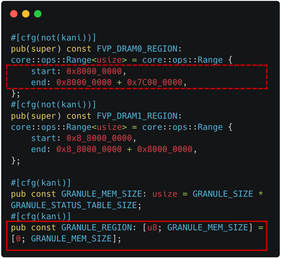 | 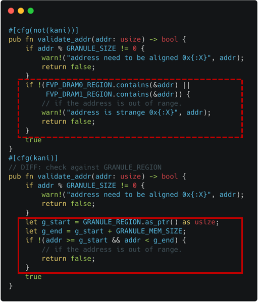 |
|---|---|
| Figure 4-1. Host Memory Modeling (Declaration) | Figure 4-2. Host Memory Modeling (Check) |
Results
Steps to Reproduce
-
Verification Dependency
-
Available RMI targets
rmi_features rmi_granule_delegate rmi_granule_undelegate rmi_realm_activate rmi_rec_aux_count rmi_rec_destroy rmi_version -
Verifying Islet
(in islet/model-checking) # Choose one among the list in `Available RMI targets` for the value of `RMI_TARGET` $ RMI_TARGET=rmi_granule_undelegate make verify
Bugs Found
We found four correctness bugs and one security bug during Islet’s model checking.
-
RMI Features
Figure 5-1 indicates the previous implementation of RMI features. When this code was passed as an input, the verification failed. It was because the code was violating the failure conditions of RMI features as shown in Figure 5-2. After fixing the line returning the error condition, the verification becomes successful.
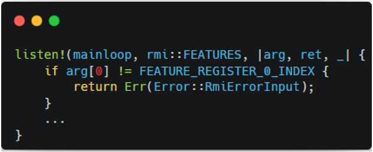 | 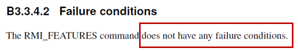 |
|---|---|
| Figure 5-1. Buggy RMI Features Code | Figure 5-2. Failure Conditions of RMI features |
-
RMI Granule Undelegate
Figure 6-1 incidates the previous implementation of
set_state()which modifies the state of the target granule. It is invoked by several ABIs including RMI granule undelegate. When this code was used, the verification for RMI granule undelegate failed. It was because the code was violating the success conditions of RMI granule undelegate as shown in Figure 6-2. We fixed the code to zero-out the contents not only in the delegated state but also in the undelegated state, turning the verification results successful. Note that without the patch, it could have left sensitive information on the target granule, which might be obtained by attackers.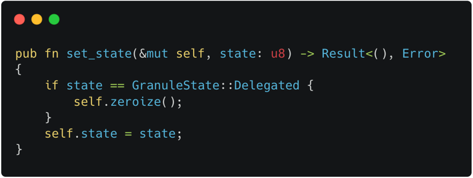
Figure 6-1. Buggy RMI Granule Undelegate Code 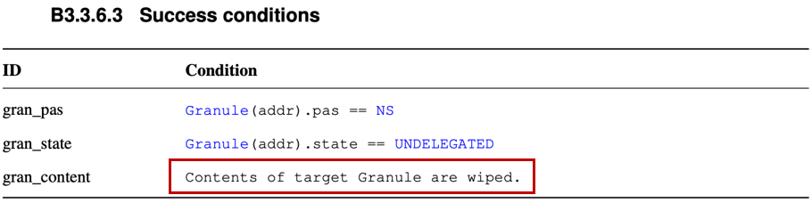
Figure 6-2. Success Conditions of RMI Granule Undelegate -
RMI Rec Destroy
Figure 7-1 indicates the previous implementation of RMI rec destroy. When this code was passed as an input, two verification conditions failed. It was because the code was violating the failure condition as well as the success condition of RMI rec destroy as shown in Figure 7-2. After adding the sanitization logic and granule setting code, the verification becomes successful.
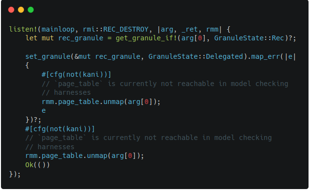 | 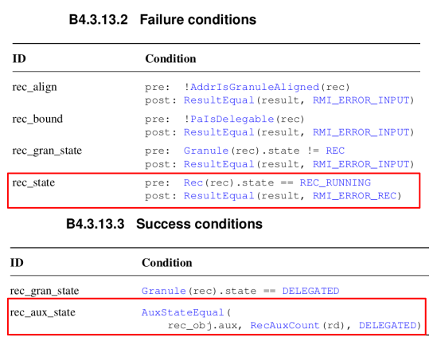 |
|---|---|
| Figure 7-1. Buggy RMI Rec Destroy Code | Figure 7-2. Conditions of RMI Rec Destroy |
-
RMI Version
Figure 8-1 indicates the previous implementation of RMI version. When this code was passed as an input, the verification failed. It was because the code was not satisfying the conditions for output values (lower and higher) in failure conditions of RMI version as shown in Figure 8-2. After setting the output values beforehand, the verification becomes successful.
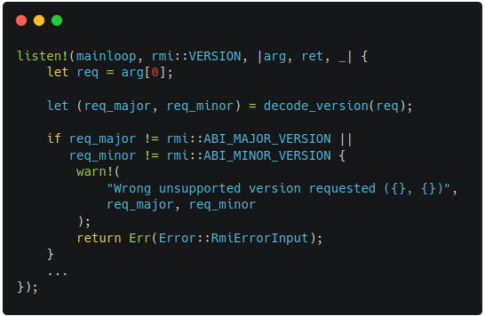 | 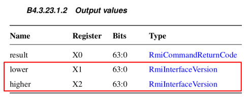 |
|---|---|
| Figure 8-1. Buggy RMI Version Code | Figure 8-2. Outputs of RMI Version |
Verification Output
-
RMI Features
Figure 9-1 shows the output of Islet’s model checking with the target of RMI features. It says that the total of 5271 verification conditions and the total of 4 cover conditions have successfully passed.
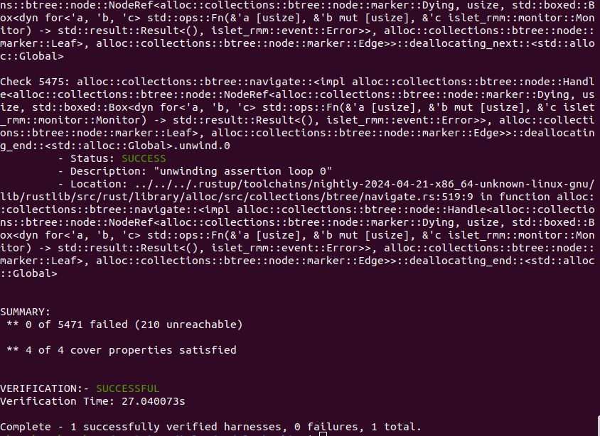
Figure 9-1. Model Checking Output of RMI Features -
RMI Granule Delegate
Figure 9-2 shows the output of Islet’s model checking with the target of RMI granule delegate. It says that the total of 5557 verification conditions and the total of 14 cover conditions have successfully passed.
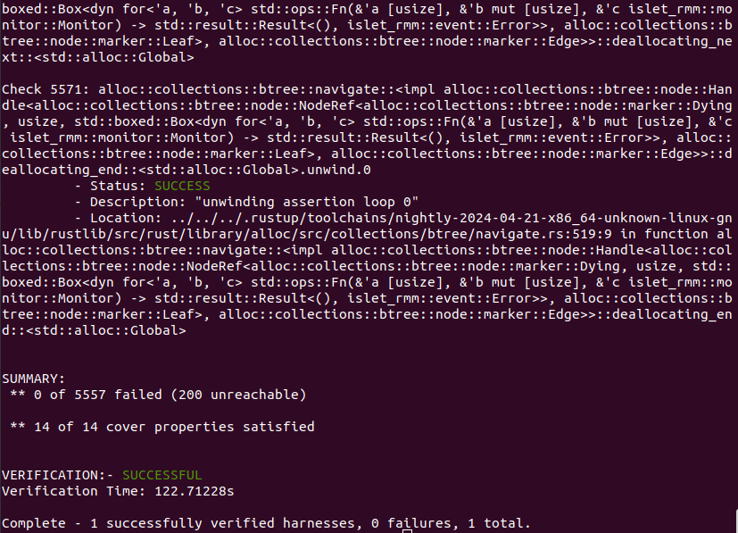
Figure 9-2. Model Checking Output of RMI Granule Delegate -
RMI Granule Undelegate
Figure 9-3 shows the output of Islet’s model checking with the target of RMI granule undelegate. It says that the total of 5559 verification conditions and the total of 14 cover conditions have successfully passed.
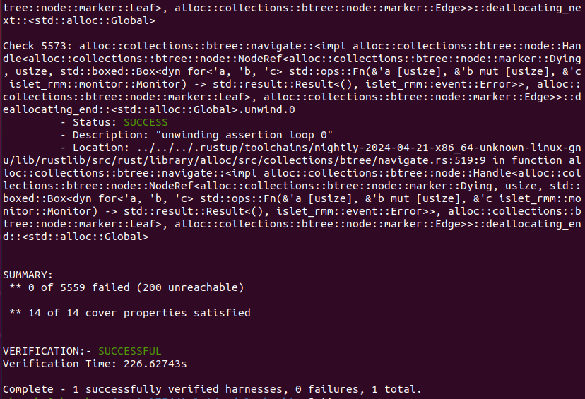
Figure 9-3. Model Checking Output of RMI Granule Undelegate -
RMI Realm Activate
Figure 9-4 shows the output of Islet’s model checking with the target of RMI realm activate. It says that the total of 5584 verification conditions and the total of 12 cover conditions have successfully passed.
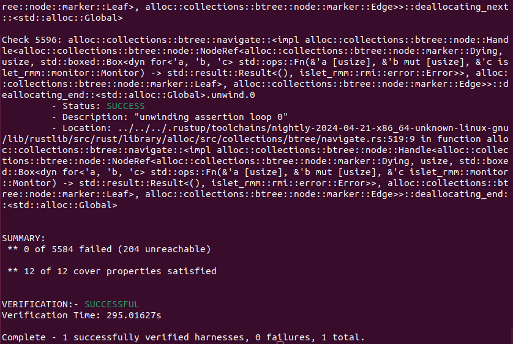
Figure 9-4. Model Checking Output of RMI Realm Activate -
RMI Rec Aux Count
Figure 9-5 shows the output of Islet’s model checking with the target of RMI rec aux count. It says that the total of 5495 verification conditions and the total of 10 cover conditions have successfully passed.
Figure 9-5. Model Checking Output of RMI Rec Aux Count -
RMI Rec Destroy
Figure 9-6 shows the output of Islet’s model checking with the target of RMI rec destroy. It says that the total of 5610 verification conditions and the total of 14 cover conditions have successfully passed.
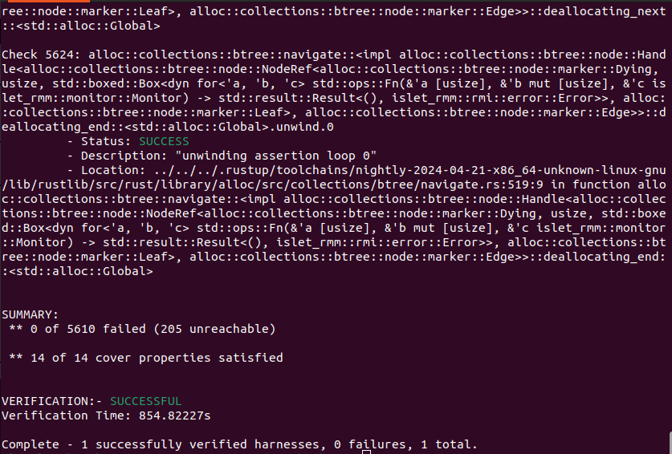
Figure 9-6. Model Checking Output of RMI Rec Destroy -
RMI Version
Figure 9-7 shows the output of Islet’s model checking with the target of RMI version. It says that the total of 5468 verification conditions and the total of 3 cover conditions have successfully passed.
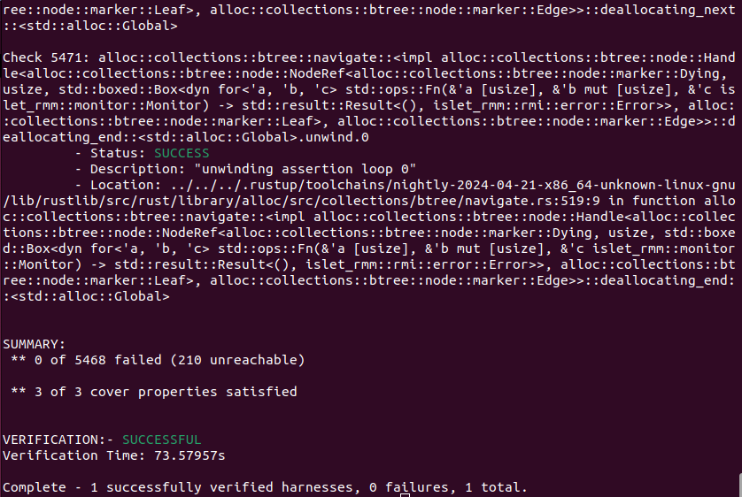
Figure 9-7. Model Checking Output of RMI Version
Fuzz Testing Guide for Islet RMM
Note
This document regards an older version of Islet (tag ccav1.0-eac5).
Overview
Islet is built in Rust, which inherently ensures memory safety by design. To further enhance security, we employ tools like Miri to verify that unsafe code adheres to safety rules and Kani, a model checker, for formal verification. Beyond these measures, we also incorporate fuzz testing, a proven method for discovering vulnerabilities, into the Islet RMM development process. We utilize cargo fuzz, which leverages libFuzzer, to perform fuzz testing effectively.
Running Fuzz Tests
To execute fuzz tests, use the following command:
./scripts/fuzz.sh {fuzz test binary} {optional libFuzzer arguments}
If no fuzz test binary is provided as a command-line argument, a list of available binaries will be displayed. You can then select one from the list and run it.
Additional arguments can be supplied to configure libFuzzer itself (https://llvm.org/docs/LibFuzzer.html#options).
To collect coverage information, use the following command:
./scripts/fuzz-coverage.sh {fuzz test binary} {duration of fuzzing}
The coverage script for multiple fuzz binaries can be run successively to build a combined coverage report. The coverage report can be found at /code_coverage/ in HTML form.
The fuzz tests are intended to be run on aarch64 machines. However, they can also be run on x86_64 albeit much slower due to the overhead of QEMU userspace emulation.
Analyzing Fuzz Test Results
If a fuzzer encounteres a crash, the crashing input will be saved as /rmm/fuzz/crash-xxxx. A full backtrace will also be shown displaying the offending calls.
To reproduce the crash using the saved input, use the following command:
./scripts/fuzz.sh {fuzz test binary} {crash-xxxx}
Writing Additional Fuzz Test Harnesses
Fuzz test harnesses are located in /rmm/fuzz/fuzz_targets. Majority of the RMI command fuzzers are based on existing MIRI tests. Additional RMI fuzzers outside of miri coverage and RSI fuzzers are instead based on C-based ACS unit tests.
#![allow(unused)]
fn main() {
1 #![no_main]
2
3 use islet_rmm::rmi::{GRANULE_DELEGATE, GRANULE_UNDELEGATE, RTT_CREATE, RTT_DESTROY, SUCCESS};
4 use islet_rmm::test_utils::{mock, *};
5
6 use libfuzzer_sys::{arbitrary, fuzz_target};
}- We use a different entrypoint for fuzzing so we avoid using a main function as seen in line 1.
- All the necessary RMI commands are imported in line 3.
- Similar to miri, mock utilies are imported from
test_utilsas seen in line 4. - In line 6,
fuzz_targetimports the base libFuzzer fuzzing setup andarbitraryextends the former to allow structure-aware fuzzing.
Every fuzz test harness requires a fuzz_target! entrypoint where fuzz code is run.
#![allow(unused)]
fn main() {
fuzz_target!(|data: &[u8]|) {
/* Fuzz code */
}
}By default, rust-fuzz fuzzes a raw bytearray which is not suitable for Islet RMM where most data passed to commands is structured. We use arbitrary crate to perform structure-aware fuzzing, as demonstrated in the below snippet.
#![allow(unused)]
fn main() {
8 #[derive(Debug, arbitrary::Arbitrary)]
9 struct RTTCreateFuzz {
10 ipa: u64,
11 level: i64,
12 }
13
14 fuzz_target!(|data: RTTCreateFuzz|) {
}#![allow(unused)]
fn main() {
15 let rd = realm_create();
16 let ipa = data.ipa as usize;
17 let level = data.level as usize;
18
19 let rtt = alloc_granule(IDX_RTT_LEVEL1);
20
21 let _ret = rmi::<GRANULE_DELEGATE>(&[rtt]);
22
23 let ret = rmi::<RTT_CREATE>(&[rd, rtt, ipa, level]);
}- In line 15, a realm is created using
realm_createfrom the mock module. - In line 16-17, the fuzzed data generated by the fuzzer can be used as input for RMI commands.
- In line 19, we allocate appropriate memory from the host for use by later RMI commands.
- RMI commands can be invoked with
rmi::<RMI_COMMAND>({arguments})as seen in lines 21 and 23.
#![allow(unused)]
fn main() {
25 if ret[0] == SUCCESS {
26 let ret = rmi::<RTT_DESTROY>(&[rd, ipa, level]);
27 assert_eq!(ret[0], SUCCESS);
28 }
29
30 let _ret = rmi::<GRANULE_UNDELEGATE>(&[rtt]);
31
32 realm_destroy(rd);
}RTT_CREATEis not expected to succeed for every input, but if it does succeed, the correct teardown of the same must be ensured as shown in lines 25-28.- Once the fuzzing work is done in the current iteration, the realm is destroyed with
realm_destroyin line 32.
#![allow(unused)]
fn main() {
11 #[derive(Debug, arbitrary::Arbitrary)]
12 struct MeasurementExtendFuzz {
13 idx: u64,
14 size: u64,
15 values: [u64; 8],
16 }
17
18 fuzz_target!(|data: MeasurementExtendFuzz| {
19 let rd = mock::host::realm_setup();
20 let measurement_index = data.idx as usize;
21 let size = data.size as usize;
22 let values = &data.values;
23
24 let (rec1, run1) = (alloc_granule(IDX_REC1), alloc_granule(IDX_REC1_RUN));
25
26 let _ret = rmi::<REC_ENTER>(&[
27 rec1,
28 run1,
29 MEASUREMENT_EXTEND,
30 measurement_index,
31 size,
32 values[0] as usize,
33 values[1] as usize,
34 values[2] as usize,
35 values[3] as usize,
36 values[4] as usize,
37 values[5] as usize,
38 values[6] as usize,
39 values[7] as usize,
40 ]);
41
42 mock::host::realm_teardown(rd);
43 });
}- The above snippet demonstrates an example of RSI fuzzing. Much of the setup remains similar to RMI fuzzing.
- The
MEASUREMENT_EXTENDRSI command is run usingREC_ENTERRMI command as seen in lines 26-40.
In normal contexts, REC_ENTER takes only two arguments but in fuzzing contexts, it can take a variable number of arguments. The third argument is the RSI call command and further arguments are passed as arguments to the RSI call. This is needed as realm code is not exercised in fuzzing.
The same method can also be used to simulate non-RSI realm exit scenarios by using the pseudo-call REC_ENTER_EXIT_CMD followed by the exit code and their arguments as shows in the below example.
#![allow(unused)]
fn main() {
35 let _ret = rmi::<REC_ENTER>(&[
36 rec1,
37 run1,
38 REC_ENTER_EXIT_CMD,
39 DataAbort,
40 esr as usize,
41 data.hpfar as usize,
42 data.far as usize,
43 ]);
}To add fuzz-specific code, use the [cfg(fuzzing)] switch. In the below code, a hard-coded key is used for fuzzing attestation RSI calls.
#![allow(unused)]
fn main() {
178 #[cfg(fuzzing)]
179 let realm_attest_key = &RAK_PRIV_KEY;
180 #[cfg(not(fuzzing))]
181 let realm_attest_key = &realm_attest_key();
}A new fuzz target can be added to Cargo.toml to compile and use the fuzzer as shown below.
[[bin]]
name = "rmi_rtt_create_fuzz"
path = "fuzz_targets/rmi_rtt_create_fuzz.rs"
test = false
doc = false
bench = false
Miri
What is Miri?
Miri is a tool for detecting undefined behavior in Rust programs, capable of identifying unsafe code practices such as out-of-bounds memory accesses, use-after-free errors, and invalid use of uninitialized data. It also checks for violations of intrinsic preconditions, type invariants, and memory alignment issues, while detecting data races and experimental aliasing rule violations. Additionally, Miri highlights memory leaks by flagging unreferenced allocations at the end of program execution.
Miri’s Role on Rust Safety Analysis
Miri is essential when there are unsafe code dependencies throughout the entire program, including external libraries. It ensures that these dependencies do not introduce memory safety issues.
How to run Miri for Islet RMM
To analyze Islet RMM, run:
./scripts/tests/miri.sh
Employing Miri for Islet RMM Safety Checks
Miri operates in an Interrupt-on-Violation manner, immediately halting execution when a memory safety violation is detected. This non-continuable approach necessitates resolving each issue individually before proceeding with further analysis, which can make comprehensive testing time-consuming and complex. Furthermore, since Miri does not simulate assembly code, its analysis scope is limited, potentially overlooking issues in mixed-codebases that heavily rely on FFI or inline assembly. These factors collectively increase the engineering burden when integrating Miri extensively into a project.
Considering these limitations, the following implementation guidelines are proposed:
Inline Assembly Handling Strategy
Using conditional compilation enables Miri to bypass unsupported assembly instructions, allowing the desired checks to proceed.
However, our project involves approximately 70 system registers, along with numerous local registers and caching mechanisms that rely heavily on assembly.
To address the challenges of handling inline assembly with Miri, we can consider two approaches: 1) Conditional Compilation for Inline Assembly and 2) Implementing a Stubbing Feature for Miri. However, both methods can reduce code readability. Therefore, we opt for 3) Adding an Assembly Crate Layer as a more maintainable solution.
Applying conditional compilation throughout would make the main codebase less readable:
-
Conditional Compilation for Inline Assembly
fn main() { #[cfg(not(miri))] call_asm(); dangling_pointer(); } -
Implementing a Stubbing Feature for Miri
Related Issue: https://github.com/rust-lang/miri/issues/3729
ref) https://model-checking.github.io/kani-verifier-blog/2023/02/28/kani-internship-projects-2022-stubbing.html#![allow(unused)] fn main() { #[cfg(kani)] fn mock_asm<T: kani::Arbitrary>() -> T { kani::any() } #[cfg(kani)] #[kani::proof] #[kani::stub(std::arch::asm, mock_asm)] fn my_function_with_asm() { unsafe { std::arch::asm!("mov {0:r}, 5", out(reg) x); } } } -
Creating an Assembly Crate Layer
All assembly code manipulating system registers is encapsulated within thearmv9alibrary. By providing a dummy feature, we can maintain a consistent codebase for RMM while excluding inline assembly during Miri analysis. This approach enables the application of Miri without significantly modifying the main codebase.
Writing Additional Test Code for Miri
The current test codes are implemented in Rust by rewriting the C-based ACS unit test codes as shown below.
Test codes are implemented at the end of the source code files where the functionality is implemented, whenever possible.
#![allow(unused)]
fn main() {
1 #[cfg(test)]
2 mod test {
3 use crate::granule::GRANULE_SIZE;
4 use crate::realm::rd::{Rd, State};
5 use crate::rmi::*;
6 use crate::test_utils::{mock, *};
7
8 use alloc::vec;
9
}- As shown in lines 1 and 2, the configuration is set to build only for testing purposes, and the test module is defined.
- As shown in line 6, mockup modules required for testing are included from the
test_utilsmodule.
#![allow(unused)]
fn main() {
10 // Source: https://github.com/ARM-software/cca-rmm-acs
11 // Test Case: cmd_rtt_create
12 // Covered RMIs: RTT_CREATE, RTT_DESTROY, RTT_READ_ENTRY
13 #[test]
14 fn rmi_rtt_create_positive() {
15 let rd = realm_create();
}- As shown in line 13, the
#[test]attribute is declared to generate each test case as a test binary name. - As shown in line 15, if a realm needs to be created, the
realm_create()function from the mock module is utilized.
#![allow(unused)]
fn main() {
16
17 let (rtt1, rtt2, rtt3, rtt4) = (
18 mock::host::alloc_granule(IDX_RTT_LEVEL1),
19 mock::host::alloc_granule(IDX_RTT_LEVEL2),
20 mock::host::alloc_granule(IDX_RTT_LEVEL3),
21 mock::host::alloc_granule(IDX_RTT_OTHER),
22 );
}- As shown in lines 18–21, for memory that needs to be shared from the Host, use
mock::host::alloc_granule()to allocate memory.
#![allow(unused)]
fn main() {
23
24 for rtt in &[rtt1, rtt2, rtt3, rtt4] {
25 let ret = rmi::<GRANULE_DELEGATE>(&[*rtt]);
26 assert_eq!(ret[0], SUCCESS);
27 }
}- As shown in line 25, RMI or RSI command calls are made using
rmi::<{RMI-COMMAND-NAME}>({arguments}). - As shown in lines 26, 28, and 52-53, after making an RMI or RSI call, use assertions to verify the results.
#![allow(unused)]
fn main() {
28
29 let test_data = vec![
30 (rtt1, 0x0, 0x1),
31 (rtt2, 0x0, 0x2),
32 (rtt3, 0x0, 0x3),
33 (rtt4, 0x40000000, 0x2),
34 ];
35
36 unsafe {
37 let rd_obj = &*(rd as *const Rd);
38 assert!(rd_obj.at_state(State::New));
39 };
40
41 for (rtt, ipa, level) in &test_data {
42 let ret = rmi::<RTT_CREATE>(&[rd, *rtt, *ipa, *level]);
43 assert_eq!(ret[0], SUCCESS);
44 }
45
46 let (rtt4_ipa, rtt4_level) = (test_data[3].1, test_data[3].2);
47 let ret = rmi::<RTT_READ_ENTRY>(&[rd, rtt4_ipa, rtt4_level - 1]);
48 assert_eq!(ret[0], SUCCESS);
49
50 let (state, desc) = (ret[2], ret[3]);
51 const RMI_TABLE: usize = 2;
52 assert_eq!(state, RMI_TABLE);
53 assert_eq!(desc, rtt4);
54
55 for (_, ipa, level) in test_data.iter().rev() {
56 let ret = rmi::<RTT_DESTROY>(&[rd, *ipa, *level]);
57 assert_eq!(ret[0], SUCCESS);
58 }
59
60 for rtt in &[rtt1, rtt2, rtt3, rtt4] {
61 let ret = rmi::<GRANULE_UNDELEGATE>(&[*rtt]);
62 assert_eq!(ret[0], SUCCESS);
63 }
64
65 realm_destroy(rd);
66
67 miri_teardown();
68 }
69
}- As shown in line 29, input values for testing can be defined.
- As shown in line 65, after creating a realm, the
realm_destroy()mock function must be called. - If test code involves mapping for RMM page tables or Realm stage 2 page tables, as shown in line 67, call the
miri_teardown()function.
#![allow(unused)]
fn main() {
70 // Source: https://github.com/ARM-software/cca-rmm-acs
71 // Test Case: cmd_rtt_init_ripas
72 // Covered RMIs: RTT_INIT_RIPAS, RTT_READ_ENTRY
73 #[test]
74 fn rmi_rtt_init_ripas_positive() {
75 let rd = realm_create();
76 let ipa = 0;
77 mock::host::map(rd, ipa);
78
79 let base = (ipa / L3_SIZE) * L3_SIZE;
80 let top = base + L3_SIZE;
81 let ret = rmi::<RTT_INIT_RIPAS>(&[rd, base, top]);
82 assert_eq!(ret[0], SUCCESS);
83 assert_eq!(ret[1], top);
84
85 let ret = rmi::<RTT_READ_ENTRY>(&[rd, ipa, MAP_LEVEL]);
86 assert_eq!(ret[0], SUCCESS);
87
88 let (level, ripas) = (ret[1], ret[4]);
89 const RMI_RAM: usize = 1;
90 assert_eq!(level, MAP_LEVEL);
91 assert_eq!(ripas, RMI_RAM);
92
93 mock::host::unmap(rd, ipa, false);
94
95 realm_destroy(rd);
96
97 miri_teardown();
98 }
}- As shown in lines 74-98, another test function can be defined.
Contents
- 5.1. Confidential Machine Learning
- 5.2. Cross Platform E2EE
- 5.3. Remote Attestation
- 5.4. Application Provisioning
Confidential machine learning with Islet
Introduction
In order for traditional machine learning (ML) to work, data provider (e.g., mobile device) would have no choice but to give their data to server which offers the ability to run ML operations (inference and training). It apparently raises an issue of user data privacy because data provider might want to keep their data local.
Federated learning (FL), also known as privacy-preserving machine learning, has come to the rescue of this privacy issue by the concept of on-device training. More technically, in this way, it would no longer send user data to server but instead send model parameters derived as a result of on-device training.
On one hand, federated learning is a good thing for security, but on the other hand, practical issues are remaining, which hinder the wide adoption of it. The thing is, a lot of ML services have already been built over traditional ML, so it’s never going to be easy to turn them into a federated learning compatible form. Some of them might want to stick to traditional ML as security could not be a big priority.
On top of it, there are still security issues remaining even when you use federated learning. For example, say that you are working for an AI company specializing in model development and your AI models have to be treated as private assets. But for machine learning to work, you have to send your model down to devices and trust they do not see or reveal your model. Also, there have been academic papers that demonstrate it’s still possible to learn something about user data through adversarial ML attacks even in the federated learning setting (e.g., paper-1, paper-2).
These problems mentioned by far have led us to try to find out a practical yet general solution that can cover every type of machine learning (from traditional to federated). And that solution is what we call confidential machine learning (shortly, confidential ML), which is based on trusted execution environments (TEE). Admittedly, Confidential ML is not new and many companies working on TEE already have services that offer confidential ML but to some limited extent. Specifically, what most companies are caring about is only server-side aspects and device-side aspects have not been seriously considered, and thus they all fail to build an end-to-end confidential ML service.
In this article, we’re going to explore how Islet makes a unique addition to confidential ML to accomplish a real end-to-end confidential ML service, ranging from traditional ML to federated learning.
Issues in traditional ML
In traditional ML, there are two kinds of privacy leaks:
- data leak: devices have to send data in order for servers to do ML operations including inference and training. In this case, those servers can see user data without permission.
- model leak: to reduce latency and retrieve an ML outcome quickly, devices can download an ML model from servers and do on-device inferences using ML frameworks such as TensorFlow lite. In this case, devices can see an ML model that should be treated as secret to servers.
While most confidential computing platforms are targeting cloud servers (e.g., Intel SGX and AMD SEV), most ML clients come from mobile devices where confidential computing is out of reach at the time of this writing. Of course, most mobile devices based on ARM have TrustZone, which is one instance of TEE, but it is typically not allowed for 3rd party applications to get protected by TrustZone as it is built for vendor-specific confidential information.
The problem is, while data leak can easily be eliminated by running servers on confidential computing platforms such as Intel SGX or AMD SEV, we have no way to protect model leak against malicious or honest-but-curious devices. And this cannot be solved without the aid of a device-side confidential computing platform.
Islet for traditional ML
Islet can tackle the above privacy issues that traditional ML has, by extending confidential computing to mobile devices. There are three different components involved in this confidential traditional ML: (1) model-provider, (2) device (data-provider), (3) runtime.
model-provider is the owner of AI models and wants to prevent any other components from seeing their models that contain confidential information. device represents mobile devices and thus sends local data to runtime to benefit from ML services. We assume device here belongs to a specific vendor like Samsung. Lastly, runtime provides ML functionalities and acts as a server. It takes data from device and model from model-provider and does actual ML stuff. In this setting, runtime and model-provider can be running on confidential computing platforms that public cloud vendors such as Azure or Google cloud provide, while device can be running on Islet which is based on ARM CCA.
Roughly thinking, putting everything into the scope of confidential computing suffices to solve both data leak and model leak. But this holds true only if it’s assumed that those three components mutually trust each other. For example, runtime expects device to keep their AI models in Islet and not to reveal them anywhere else. But, device can freely break that assumption and take AI models out of Islet with the intent of uncovering how their models work, which raises model leak.
To prevent this from happening, we need one more assumption that all codes of those three components are open-sourced and therefore everyone can see and audit them. If runtime is programmed to keep user data local and it is open-sourced, we can assure that in no circumstances will data leak happen. It is the same in model leak. To check if a program that is about to launch matches what we expect (e.g., runtime that doesn’t leak user data), we need to take the measurement of that program and associate that with the attestation process. We use Certifier framework to realize this verification as that framework is designed to work across various TEEs in a unified manner, satisfying our requirement.
Issues in federated learning
As mentioned earlier, in federated learning, someone may think data leak will not happen as training is done on the device side, and thus user data never leaves devices. But this assumption has turned out to be wrong as several attacks have demonstrated that malicious servers (or honest-but-curious servers) can infer user data from model parameters (i.e., weights). For example, this paper proposed an attack that extrapolates what data was used in on-device training from model parameters and successfully demonstrated it could recover some images used. (which is called inversion attack)
There is another kind of attack, which is called inference attack, that malicious devices can launch. A malicious device might want to know what data is used in another device. In federated learning, each device can download new global models, which reflect training results from all devices. This means that a newly downloaded model has information about data from other devices, which is what a malicious device can exploit for inference attacks. By doing a comparison between two global models in a row, a malicious device can learn something about another device’s data, for example, whether an image used in training includes someone on glasses or not.
One more interesting attack is what is called poisoning attack. As the name suggests, some devices can train with a large number of fake data in order to poison a global model in attackers’ favor. For example, attackers might want to induce a victim to visit a specific place in order to leak the victim’s private information in person. To do so, they can generate tons of data that would lead AI models to recommend visiting a specific place no matter what users ask.
Islet for federated learning
To stop the aforementioned attacks (inversion attack, inference attack, and poisoning attack), we can take the same approach as we did with traditional ML. The only difference would have to do with runtime as runtime servers would not do ML operations (training and inference) in federated learning. Instead, they do a so-called aggregation algorithm to build a new global model from local models that each device sends up.
For the former two attacks (inversion and inference), the open-source based security argument could still work in the same way. This is because, to launch them, attackers have to run programs that contain codes to do those attacks, leading to a measurement that is different than the allowed ones.
As for the last one (poisoning), it could not get protected in the same way as what actually breaks security comes from “data” not “program”. In other words, even if device is authentic, a model could be trained with fake data, considering an attacker who is capable of taking control of “data” fed into the model. We see that this attack could be addressed to some extent by designing and implementing peripheral protections (e.g., building a secure channel from keyboard hardware all the way to a secure application) on top of CCA primitives.
Time to play around with real examples
Anyone can try out what we’ve explained so far, that is to say, running traditional ML or federated learning on top of Islet with simple ML models. Check out this markdown file to play around with Islet for confidential ML!
Cross-platform End-To-End Encryption (E2EE)
E2EE with attestation
E2EE is a type of communication security that ensures only the intended recipients can read the messages being sent and received. This example demonstrates how to integrate remote attestation validation into the E2EE establishment process using the Certifier Framework. Our example extends the framework’s sample application to demonstrate E2EE between x64 and arm64 platforms.
Components
This example consists of three main components:

- Certifier Service: An x64 service responsible for performing attestation and checking against a pre-written policy
- E2EE Server App: An x64 application that requests attestation to the service and attempts to establish a secure channel with the client
- E2EE Client App: An arm64 application that requests attestation to the service and attempts to establish a secure channel with the server
Helper Scripts
We provide several helper scripts to simplify building and running the example:
- setup.sh: Installs required dependencies such as protobuf and gflags
- provisioning.sh: Configures the necessary measurements and policies for the service, server, and client
- build-{service, server, client}.sh: Builds each component separately
- run-{service, server, client}.sh: Starts each component separately
How to run this example
1. Install Dependencies
First, navigate to the examples directory and execute the setup script to install required dependencies:
$ cd $(islet)/examples/cross-platform-e2ee
$ ./setup.sh
2. Configure Measurements and Policies
Next, configure the necessary measurements and
policies by editing the provisioning.sh script and
specifying your own values for the following variables:
Those instructions are quoted from well-descripted document
You can get the server measurement with sdk on the host machine:
$ cd $(islet)/sdk
$ make run-simulated
Simulated attestation operation on x86_64.
...
Realm initial measurement: "580bd77074f789f34841ea9920579ff29a59b9452b606f73811132b31c689da9"
You also can get the client measurement with cli on the realm:
$ $(islet)/scripts/fvp-cca -nw=linux -rm=linux --hes
$ telnet localhost 5000
$ ./launch-realm.sh
# cd /shared
# insmod rsi.ko
# cd /shared/bin
# ./rsictl attest
[ 3477.026964] rsi: device rsi open
[ 3477.056437] rsi: ioctl: attestation_token
....
== Realm Token:
Realm initial measurement (#44238) = [8a1d5cd26a0ee477067d18e2ff051687d18e1450b513508ba98910fa262b1fa3]
After getting measurments,
edit the script provisioning.sh.
# Set your measurements
SERVER_MEASUREMENT=580bd77074f789f34841ea9920579ff29a59b9452b606f73811132b31c689da9
CLIENT_MEASUREMENT=8a1d5cd26a0ee477067d18e2ff051687d18e1450b513508ba98910fa262b1fa3
Once you have edited the script, run it to generate the necessary keys and certificates:
$ ./provisioning.sh
...
...
3 blocks
1: Key[rsa, policyKey, b1a4dd71c6ea998df84b84689acb3b2eece897ca] says Key[rsa, policyAuthority, b1a4dd71c6ea998df84b84689acb3b2eece897ca] is-trusted-for-attestation
2: Key[rsa, policyKey, b1a4dd71c6ea998df84b84689acb3b2eece897ca] says Measurement[580bd77074f789f34841ea9920579ff29a59b9452b606f73811132b31c689da9] is-trusted
3: Key[rsa, policyKey, b1a4dd71c6ea998df84b84689acb3b2eece897ca] says Measurement[491cf94bdb951308672a839776359d6ac22808bad2d318226ef0ea2979693e2e] is-trusted
3. Run network enabled FVP
The client runs on the FVP, so you need to enable networking on FVP before starting the client. Follow these steps to do so: For more information about the network setting refer this.
$ cd $(islet)
$ ./scripts/fvp-cca --normal-world=linux-net --realm=linux --hes
Then, in the host Linux environment on FVP, launch the realm:
$ ./launch-realm.sh net
Finally, in the realm Linux environment on FVP, set the realm IP address and load the RSI kernel module:
You have to set current host machine time on realm linux. Because the service issues SSL certificates based host machine time to the server and the client
$ cd /shared
$ ./set-realm-ip.sh
$ date ${CURRENT_HOST_MACHINE_TIME} // ex) 122112002023
$ insmod rsi.ko
4. Build components
Now that you’ve configured everything, build the components using the provided build scripts:
// Compile the service
$ ./build-service.sh
// Compile the client
$ ./build-server.sh
// Cross-compile the client
$ ./build-client.sh
5. Run components
With all components built, you’re ready to start them:
Open three separate terminal windows or tabs. In the first window, start the certifier service:
$ ./run-service.sh
In the second window, start the server app:
$ ./run-server.sh
In the third window, switch to the /shared directory on FVP and start the client app:
$ cd /shared
$ ./run-client.sh
That’s it! Now you may see the server and client successfully establish an end-to-end encrypted connection.
Remote attestation
Introduction
Remote attestation is the process of proving that a remote system of interest possesses certain properties. This is achieved by having the system produce attestation evidence in the form of signed claims, which include measurements (cryptographic hashes of software components), platform configuration (e.g., security state: debug or release mode), and other relevant attributes. A Relying Party (the definitions can be found in Remote ATtestation procedureS (RATS) Architecture document RFC9334) can then verify (by using a Verifier [RATS]) this evidence against reference values to establish trust in the remote system. In the field of confidential computing, this is essential for several reasons:
- As a service provider, you can ensure that the virtual machines running your software have not been tampered with and are in a trustworthy state before provisioning sensitive workloads or secrets.
- As an end user, you can verify that your data is being processed in a secure, isolated environment with the expected security configuration before entrusting it to a remote service.
How does it work?
There are two ways of performing software attestation:
Local attestationwhere two entities on the same device attest to each other, with the root of trust (RoT) derived from the same hardwareRemote attestationwhere a hardware-based root of trust generates attestation evidence that is verified by a third-party server called theVerifier(the Veraison project provides a reference implementation of a Verifier in the RATS architecture).
A typilcal remote attestation protocol (as described in “Attestation Model” chapter of “Arm CCA Security Model 1.0” DEN0096) is a simple challenge-response protocol where, in the case of the Background Check Model (see RATS Architecture), the Relying Party requests the attestation evidence by sending a unique random challenge to the Attester. The Attester generates the attestation evidence (an Arm CCA attestation token in the case of Arm CCA architecture) which includes the challenge to achieve the freshness of the evidence. Then the Attester sends the evidence back to the Relying Party, which routes it to the Verifier. The Verifier checks the authenticity and integrity of the evidence and claims such as the security state, reference measurements, etc. As a result, the Verifier produces the attestation results, which are sent back to the Relying Party. The Relying Party, according to its internal policy, consumes the attestation result and makes a decision whether it can trust the Attester. Of course, prior the remote attestation procedure a proper reference values and endorsements should be provisioned to the Verifier. The below diagram illustrates described attestation procedure.
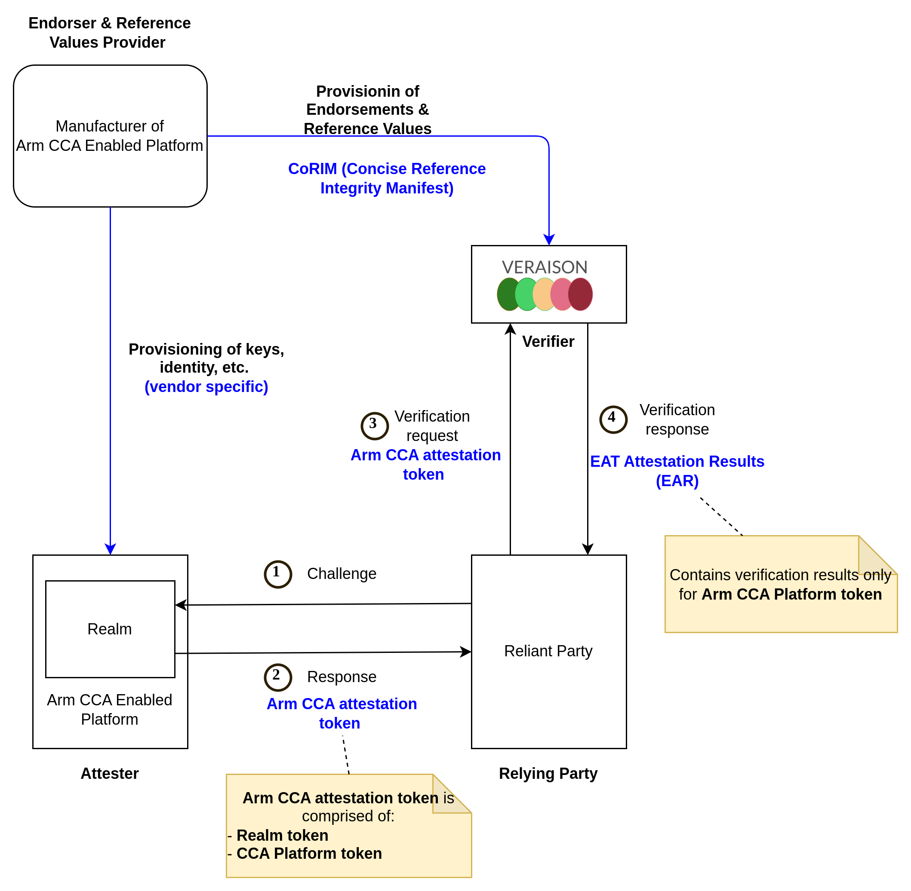
Figure 1: Remote Attestation protocol using RATS Background Check Model
In most scenarios where the Relying Party interacts with the Attester, the Relying Party wants to establish an encrypted secure channel with the Attester to exchange some data. In the case of Confidential Computing, the usual scenario is where the Relying Party (an owner of confidential data) wants to establish a secure channel with the Attester (a Confidential Virtual Machine hosting computational software) to securely provision confidential data to the Attester for further processing. In this case, the TLS protocol alone isn’t enough to make sure that the TLS endpoint terminates in the Attester; otherwise, the protocol will be susceptible to relay attacks as shown in the work of F. Stumpf, O. Tafreschi, P. Röder, C. Eckert, and others titled “A robust integrity reporting protocol for remote attestation,” (WATC’06Fall). This resulted in many RA-TLS (Remote Attestation - TLS) implementations, for example Integrating Intel SGX Remote Attestation with Transport Layer Security, and Attested TLS.
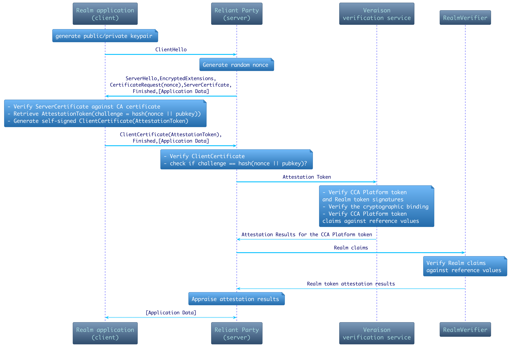
Figure 2: RA-TLS Sequence Diagram (Attester as a Client)
Our implementation is based mostly on the concepts mentioned in Integrating Intel SGX Remote Attestation with Transport Layer Security and Attested TLS documents. In detail, the protocol implemented by Islet is based on the TLS v1.3 protocol which handles the handshake, and the attestation is implemented by the custom certificate creation and validation procedures.
In the simplest example, which is implemented by Islet, the Relying Party implements the TLS server with a self-signed root certificate and a custom certificate verifier.
The client in this case is an application running inside a secure realm. It implements the TLS client with a custom certificate generator that creates a self-signed certificate with the attestation token embedded in the optional field.
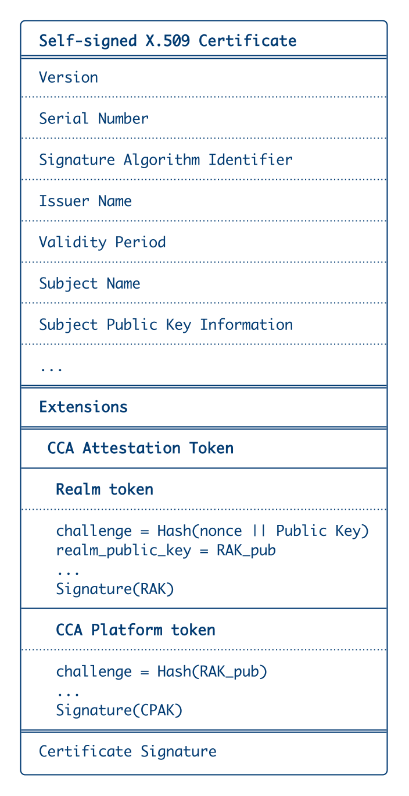
Figure 3: X.509 Certificate with an embedded Arm CCA attestation token
As a reminder, an attestation token is a signed set of claims provided by the execution environment (including measurements, a nonce for freshness, and a cryptographic signature from a trusted attestation key) that will be verified by the Verifier.
Additionally, to prevent replay attacks, the server will generate a random challenge that the client is expected to embed inside the token. When the TLS handshake has finished successfully, the software is attested and established TLS channel can be used to transfer sensitive data or other software.
Implementation details
*Figure 4: Remoe attestation *
Legend
Islet RMM(provided by this project) is a Realm Management Monitor implemented in Rust. It is used to manage realms and generate attestation tokens in the upcoming ARMv9 architecture.RaTlsClientis the client of the modifiedTLSprotocol which uses a custom cert generator that embeds the attestation token.RaTlsServeris the server of the modifiedTLSprotocol which implements a custom cert verifier that usesVeraisonandRealm verifierto verify the attestation evidence.Verification serviceis the actual service in theVeraisonproject responsible for attesting software; currently, it only checks the platform part of the token.Realm measurementsis a data store holding the reference realm measurements, so that theRaTlsServercan check (using the localRealm veriferthe realm part of the token (as mentioned,Veraisononly attests the platform part).
Attestation flow
- The attestation is initiated by the
RaTlsClientcreating aTCPconnection to theRaTlsServerand starting theTLShandshake. - The
RaTlsServersends a challenge to the client (it’s a 64-bit number used to protect against replay attacks). - The
RaTlsClientrunning inside a realm providesIslet RMMwith the challenge and retrieves a signed attestation token containing:- platform measurements (platform state, identity, bootloader measurements,
Islet RMMmeasurements itself, etc.) - signature signed by the
CPAKorPlatform key - realm measurements
- realm challenge which is the challenge we got from
RaTlsServer - signature signed by
RAK(Realm Attestation Key)
- platform measurements (platform state, identity, bootloader measurements,
- The
RaTlsClientcreates a self-signedSSLcertificate with the token embedded as anX509extension and provides it to the server. - The
RaTlsServerextracts the token from the certificate and validates the challenge. - Next, it uses the
Verification service(Veraison) to validate the platform part of the token. - At last, the
Realm measurementsare used to check the realm part. - If all checks finish successfully, the handshake concludes and an encrypted
TCPconnection between theRaTlsClientandRaTlsServeris opened and ready to transfer sensitive data.
For more detailed instructions, refer to Remote Attestation Example. It contains a step-by-step guide of running the attestation demo using Islet.
Remote Attestation Example
Introduction
The process consists of several parts:
- provisioning
- gathering measurements
- feeding measurements to veraison and realm verifier
- running realm for verification purposes
- running verification services (veraison/realm verifier)
- verification itself
It is best and even sometimes required that all the required repos are placed in
one directory. I’ll call it CCA and it will be referred throughout this file.
The following repos will be used:
-
Islet: https://github.com/islet-project/islet that provides:
- the whole SW/FW stack and scripts for running the emulated environment under the QEMU
- Islet HES https://github.com/islet-project/islet/tree/main/hes
- kvmtool-rim-measurer from https://github.com/islet-project/islet/tree/main/third-party/
-
Various miscelanous tools and libraries for Remote Attestation
- rust-rsi: https://github.com/islet-project/rust-rsi A library implementing token and RSI related functionalities (fetching, parsing).
- rsictl: https://github.com/islet-project/rsictl Tool for performing RSI operations from user space.
- rocli: https://github.com/islet-project/rocli Tool for provisioning reference token and CPAK to the Veraison services.
- ratls: https://github.com/islet-project/ratls A library implementing RaTLS protocol for attestation purposes.
- realm-verifier: https://github.com/islet-project/realm-verifier A library for verifying RIM and REMs with reference values.
- veraison-verifier: https://github.com/islet-project/veraison-verifier A library for verifying platform token with reference values using Veraison service.
-
Veraison services project: https://github.com/veraison/services
Preparation
Only the Islet repository should be checked manually:
CCA/islet
Now run make inside the CCA/islet/examples/veraison directory. This compiles
some tools that will be used for this demo and places them inside proper
directories. It also copies the root-ca.crt used by realm-application.
CCA/islet/examples/veraison $ make clean # optional, will cause full rebuild
CCA/islet/examples/veraison $ make
The files installed are:
root-ca.crtcopied toCCA/islet/out/sharedrsictlinstalled inCCA/islet/out/shared/bin(AARCH64) andCCA/islet/examples/veraison/bin(X86_64)realm-applicationinstalled inCCA/islet/out/shared/binrocliinstalled inCCA/islet/examples/veraison/binreliant-partyinstalled inCCA/islet/examples/veraison/bin
Provisioning
This is emulated by generating CPAK public key using one of camellia-hes utilities:
CCA/islet/hes/cpak-generator $ cargo run
This will by default generate a CPAK using dummy GUK and dummy BL2 hash files
from CCA/islet/hes/res directory and save both key binary and PEM format
respectively as:
CCA/islet/hes/out/cpak_public.bin
CCA/islet/hes/out/cpak_public.pem
Gathering measurements
There are 2 things we need to measure here. Platform and realm.
Platform measurement
The platform measurement is done by getting the whole CCA token. Platform measurements are saved there.
This is performed by some specifically prepared realm (e.g. one provided by
CCA/islet/scripts/qemu-cca). To do this do the following:
CCA/islet $ ./scripts/init.sh
CCA/islet $ ./scripts/qemu-cca --normal-world=linux-net --realm=linux --rmm=islet --hes --rmm-log-level info
The first command will initialize the scripts and download all required components. The second command will build the platform and the realm and run the QEMU emulator and the HES application.
When run under X environment terminals should open named as following:
- Firmware
- Host
- Realm
We will be exclusively using the Host one.
When the QEMU linux is booted we need to run the realm:
$ ./launch-realm.sh
This will take some time. Wait until you have a realm loaded. Then load RSI module and get the token:
Welcome to Buildroot
buildroot login: root
# cd /shared
shared # insmod rsi.ko
shared # ./bin/rsictl attest -o token.bin
For the token its challenge value will be randomized, but in here it doesn’t matter. Now we can kill the QEMU (ctrl-c on the QEMU terminal).
The generated token is saved as the following file:
CCA/islet/out/shared/token.bin
Realm measurement
Realm measurement is done by generating a json file containing realm information that will be fed to realm verifier.
Using kvmtool-rim-measurer
Caution
This tool needs an update for v1.0-rel0, use the alternative method below for now
Warning
This section needs to be simplified
This is performed by a small helper program called kvmtool-rim-measurer. It basically
runs a modified lkvm tool that calculates and displays the RIM
value. The process looks as follows:
- generate/get the realm you want to use (for now generated by
qemu-ccascript, those files can be taken fromCCA/islet/out/shared, these files include the linux kernel imagelinux.realm, initrd filerootfs-realm.cpio.gzand the shell script used for launching the realmlaunch-realm.sh) - Build the kvmtool-rim-measurer tool according to the description https://github.com/islet-project/3rd-kvmtool/blob/kvmtool-rim-measurer/eac5/BUILD-RIM-MEASURER
- Create a dedicated directory for realm files (e.g.
CCA/islet/out/rim-extractor) and copy all the realm files we want to measure to that folder - copy the resulting
lkvm-rim-measurerto theCCA/islet/out/rim-extractorfolder - substitute
lkvmtolkvm-rim-measurerin theCCA/islet/out/rim-extractor/launch-realm.shscript - get into the
CCA/islet/out/rim-extractorfolder and run thelaunch-realm.shscript - The
lkvm-rim-measurerwill display the resulting RIM (e.g. RIM: F58AF6D6A022F113627B1E0B1E0D9B9A1BFB460207AC29721E84BCEF4B4F5CE08351684444BC11CF329D1D4C807BB621807916C2DF4F56B7326E8D16692546A8)
Alternatively: extract the RIM from the token file
Display the token using rsictl command:
CCA/islet/examples/veraison $ ./bin/rsictl verify -i ../../out/shared/token.bin | grep 'Realm initial measurement'
Realm initial measurement (#44238) = [ace992744cb08283a2c5a31785b2d307a7936825751f9affc64ea37b02d9effb]
RIM value is between [] characters.
Create a refence measurement values file
Create a reference.json file using the commands below (replace the
PASTE_THE_OBTAINED_RIM_HEX_STRING_HERE with the RIM obtained from one of the
previous steps):
export RIM="PASTE_THE_OBTAINED_RIM_HEX_STRING_HERE"
cat > reference.json << EOF
{
"version": "0.1",
"issuer": {
"name": "Samsung",
"url": "https://cca-realms.samsung.com/"
},
"realm": {
"uuid": "f7e3e8ef-e0cc-4098-98f8-3a12436da040",
"name": "Data Processing Service",
"version": "1.0.0",
"release-timestamp": "2024-09-09T05:21:31Z",
"attestation-protocol": "HTTPS/RA-TLSv1.0",
"port": 8088,
"reference-values": {
"rim": "$RIM",
"rems": [
[
"0000000000000000000000000000000000000000000000000000000000000000",
"0000000000000000000000000000000000000000000000000000000000000000",
"0000000000000000000000000000000000000000000000000000000000000000",
"0000000000000000000000000000000000000000000000000000000000000000"
]
],
"hash-algo": "sha-256"
}
}
}
EOF
The resulting json will be saved as the following file:
CCA/islet/examples/veraison/reference.json
Caveat: only RIM is supported for now, the REMs are placeholders.
Provisioning/Measurement summary
Those 2 processes should end with the following things
- Prepared realm that won’t be modified anymore:
linux.realm rootfs-realm.cpio.gz launch-realm.shFor now we use the one generated by qemu-cca - Public CPAK key:
cpak_public.bin cpak_public.pem - Platform measurement:
token.bin - Realm measurement:
reference.json
CPAK keys, token and measurement files should be sent to verification services using a safe communication channel.
Running realm for verification purposes
This is done in almost the same way we run realm to get the token.
Run the QEMU with HES and network this time. Use the –run-only param from now on not to regenerate the realm anymore so our measurements won’t get stale:
CCA/islet $ ./scripts/qemu-cca --normal-world=linux-net --realm=linux --rmm=islet --hes --rmm-log-level info --run-only
When QEMU Linux is booted run the realm:
# ./launch-realm.sh net
Inside the realm you need to do the following:
- configure the network
- load the RSI module
- set the date for the certificates to work properly
This is how it looks:
Welcome to Buildroot
buildroot login: root
# cd /shared
shared # ./set-realm-ip.sh
shared # insmod rsi.ko
shared # date -s "2025-09-12 12:00"
Running and provisioning verification services (Veraison, realm-verifier)
To bootstrap the Veraison services use the CCA/islet/examples/veraison/bootstrap.sh:
CCA/islet/examples/veraison $ ./bootstrap.sh
In details, it does a couple of things:
- Cloning the https://github.com/veraison/services repo to
CCA/islet/exmaples/veraison/services. - Applies
veraison-gopls-version.patchto fix compilation andveraison-no-auth.patchto disable endpoints authentication. - Builds Docker containers by running
CCA/islet/exmaples/veraison/services/deployments/docker/Makefile. - Start
Veraisonby runningveraison start. - Inserts the
./accept-all.regopolicy which makesVeraisonaccept all implementation IDs etc. (normally you are supposed to create a set of rules checking various parts of the attestation token).
To get access to the veraison cli interface source:
CCA/islet/exmaples/veraison $ source services/deployments/docker/env.zshfor zsh,CCA/islet/exmaples/veraison $ source services/deployments/docker/env.bashfor bash.
Check if all 5 veraison services are running:
$ veraison status
vts: running
provisioning: running
verification: running
management: running
keycloak: running
And run provisioning of token and CPAK in PEM format:
CCA/islet/examples/veraison/provisioning $ ./run.sh -t <path/to/token.bin> -c <path/to/cpak_public.pem>
This will provision a reference token and public CPAK to allow Veraison verification.
It’s possible to see current values stored in Veraison:
$ veraison stores
Run reliant-party, which is provisioned with reference.json and
acts as Reliant Party with communication to realm and Veraison
services (this binary takes several parameters, most should not be of
any concern apart from passing latest reference values in reference.json):
CCA/islet/examples/veraison $ RUST_LOG=info ./bin/reliant-party -r <path/to/reference.json>
If needed, ‘-b’ option can be used to pass different network interface binding (the default is 0.0.0.0:1337):
CCA/islet/examples/veraison $ RUST_LOG=info ./bin/reliant-party -r <path/to/reference.json> -b <LOCAL_IP:PORT>
Reliant-party awaits on given IP:PORT for communication from Realm and
utilizes our ratls Rust library and realm-verifier library (for reference.json
reference values verification) to verify client CCA token.
Verification itself
On the realm side (the one we already run) just trigger the verification
process. This is done using realm-application (CCA/islet/examples/veraison/realm-application).
It will initialize RATLS connection to verification service by performing the necessary steps:
- receive challenge value from verification service
- request the token from RMM/TF-A/HES using the challenge
- send the received token to verification service
- establish safe connection if verification services agrees to do so
This is done with the following command on the realm (use 192.168.10.1:1337 when run on the same machine or any other <SERVER_IP:PORT> when needed)
shared # RUST_LOG=info ./bin/realm-application -r root-ca.crt -u 192.168.10.1:1337
That command will take some time as computation inside Realm can be slow and it does asymmetric cryptography (RSA key generation).
Verification success
When verification succeeds, both realm-application and realm-verifier should not
output any errors.
With the info log level (as set above) realm client should report successful socket write with ‘GIT’ message and verifying server should output that message.
Application provisioning
Islet project implements an application provisioning mechanism that provides a generic way to install applications from a registry. It uses docker containers (OCI) as application image format – this way, Islet can benefit from the existing infrastructure & standards for creating and shipping applications.
The process of provisioning is handled by a realm daemon which is responsible for decrypting and mounting storage for applications as well as installing and running them. The storage is created by stacking 2 filesystems using OverlayFS so that the application can modify arbitrary files and directories - changes will be stored at the “Data.raw” disk, but the application image disk “Image.raw” will be untouched, containing only original binaries. Additionally, to provide confidentiality to the applications, design employs sealing key derivation mechanism similar to the one described in Open Profile for DICE specification. It is a layered approach, where each layer is responsible for deriving its own keys and preparing key material for the next layer - so that the lower layer keys depend on all upper ones. The storage encryption keys depend on both: the application identity and also on the hardware trust anchor taken from HES. Since key derivation is based on objects identity (not full data hash), this mechanism allows for easy application & firmware update, without breaking access to data stored in persistent storage.
Demo instruction
All repositories here are to be cloned to some one common directory that is
referenced here as $CCA.
Prepare host
If you’re using docker (e.g. for the Veraison below) it disables FORWARD by default and it might cause issues with the network configuration below. For details see here:
https://docs.docker.com/engine/network/packet-filtering-firewalls/#docker-on-a-router
The fastest way (not necessarily the best as it’s outside the scope of this document) to remedy this is:
sudo iptables -I DOCKER-USER -j ACCEPT
Prepare repositories
cd $CCA
git clone https://github.com/islet-project/islet.git
git clone https://github.com/islet-project/realm-manager.git
git clone https://github.com/islet-project/realm-metadata-tool.git
git clone https://github.com/islet-project/image-registry.git
Prepare/initialize islet
This will initialize Islet dependencies required for it to work and compile two
rust tools used for this example (rsictl and rocli).
cd $CCA/islet
./scripts/init.sh
cd $CCA/islet/examples/app-provisioning
make
Prepare the provisioning framework
Build realm image
You need to have libdevmapper-dev package installed (sudo apt install libdevmapper-dev).
cd $CCA/realm-manager/realm
make deps
make compile-image
Copy resulting kernel and initramfs images to islet shared dir
cp out/Image $CCA/islet/out/shared/nasz-realm
cp out/initramfs.cpio.gz $CCA/islet/out/shared/initramfs.cpio.gz
Build warden daemon
Warden daemon is responsible for providing resources such as disks and networking to realms. It manages realm lifetime by starting and stopping kvmtool. More details are available at realm-manager/warden/warden_daemon.
cd $CCA/realm-manager/warden
make
Copy resulting binaries to islet shared dir
mkdir $CCA/islet/out/shared/warden
cp -v bin/* $CCA/islet/out/shared/warden/
Provision the Application/Realm
Obtain the attestation token
To obtain the attestation token we need to launch the realm and perform attestation using RSI call. Warden daemon has a command for that.
Launch islet
cd $CCA/islet
./scripts/qemu-cca --normal=linux-net --realm=linux --rmm=islet --rmm-log-level info --hes
Start the warden daemon (‘host’ terminal)
export RUST_LOG=debug
./warden/warden_daemon -p 1337 -v ./lkvm -u /tmp/usocket12344 -d ./warden/dnsmasq -w /tmp/workdir -t 3200 --lkvm-runner --cca-enable --dns-records /image-registry.net/192.168.10.1 &
After seeing: [SOME_DATE INFO warden_daemon::socket::unix_socket_server] Starting Unix Socket Server
./warden/cmd_client -u /tmp/usocket12344
All the commands below are within the prompt of the client:
Obtain the token using warden daemon
create-realm -n 1 -r 256 -k ./nasz-realm -i initramfs.cpio.gz -v 12344 -z 5156ae05-1da0-4e7b-a168-ec8d1869890e
create-application -n light_app -v latest -i image-registry.net:1337 -o 32 -d 32 -r 5156ae05-1da0-4e7b-a168-ec8d1869890e
fetch-attestation-token -r 5156ae05-1da0-4e7b-a168-ec8d1869890e -o token.bin
The token will saved as $CCA/islet/out/shared/token.bin. QEMU can be closed
now with Ctrl-C on the ./scripts/qemu-cca terminal.
Obtain the RIM
Using lkvm-rim-measurer tool
Caution
This tool needs an update for v1.0-rel0, use the alternative method below for now
Warning
This section needs to be simplified
To obtain the RIM we can use the lkvm-rim-measurer tool. Firstly, clone the lkvm-rim-measurer tool repository.
Build the libfdt library
cd $CCA/islet/third-party/dtc
make
Build the lkvm-rim-measurer tool
cd $CCA/islet/third-party/kvmtool-rim-measurer/
./build-rim-measurer.sh
This should compile the lkvm-rim-measurer executable (located in $CCA/islet/third-party/kvmtool-rim-measurer/ directory).
Copy the linux and initramfs images to the rkvmtool-rim-measurer directory:
cp $CCA/realm-manager/realm/out/Image .
cp $CCA/realm-manager/realm/out/initramfs.cpio.gz .
Create a dummy disk:
touch dummy-disk.img
Launch the lkvm-rim-measurer tool to obtain the RIM:
./lkvm-rim-measurer run \
-c 1 \
-k Image\
-i initramfs.cpio.gz \
-m 256 \
-n tapif=tap100,guest_mac=52:55:00:d1:55:02 \
--vsock 12344 \
--console serial \
--irqchip=gicv3 \
--disable-sve \
--debug \
--realm \
--measurement-algo=sha256 \
-d dummy-disk.img \
--islet
The tool should display the RIM at the last line e.g.:
...
RIM: EB89CD86CEC19ABA5008E9380361362DBE5E4A5EBC01869166EEDD206840BD410000000000000000000000000000000000000000000000000000000000000000
For the sha256 measurement algorithm, save the first 64 hexadecimal characters of RIM for the further use.
Alternatively extract the RIM from the token obtained earlier
cd $CCA/islet/examples/app-provisioning
./bin/rsictl verify -i $CCA/islet/out/shared/token.bin | grep "Realm initial measurement"
The RIM value will be printed between [] characters:
Realm initial measurement (#44238) = [216ea683d4ddb767c8f7be437832dc24a9692bff014eceb36ecb7a44e75d121c]
Create provisioning files with RIM
cd $CCA/islet/examples/app-provisioning
export RIM="PASTE_THE_OBTAINED_RIM_HEX_STRING_HERE"
cat > metadata.yaml << EOF
realm_id: "com.company.realm"
version: "1.0.0"
svn: 1
rim: "$RIM"
hash_algo: SHA256
EOF
cat > reference.json << EOF
{
"version": "0.1",
"issuer": {
"name": "Samsung",
"url": "https://cca-realms.samsung.com/"
},
"realm": {
"uuid": "f7e3e8ef-e0cc-4098-98f8-3a12436da040",
"name": "Data Processing Service",
"version": "1.0.0",
"release-timestamp": "2024-09-09T05:21:31Z",
"attestation-protocol": "HTTPS/RA-TLSv1.0",
"port": 8088,
"reference-values": {
"rim": "$RIM",
"rems": [
[
"0000000000000000000000000000000000000000000000000000000000000000",
"0000000000000000000000000000000000000000000000000000000000000000",
"0000000000000000000000000000000000000000000000000000000000000000",
"0000000000000000000000000000000000000000000000000000000000000000"
]
],
"hash-algo": "sha-256"
}
}
}
EOF
Prepare Metadata
For details see https://github.com/islet-project/realm-metadata-tool
cd $CCA/realm-metadata-tool
openssl ecparam -genkey -name secp384r1 -noout -out realm-vendor.pem
cargo run -- create -m $CCA/islet/examples/app-provisioning/metadata.yaml -k realm-vendor.pem -o metadata.bin
Copy resulting metadata binary to islet shared dir
cp metadata.bin $CCA/islet/out/shared
Prepare and provision Veraison
Generate the CPAK key
cd $CCA/islet/hes/cpak-generator
cargo run
This will by default generate a CPAK using dummy GUK and dummy BL2 hash files
from $CCA/islet/hes/res directory and save the key as
$CCA/islet/hes/out/cpak_public.pem.
Bootstrap the Veraison service
The following command requires a working docker and go installations. It
will install the Veraison service and cmd line tools: arc and rocli.
cd $CCA/islet/examples/app-provisioning/veraison
./bootstrap.sh
Provision the Veraison service
Make sure to copy the files into the current directory as shown below. otherwise the Veraison docker tools won’t be able to find them.
cd $CCA/islet/examples/app-provisioning/veraison/provision
cp $CCA/islet/hes/out/cpak_public.pem .
cp $CCA/islet/out/shared/token.bin .
./run.sh -t token.bin -c cpak_public.pem
Setup image registry and example application
Compile example app #1
Caution
TODO: create a Makefile here
Warning
The rest of the document uses the application from example #2, so unless doing something custom it’s preferred to use that one.
cd $CCA/realm-manager/realm/example-application
docker build . -t example_app
docker image save -o example_app.tar example_app:latest
cd $CCA/image-registry
mkdir registry/example_app
cp $CCA/realm-manager/realm/example-application/example_app.tar registry/example_app
cd registry/example_app
tar xf example_app.tar
rm example_app.tar
Note
It is assumed that the recent versions of Docker are used, which by default produce OCI images. To generate OCI images on older docker version firstly you need to install docker-buildx package on your system (e.g. “apt install docker-buildx”). Then, create a builder:
docker buildx create –use
Next, run the build process:
docker buildx build –output type=oci,dest=example_app.tar . -f Dockerfile –tag=latest
When signing the application using the
$CCA/image-registry/ir-signtool, you need to add write permission to files located in the blobs/sha256 folder.
Compile example app #2
You need ubuntu’s aarch64 compiler and bear (sudo apt install bear gcc-aarch64-linux-gnu)
cd $CCA/image-registry/registry/light_app
make
Sign the applications
For detailed instructions see: https://github.com/islet-project/image-registry/tree/main/ir-sign
cd $CCA/image-registry/ir-sign
# openssl ecparam -name secp384r1 -genkey -noout -out app-vendor.der -outform DER # (alternative way)
cargo run -- gen-key -o app-vendor.der
cargo run -- sign-image -a light_app -d latest -v app-vendor.der -x $CCA/realm-manager/realm/keys/root-ca.prv
Run image registry
cd $CCA/image-registry/ir-server
cargo run -- -t ra-tls -j $CCA/islet/examples/app-provisioning/reference.json
Launch islet
cd $CCA/islet
./scripts/qemu-cca --normal=linux-net --realm=linux --rmm=islet --rmm-log-level info --hes --run-only
Setup network in normal world linux (paste this in the ‘host’ terminal)
echo 1 > /proc/sys/net/ipv4/ip_forward
echo 'nameserver 8.8.8.8' > /etc/resolv.conf
ping -c 3 1.1.1.1
nslookup www.google.com
Setting up realm (telnet 5000)
Start warden daemon
export RUST_LOG=debug
./warden/warden_daemon -p 1337 -v ./lkvm -u /tmp/usocket12344 -d ./warden/dnsmasq -w /tmp/workdir -t 3200 --lkvm-runner --cca-enable --dns-records /image-registry.net/192.168.10.1 &
After seeing: [SOME_DATE INFO warden_daemon::socket::unix_socket_server] Starting Unix Socket Server
./warden/cmd_client -u /tmp/usocket12344
All the commands below are within the prompt of the client:
Define realm
create-realm -n 1 -r 256 -k ./nasz-realm -i initramfs.cpio.gz -v 12344 -z 5156ae05-1da0-4e7b-a168-ec8d1869890e -d ./metadata.bin
Define an application to provision (choose app below with -n)
create-application -n light_app -v latest -i image-registry.net:1337 -o 32 -d 32 -r 5156ae05-1da0-4e7b-a168-ec8d1869890e
Start realm
start-realm -r 5156ae05-1da0-4e7b-a168-ec8d1869890e
We should observe the realm starting sucessfully, image-registry providing the light_app application through RA-TLS and the application being run inside the realm with:
INFO [app_manager::launcher::handler] Application stdout: Example Application
Stop realm
stop-realm -r 5156ae05-1da0-4e7b-a168-ec8d1869890e
Contents
Realm Management Monitor
Crate islet_rmm
Modules§
Macros§
- const_
assert - const_
assert_ eq - const_
assert_ size - define_
interface - eprint
- eprintln
- get_
granule - get_
granule_ if - init_
table - listen
- println
- to_pa
Functions§
Confidential Application SDK
Crate islet_sdk
Islet HES
Crate islet_hes
Expand description
Islet HES library.
Modules§
- security_
lifecycle - Possible PSA lifecycle states (major):
Structs§
- Attestation
Mgr - Attestation manager implementing
get_delegated_keyandget_platform_tokenfunctinality. - Boot
Measurement - Structure representing the boot measurement metadata and value.
- Boot
Measurement Metadata - Structure representing boot measurement metadata, as it is stored in emulated HW.
- HWClaims
- Hardware provisioned claims.
- IsletHES
- KeyMaterial
Data - Represents data required for key derivation (CPAK/DAK).
- Measurement
- Keeps measurement metadata and value.
- Measurement
Meta Data - Keeps measurement slot metadata.
- Measurement
Mgr - Responsible for storing all software components measurements and performing
the
read_measurementandextend_measurementfunctions.
Enums§
- Attestation
Error - Error kinds returned by AttestationMgr
- ECCFamily
- Supported ecc family types.
- Hash
Algo - Supported public dak hash algorithms.
- IsletHES
Error - KeyBits
- Supported ecc key bit size.
- Measurement
Error - Measurement error enumeration.
- Measurement
Type - Represents hash algorithm used for calculating measurement value.
Constants§
- MAX_
HASH_ VALUE_ SIZE - MEASUREMENT_
VALUE_ MAX_ SIZE - Maximal size based on the longest hash algorithm - sha512
- MEASUREMENT_
VALUE_ MIN_ SIZE - Minimal size based on the shortest hash algorithm - sha256
- NUM_
OF_ MEASUREMENT_ SLOTS - Maximum number of slots - based on the RSS implementation.
- SIGNER_
ID_ MAX_ SIZE - Maximal size based on the longest hash algorithm - sha512
- SIGNER_
ID_ MIN_ SIZE - Minimal size based on the shortest hash algorithm - sha256
- SW_
TYPE_ MAX_ SIZE - Set based on RSS imlementation.
- VERSION_
MAX_ SIZE - Set based on RSS imlementation.
Traits§
- HWData
- Interface for fetching hardware specific data:
Functions§
- calculate_
public_ key_ hash - Calculate hash for given
keywith chosenHashAlgo
Type Aliases§
- HWAsymmetric
Key - Represents a binary hardware asymmetric key. Currently using ECC Curve-P384 (384bit), might be a subject to change.
- HWHash
- Represents a hash value. Calculated by sha256, sha384 or sha512.
- HWSW
Type - Represents a software type value.
- HWSW
Version - Represents a software version value.
- HWSymmetric
Key - Represents a binary hardware 256bit symmetric key
- SWType
- SWVersion
- Signer
Hash - Value
Hash